기본기·모션그래픽·익스프레션·합성·3D부터 힉스필드와 Claude로 이어지는 AI 작업까지 After Effects 2027 · Higgsfield Plugin v1.0.64 기준
안지아 지음
2027 EDITION · 2026.11
GUIDE
이 책을 쓰는 방법
이 책은 애프터이펙트(이하 애펙) 한 가지 프로그램을 처음부터 끝까지 다룹니다. 앞의 절반은 기본기·모션그래픽·합성·3D이고, 뒤의 절반은 그 위에 AI를 얹는 세 가지 길, 곧 힉스필드 플러그인 패널, Claude 브리지, 애펙 자체 AI입니다.
이 책의 길. ●의 개수는 난이도입니다(●○○ 처음 · ●●○ 익숙해진 뒤 · ●●● 전공 심화).
책의 특징
모든 화면은 실제로 찍었습니다. 2026년 11월 22~23일, 한 대의 Windows PC에서 애펙 2027 영문판과 힉스필드 플러그인 v1.0.64를 설치하고 Claude가 직접 메뉴를 눌러 가며 캡처했습니다.
실제 크레딧을 기록했습니다. 실습마다 몇 크레딧이 들었고 몇 분이 걸렸는지 그대로 적었습니다(25장).
안 되는 것도 적었습니다. AI가 대신하지 못해 사람이 직접 한 단계는 “사람이 할 일”로 표시했습니다.
실습이 먼저입니다. 손으로 먼저 해 보고 원리는 뒤에 정리합니다. 실습 소스와 애펙 프로젝트 파일은 깃허브 저장소에 있습니다(부록 E).
표기 규칙
표기
뜻
Window(창) → Extensions(확장)
영문 메뉴 먼저, 괄호 안은 한글판 이름. 화면은 모두 영문판(17-2)
따라 하기왜 그럴까한 걸음 더
절 제목 앞의 꼬리표. 실습 · 원리 · 심화
현장의 기준도전 과제
실무에서 통하는 수치와 습관 · 혼자 해 보는 과제
난이도 ●○○ · ●●○ · ●●●
장 제목 오른쪽 위. ●●● 장은 처음엔 건너뛰어도 됩니다
연보라 상자 PROMPT · EXPRESSION
그대로 붙여 넣어도 되는 지시문과 코드
사진 속 ①②③
보라색 번호 순서대로 누릅니다. 아래 설명의 번호와 같습니다
성공하면 · 막혔을 때
장 끝의 점검 상자. 결과 확인과 가장 흔한 막힘의 해결
Ctrl+D
단축키는 Windows 기준. Mac은 Ctrl → Cmd, Alt → Option
준비물
After Effects 2024 이상 (이 책은 2027 기준, 일부 기능은 26.x 이상에서만 보입니다)
힉스필드 유료 요금제, Claude 계정과 데스크톱 앱 (PART 5~8 실습용)
Windows 10/11 64비트 또는 macOS, 인터넷 연결
실습 소스와 프로젝트 파일 (깃허브 저장소에서 내려받기, 부록 E)
15주 진도 예시 — 수업과 독학
주
내용 (장)
주
내용 (장)
1
역사와 AI 지도, 설치 (00, 17-2)
9
크로마키, 색 보정 (08, 12)
2
처음 30분, 화면 읽기 (01~02)
10
트래킹, 3D 트래커, 지우기 (09~11)
3
키프레임과 그래프 (03)
11
3D, 렌더와 출력, 직업별 팁 (13~16)
4
부모, 마스크, 매트 (04)
12
AI 연결, 패널 ① 편집 (17~18)
5
셰이프와 모션그래픽 기법 (05)
13
패널 ②③, Claude 타이틀 (19~22)
6
텍스트 애니메이션 (06)
14
자체 AI, 통합 기획, 검수 (23~25)
7
익스프레션 ① 기본 어휘 (07)
15
기말 발표: 30초 홍보영상 (24, 26)
8
익스프레션 ②, 중간 과제 (07)
독학
하루 한 장씩 4~5주
시간이 없다면01 → 03 → 04장으로 기본기를 잡고, 17 → 18 → 21장으로 AI 연결과 실습을 먼저 해 봅니다. 나머지 장은 필요한 기능이 생길 때 찾아 읽어도 됩니다. 각 장은 앞 장의 결과물 없이도 저장소의 소스만으로 따라 할 수 있게 썼습니다.
CONTENTS
차례
PART 0 · 이해하기
00 · ①어도비와 애프터이펙트, 30년의 흐름
00 · ②왜 지금 AI인가 — 힉스필드, Claude, MCP
00 · ③시작 전에 — 비용, 가입, 로그인, 크레딧
PART 1 · 애펙 기본기
01처음 30분 — 글자 하나 움직여 영상으로 저장하기
02화면, 시간, 아이콘 읽기
03움직임의 품질 — 키프레임과 그래프
04구조 만들기 — 부모, 프리컴포즈, 마스크, 매트
PART 2 · 모션그래픽
05셰이프와 모션그래픽 기법 — 선, 효과, 퍼펫, 파티클
06텍스트 애니메이션과 타이포그래피
07익스프레션 완전 정리
PART 3 · 합성과 VFX
08크로마키 — 그린스크린과 블루스크린
09트래킹 — 움직이는 화면에 붙이기
103D 카메라 트래커와 하늘 바꾸기
11Object Matte와 Content-Aware Fill
12색 보정과 룩
PART 4 · 3D와 실무
133D 레이어, 카메라, 라이트
14렌더링, 출력, 다른 프로그램과 연결
15함께 쓰는 도구, 비교할 도구
16직업별 실전 팁
PART 5 · AI 연결 준비
17연결하기 — 영문 전환, 플러그인, 브리지
PART 6 · 힉스필드 패널
18패널 ① 편집 — 배경 제거·리프레임·타투 지우기
19패널 ② 장면 — 날씨·시간대·조명·동작
20패널 ③ 오디오 — 빈 구간·번역·목소리
PART 7 · Claude와 애펙 자체 AI
21Claude ① 타이틀 만들고 고치기
22Claude ② 로고 리빌·하단 자막·전환·유리 효과
23애펙 자체 AI — AI Assistant와 Object Matte
PART 8 · 완성과 정리
24통합 프로젝트 — 30초 홍보영상 기획
25크레딧·저작권·검수 (실제 기록표)
26앞으로 — 발전 방향, 배움, 도전
부록단축키 · 이펙트 30선 · 플러그인 · 용어 · 저장소 · 작업 기록 · 문제 해결 · 참고 자료
지은이
PART 0
이해하기
도구를 누르기 전에, 이 도구가 어디서 왔고 왜 지금 AI와 만나는지부터 짚습니다. 배경을 알면 같은 버튼도 다르게 보입니다.
CHAPTER 00 · ①
어도비와 애프터이펙트, 30년의 흐름 ●○○
애프터이펙트는 1993년 작은 회사에서 시작해 영화·방송·광고 모션그래픽의 표준이 되었습니다. 그리고 2026년, AI가 “함께 일하는 동료”로 들어오는 세 번째 전환점을 맞았습니다.
0-1 어도비라는 회사
어도비(Adobe)는 1982년 존 워녹(John Warnock)과 찰스 게시키(Charles Geschke)가 세운 회사입니다. 인쇄용 페이지 기술 언어 PostScript로 출발해, 1990년 Photoshop, 1991년 Premiere를 내놓으며 “출판 회사”에서 “이미지와 영상 회사”로 넓어졌습니다. 2013년에는 상자에 담아 팔던 Creative Suite(CS)를 끝내고 매달 내는 구독형 Creative Cloud(CC)로 바꿨고, 2023년에는 생성형 AI Firefly를 내놓았습니다.
왜 알아야 하나어도비 앱은 서로 연결되어 있습니다. 애펙에서 만든 것을 프리미어로 보내고, 포토샵 레이어를 그대로 불러옵니다. AI도 같은 방식으로 “앱 사이를 잇는 일”부터 들어오고 있습니다.
0-2 애프터이펙트의 탄생
애프터이펙트는 1990년에 설립된 미국 회사 CoSA(The Company of Science and Art)가 만들었습니다. 1993년 1월 1.0이 나왔는데, 지금 기준으로는 아주 단순해서 타임라인 창도 없고 레이어마다 효과를 하나만 걸 수 있었습니다. 같은 해 7월 CoSA는 알더스(Aldus)에 인수되었고, 알더스가 1994년 어도비와 합쳐지면서 애펙은 어도비 제품이 되었습니다. 어도비 이름으로 처음 나온 버전은 1995년의 3.0이었고, 1997년 3.1이 윈도를 지원하기 전까지는 맥에서만 돌아갔습니다.
그때까지 영화 특수효과는 큰 스튜디오가 비싼 장비와 자체 프로그램으로 만들던 일이었습니다. 개인 컴퓨터에서 레이어를 겹쳐 합성하는 애펙이 나오면서, 작은 팀도 방송 타이틀과 광고 효과를 만들 수 있게 되었습니다. 2019년에는 그 공로로 아카데미 과학기술상을 받았습니다.
0-3 버전으로 보는 발전 연혁
시기
버전
바뀐 것과 의미
1993.01
CoSA After Effects 1.0
레이어 기반 합성의 시작. 타임라인 없음, 레이어당 효과 1개
1995.10
Adobe After Effects 3.0
어도비 이름으로 첫 출시. 1997년 3.1부터 윈도 지원
2007
CS3
Creative Suite에 들어가 포토샵·프리미어와 한 묶음이 됨
2012
CS6
3D 카메라 트래커, 글로벌 퍼포먼스 캐시 — “빠른 애펙”의 시작
2013
CC (12.0)
구독형 전환. Cinema 4D Lite와 Cineware로 3D 작업이 애펙 안으로
2019
CC 2019~2020
Content-Aware Fill(영상 속 물체 지우기). 아카데미 과학기술상
2020.10
17.5 (2020)
Roto Brush 2 — AI(Adobe Sensei)로 인물 윤곽 자동 추적
2021.10
22.0 (2022)
Multi-Frame Rendering — CPU 코어를 모두 써서 미리보기·렌더가 빨라짐. Composition Profiler
2022.10
23.0 (2023)
렌더 큐에서 H.264 바로 출력, 아무 레이어나 고르는 Track Matte, 3D 모델 불러오기·Properties 패널 베타
2023.12
24.1 (2024)
Advanced 3D 렌더러와 3D 모델 불러오기 정식, 이미지 기반 조명(환경광)
2024.03
24.3
글자 하나하나에 스타일을 주는 스크립트(Per-character styling)
2025.04
25.2
고성능 미리보기 재생, HDR 미리보기, 영상을 광원으로 쓰는 Animated Environment Lights, FBX 불러오기
2025.08
25.4
HDR 가져오기·내보내기, 이펙트 설명(Info) 버튼, 기본 카메라 설정
2026.01
26.0
파라메트릭 3D 메시, Substance 3D 재질, SVG 불러오기, 가변 글꼴, Spot·Parallel 라이트 그림자, 운영체제와 다른 언어로 실행
2026.04
26.2
Object Matte — 한 번 클릭으로 사람·차를 골라 끝까지 따라가는 AI 매트. Quick Apply
2026.06
26.3
고급 3D 렌더러에 피사계 심도(Depth of Field)
2026.09
26.5
새 가이드, Object Matte 디스크 캐시, 효과 색 라벨, 새 Effect Controls, ACES 2.0
2026.11
27.0 (2027)
AI Assistant 패널(프로젝트 정리, 익스프레션 작성·수정, 이미지·영상 생성), 레이어를 3D 재질로 쓰기, Adobe Stock 패널. 같은 날 외부 AI가 앱을 직접 다루는 로컬 MCP 미리보기 공개
출처: CoSA 기록, Computer Graphics World(2013), Adobe 릴리스 노트(What’s new, 2022~2026), Adobe MAX 2026 발표(2026.11.10). 괄호 안은 그 버전의 연도 이름입니다. 2021년 10월의 22.0부터 버전 번호와 연도 이름이 같아졌습니다(22.0 = 2022).
0-4 세 번의 전환점
1993 —
개인 컴퓨터로
스튜디오 장비 없이 책상 위에서 합성과 모션그래픽을 만들게 되었습니다.
2013 —
구독과 연결로
매달 업데이트를 받고, 3D·클라우드·다른 앱과 이어졌습니다.
2026 —
AI 동료와 함께
말로 설명하면 AI가 레이어와 키프레임을 만들고, 사람은 방향과 검수를 맡습니다.
CHAPTER 00 · ②
왜 지금 AI인가 — 힉스필드, Claude, MCP ●○○
이 책은 애펙 안에서 AI를 쓰는 길 세 가지를 다룹니다. 각각 잘하는 일이 다르기 때문에, 먼저 지도를 그려 둡니다.
0-5 애펙 작업에서 시간이 드는 곳
모션그래픽 작업 시간의 대부분은 “아이디어”보다 반복 작업에 들어갑니다. 인물 윤곽을 프레임마다 따는 로토스코핑, 비율별 버전 만들기, 같은 자막을 수십 번 고치는 일, 소스가 없어서 촬영을 다시 잡는 일입니다. AI가 들어오는 자리는 바로 이 반복과 빈자리입니다.
예전에 하던 일
지금 AI가 돕는 방식
이 책의 장
프레임마다 로토스코핑
클릭 한 번으로 매트 생성·추적
18장 Remove BG, 11장 Object Matte
세로 영상용 재촬영·재편집
빈 곳을 그려서 비율 변환
18장 Reframe
낮 장면을 밤에 다시 촬영
시간대·날씨를 바꾼 새 클립 생성
19장 Scene
내레이션 재녹음, 해외판 더빙
목소리 교체, 번역 더빙
20장 Audio
타이틀·자막 키프레임 수작업
말로 설명하면 레이어·키프레임 생성
21~22장 Claude
납품 전 프로젝트 점검
AI가 빈 구간·꺼진 레이어를 찾아 보고
23장 AI Assistant
0-6 세 가지 길
길 ①
힉스필드 패널
애펙 안의 버튼으로 새 영상을 만들거나 바꿉니다. 클라우드에서 처리하고 크레딧을 씁니다.
길 ②
Claude + 브리지
대화로 애펙 자체를 조작합니다. 컴포지션, 레이어, 키프레임, 익스프레션을 만듭니다. 크레딧이 들지 않습니다.
길 ③
애펙 자체 AI
AI Assistant와 Object Matte. 어도비가 만든 기능이라 별도 가입 없이 씁니다.
0-7 힉스필드는 무엇인가
힉스필드(Higgsfield)는 여러 회사의 영상·이미지·음성 생성 모델을 한곳에서 쓰게 해 주는 생성형 AI 플랫폼입니다. Seedance, Kling, Veo, Nano Banana 같은 모델을 고르고, 같은 크레딧으로 결제합니다. 2026년 5월 27일 어도비용 플러그인을 내놓아, 브라우저를 오가지 않고 타임라인 위에서 생성·배경 제거·리프레임·업스케일을 할 수 있게 되었습니다. 7월에는 Claude 같은 AI가 MCP로 애펙을 직접 조작하는 기능이 더해졌습니다. 설치 파일 하나로 애펙과 프리미어에 함께 들어갑니다.
0-8 MCP는 무엇이고 왜 중요한가
MCP(Model Context Protocol)는 AI가 다른 프로그램의 기능을 불러 쓰도록 연결하는 공통 규격입니다. 2024년 Anthropic이 공개했고, 2026년에는 AI와 창작 도구를 잇는 사실상의 표준이 되었습니다. 비유하면 AI용 USB 포트입니다. 포트 모양이 같으니 Claude, ChatGPT 같은 AI가 같은 방식으로 애펙, 블렌더, 다빈치 리졸브에 꽂힙니다.
연결
주소
하는 일
Higgsfield MCP
https://mcp.higgsfield.ai/mcp
Claude에서 영상·이미지·음성 생성
Higgsfield Bridge
https://bridge.higgsfield.ai/mcp
Claude의 지시를 애펙 플러그인으로 전달해 컴포지션·레이어 조작
두 연결 모두 API 키가 필요 없습니다. Claude의 커넥터 설정에 주소를 넣고 힉스필드 계정으로 로그인하면 됩니다(17-5절). 결과물은 일반 .aep 파일이어서, AI가 만든 레이어를 사람이 언제든 손으로 고칠 수 있다는 점이 가장 큰 장점입니다.
어도비도 같은 길로어도비는 MAX 2026(2026년 11월 10일 개막)에서 포토샵·일러스트레이터·프리미어·애펙의 로컬 MCP를 미리 공개했습니다. 외부 AI 에이전트가 내 컴퓨터의 원본 파일을 편집 가능한 상태로 직접 고치는 방식이며, 2027년 초 비공개 베타로 시작할 예정입니다. 이 책의 Claude 브리지 실습은 그 미래를 먼저 해 보는 셈입니다.
CHAPTER 00 · ③
시작 전에 — 비용, 가입, 로그인, 크레딧 ●○○
실습에는 세 가지 계정이 필요합니다. 어도비, 힉스필드, Claude. 무엇에 얼마가 드는지 먼저 확인합니다.
0-9 어도비 비용과 학생 할인
플랜
가격(한국, 부가세 포함)
비고
After Effects 단일 앱
₩30,800/월
연간 약정, 월별 청구. 7일 무료 체험
Creative Cloud 모든 앱 (개인)
₩78,100~87,900/월
20개 이상 앱 + 생성 크레딧. 요금제 페이지와 행사 페이지의 정가 표기가 달라 결제 화면에서 확인. 블랙프라이데이 행사가 ₩34,800
모든 앱 — 학생·교사
₩26,400/월 (66% 할인)
첫해 가격. 블랙프라이데이(11.13~11.27)에는 ₩21,000/월(76% 할인)
2026년 11월 23일 adobe.com/kr 확인. 할인율과 기간은 시즌(개학, 블랙프라이데이 등)마다 바뀌므로 구매 전 공식 페이지에서 확인하세요.
학생 할인 자격: 만 13세 이상 학생·교사. 학교 이메일이나 재학 증빙으로 인증합니다. 할인은 첫해에만 적용되고, 연간 플랜이 끝나기 전에 해지하면 위약금이 생길 수 있습니다.
학교 라이선스: 대학이 기관 라이선스를 갖고 있으면 학교 계정으로 무료로 쓸 수 있습니다. 학과 사무실이나 전산원에 먼저 물어보세요.
애펙만 필요하다면: 단일 앱이 싸지만, 프리미어·포토샵을 함께 쓰면 “모든 앱” 학생가가 더 유리합니다.
0-10 어도비 가입과 로그인
1
adobe.com에서 로그인 → 계정 만들기. 이메일, 구글, 애플 계정으로 가입할 수 있습니다.
2
Creative Cloud 데스크톱 앱을 설치하고 같은 계정으로 로그인합니다. 여기서 애펙을 설치·업데이트합니다.
3
애펙 버전은 앱 목록의 ⋯ → 다른 버전에서 고릅니다. 이 책은 2027(MAX 2026 공개 버전)을 썼습니다.
0-11 힉스필드 요금제와 크레딧
플랜
월 요금(월 결제)
월 크레딧
특징
Free
$0
없음(제한적 사용)
둘러보기용, 상업 이용 불가
Starter
$19
270
일부 모델
Plus
$59 (연간 결제 시 $47)
1,200
모든 모델
Ultra
$129 (연간 결제 시 $99)
3,000
크레딧당 가장 저렴, 동시 생성 많음
2026년 11월 higgsfield.ai 요금제 페이지(미국 기준) 확인. 나라와 시점에 따라 금액과 크레딧이 다르니 결제 전 higgsfield.ai/pricing에서 확인하세요. 이 책의 실습은 Ultra 플랜으로 했습니다.
크레딧이란: 생성할 때마다 빠지는 포인트입니다. 모델, 해상도, 길이에 따라 값이 다릅니다. 이 책에서 480p 5초 연습 영상은 2.5크레딧, 업스케일은 약 19크레딧이었습니다(25장).
확인하는 곳: higgsfield.ai 오른쪽 위 프로필, 또는 Claude에게 “남은 크레딧 알려 줘”라고 물으면 됩니다.
모자랄 때: 크레딧 팩을 따로 사거나, Plus·Ultra는 자동 충전을 켤 수 있습니다.
0-12 힉스필드 가입과 플러그인 로그인
1
higgsfield.ai에서 Sign up. 구글 계정이나 이메일로 가입합니다.
2
플러그인 설치 후 애펙 패널에서 Continue in browser를 누르면 브라우저가 열립니다. 로그인하고 허용하면 패널로 돌아옵니다.
3
Claude에서는 Customize(사용자 지정) → Connectors(커넥터) → + Add → Add custom connector(커스텀 커넥터 추가)에 주소를 넣고, 열리는 창에서 힉스필드로 로그인합니다(17-5절). 비밀번호를 Claude에게 알려 줄 필요는 없습니다.
계정 안전로그인과 결제는 반드시 본인이 직접 합니다. AI에게 비밀번호나 카드 번호를 입력하게 하지 마세요. 이 책을 쓸 때도 로그인 단계는 모두 사람이 했습니다.
PART 1
애펙 기본기
AI가 만든 파일도 결국 레이어와 키프레임입니다. 이 부분을 알면 AI의 결과를 고치고, AI에게 정확히 시킬 수 있습니다.
CHAPTER 01
처음 30분 — 글자 하나 움직여 영상으로 저장하기 ●○○
설명보다 먼저 한 번 끝까지 해 봅니다. 30분 뒤에는 “HELLO”가 왼쪽에서 오른쪽으로 미끄러지는 5초짜리 영상 파일이 생깁니다.
이 책 읽는 법따라 하기 화면 번호대로 누르기 · 왜 그럴까 원리 한 단락 · 한 걸음 더 깊이 있는 기능 · 현장의 기준 실무 규격 · 도전 과제 정답 없는 과제. 처음이면 따라 하기와 왜 그럴까만 읽어도 됩니다.
따라 하기 1-1 판 만들기(컴포지션)
1
키보드에서 Ctrl을 누른 채 N을 누릅니다. 설정 창이 뜹니다.
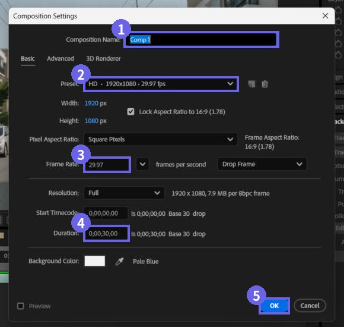
그림 1-1① 이름 ② 크기 프리셋 ③ 프레임레이트 ④ 길이 ⑤ OK.
2
①에 이름을 씁니다. 예: 01_처음움직임
3
③ Frame Rate 칸을 세 번 클릭하고 30을 씁니다.
4
④ Duration 칸을 세 번 클릭하고 500을 씁니다. 5초(0:00:05:00)로 바뀝니다.
5
⑤ OK를 누릅니다.
성공하면가운데에 빈 화면(컴포지션), 아래에 비어 있는 타임라인이 보입니다.
따라 하기 1-2 글자 쓰기
1
위쪽 도구 막대에서 T 모양(문자 도구)을 누릅니다.
2
가운데 화면을 한 번 클릭하고 HELLO를 씁니다.
3
맨 왼쪽 화살표(선택 도구)를 눌러 글쓰기를 끝냅니다.
4
오른쪽 Properties 패널의 글자 크기를 200, 색을 진한 색으로 바꿉니다.
막혔을 때글자가 안 보이면 → 배경과 같은 흰색입니다. Fill 색을 바꾸세요. 단축키가 안 먹으면 → 한/영 키로 영문 상태인지 확인하세요.
따라 하기 1-3 움직임 기록하기(키프레임)
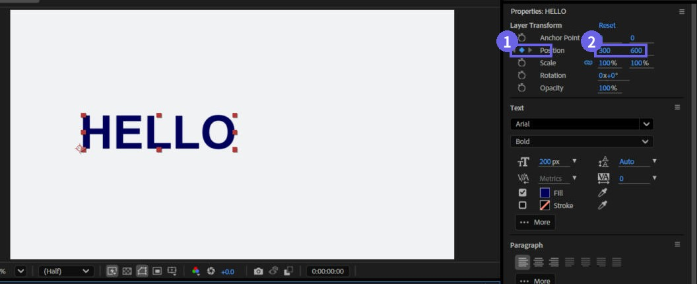
그림 1-2① Position 앞의 스톱워치를 누르면 파란 마름모가 생깁니다 ② 지금 위치 값.
1
글자를 화면 왼쪽으로 끌어다 놓습니다.
2
Properties 패널의 Position 앞 시계 아이콘(스톱워치)을 한 번 누릅니다. 0초에 첫 기록이 생깁니다.
3
타임라인 위 파란 세로선(시간 표시기)을 02:00f까지 끌어갑니다.
4
글자를 오른쪽으로 끌어다 놓습니다. 2초에 두 번째 기록이 자동으로 생깁니다.
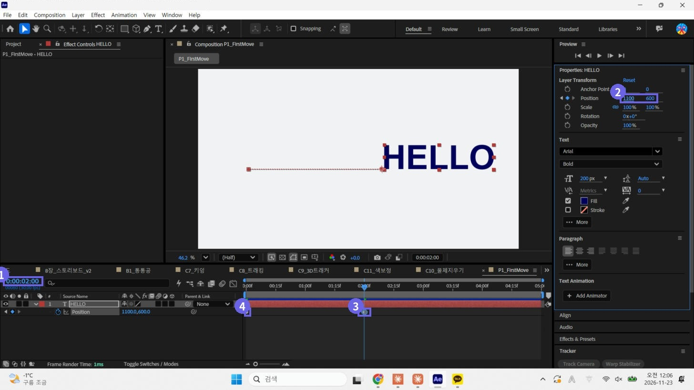
그림 1-3① 지금 시간 2초 ② 바뀐 위치 값 ③ 2초의 새 키프레임 ④ 0초의 첫 키프레임. 화면에는 움직일 길(점선)이 보입니다.
5
Space를 눌러 재생해 봅니다. 글자가 미끄러집니다.
따라 하기 1-4 부드럽게 만들기
1
타임라인의 Position 글자를 한 번 클릭합니다. 두 키프레임이 모두 선택됩니다.
2
F9를 누릅니다. 마름모가 모래시계 모양으로 바뀝니다.
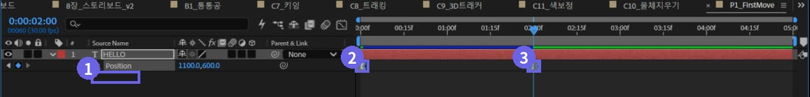
그림 1-4① Position을 클릭해 키 전체 선택 ②③ F9 후 모래시계 모양이 된 키프레임.
성공하면다시 재생했을 때 글자가 천천히 출발해 천천히 멈춥니다.
따라 하기 1-5 영상 파일로 저장하기
1
Ctrl+M을 누릅니다. 아래에 Render Queue(렌더 대기열)가 열립니다.
2
② Output Module이 H.264인지 확인합니다(MP4 파일).
3
③ Output To 옆 파란 글자를 눌러 저장할 폴더와 이름을 정합니다.
4
④ Render를 누릅니다. 막대가 끝까지 차면 완성입니다.
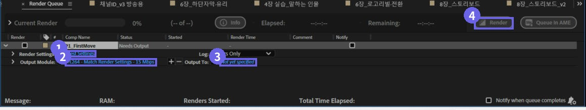
그림 1-5① 렌더 설정 ② 출력 형식(H.264) ③ 저장 위치 ④ Render 버튼.
축하합니다방금 애펙의 전체 흐름 — 판 만들기 → 레이어 → 키프레임 → 출력 — 을 한 번 다 거쳤습니다. 나머지 장은 이 네 단계를 깊게 파는 일입니다.
왜 그럴까
애펙은 “처음과 끝만 정해 주면 사이를 계산하는” 프로그램입니다. 0초에 왼쪽, 2초에 오른쪽이라고 기록(키프레임)하면, 그 사이 58장의 그림은 애펙이 채웁니다. 이것을 보간(Interpolation)이라고 합니다. F9는 그 채우는 방식을 “일정한 속도”에서 “천천히-빠르게-천천히”로 바꾼 것입니다.
도전 과제
같은 5초 안에 글자가 들어왔다가 멈추고, 3초 뒤 위로 사라지게 만들기(키프레임 4개).
Opacity(불투명도)도 함께 기록해 나타나며 미끄러지게 만들기.
CHAPTER 02
화면, 시간, 아이콘 읽기 ●○○
1장에서 써 본 화면을 이제 하나씩 이름 붙여 봅니다. 아이콘 뜻을 알면 처음 보는 기능도 겁나지 않습니다.
왜 그럴까 2-1 네 개의 핵심 패널
그림 2-1애펙 화면 지도. ① 재료를 모으고 ② 판을 보고 ③ 시간 위에 쌓고 ④ 값을 바꿉니다.
패널
하는 일
비유
Project(프로젝트)
불러온 영상·이미지·음악·컴포지션 목록
재료 창고
Composition(컴포지션)
지금 시간의 화면을 보여 주는 모니터
무대
Timeline(타임라인)
레이어를 위아래로 쌓고, 시간에 따라 값을 기록
악보
Properties · Effects & Presets
고른 레이어의 값 바꾸기, 효과 찾기
공구함
막혔을 때패널이 사라지거나 엉키면 → Window(창) → Workspace(작업 영역) → Reset(재설정). 패널 위에서 `(숫자 1 왼쪽 키)를 누르면 그 패널만 크게 볼 수 있고, 다시 누르면 돌아옵니다.
왜 그럴까 2-2 프레임, 프레임레이트, 타임코드
그림 2-2영상은 정지 그림(프레임)의 연속. 타임라인 왼쪽 위 파란 숫자가 타임코드입니다.
타임코드를 클릭해 숫자를 쓰면 그 시간으로 갑니다. PgUp/PgDn은 한 프레임씩, Shift+PgUp/PgDn은 열 프레임씩 움직입니다.
따라 하기 2-3 타임라인 아이콘
그림 2-3타임라인 왼쪽 스위치와 키프레임 관련 아이콘.
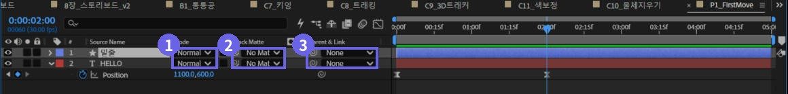
그림 2-4아래 Toggle Switches / Modes를 누르면 칸이 바뀝니다. ① Mode(블렌딩) ② Track Matte ③ Parent & Link.그림 2-5스톱워치(◎)를 켜면 시간 표시기 위치에 키프레임(◆)이 찍힙니다.
왜 그럴까 2-4 프로젝트 패널의 아이콘
아이콘 모양
종류
설명
필름 세 칸 + 작은 그림
Composition
내가 만든 판. 더블클릭하면 타임라인이 열림
필름 한 칸
Footage(영상)
불러온 영상·음악
종이 한 장
Still(이미지)
PNG·JPG·PSD 등
노란 폴더
Folder
정리용. Solids 폴더는 자동으로 생김
이름이 기울어진 글자
Missing
원본을 찾지 못함 — 우클릭 → Replace Footage
왜 그럴까 2-5 레이어의 종류
레이어
만드는 법
쓰임
Footage(소스)
프로젝트에서 끌어다 놓기
영상, 이미지, 음악
Solid(단색)
Ctrl+Y
배경, 효과를 거는 판
Shape(도형)
사각형·원 도구로 그리기
도형, 아이콘, 선
Text(글자)
T 도구로 클릭
자막, 타이틀
Null(빈 손잡이)
Ctrl+Alt+Shift+Y
보이지 않는 조종 손잡이
Adjustment(조정)
Ctrl+Alt+Y
아래 레이어 전체에 효과를 한 번에
Camera · Light
Layer → New
3D 공간 연출
현장의 기준 컴포지션 규격
용도
크기
프레임레이트
유튜브·방송 가로
1920×1080, 4K 3840×2160
29.97 / 30, 영화 느낌 23.976
쇼츠·릴스
1080×1920
30
인스타 피드
1080×1350 (4:5)
30
전광판·파사드
현장 해상도 그대로
30 / 60
촬영 소스와 컴포지션의 프레임레이트가 다르면 움직임이 툭툭 끊깁니다. 소스에 맞추는 것이 원칙입니다. 방송 납품은 29.97fps Drop Frame 타임코드를 쓰는 경우가 많습니다.
한 걸음 더 정리 습관
레이어를 고르고 Enter로 이름 바꾸기. “Shape Layer 7”은 일주일 뒤의 나도 못 알아봅니다. AI에게 “부제 레이어를 0.5초 늦게”처럼 시키려면 이름이 필수입니다.
레이어 왼쪽 색 칸으로 종류별 색 라벨, 끝난 레이어는 자물쇠로 잠그기.
한글 입력 상태 주의U, P, S 같은 한 글자 단축키는 영문 입력 상태에서만 작동합니다. 한글 상태로 누르면 “ㅕ”가 입력되며 애펙이 멈춘 것처럼 보입니다. 이 책을 쓰면서도 실제로 겪었습니다. Esc를 누르고 한/영 키로 바꾸세요.
이 장 점검
성공하면타임코드를 보고 지금이 몇 초 몇 프레임인지 말할 수 있고, 스위치 아이콘 다섯 개(눈·솔로·잠금·3D·모션 블러)의 뜻을 설명할 수 있습니다.
도전 과제
30fps 컴포지션에서 0:00:01:15가 몇 번째 프레임인지 계산하고(45), 24fps로 바꾸면 같은 시간이 몇 프레임인지 적어 보세요.
CHAPTER 03
움직임의 품질 — 키프레임과 그래프 ●●○
1장에서 글자를 미끄러지게 했다면, 이 장에서는 “어떻게” 움직이느냐를 다룹니다. 같은 두 키프레임도 속도의 모양에 따라 가볍게도, 무겁게도 보입니다.
왜 그럴까 3-1 변형 5속성
속성
단축키
뜻
Anchor Point(기준점)
A
돌거나 커질 때의 중심. 문의 경첩 위치
Position(위치)
P
x, y 좌표. 왼쪽 위가 0, 0
Scale(크기)
S
%. 사슬 아이콘으로 가로세로 비율 고정
Rotation(회전)
R
“1x+30°” = 한 바퀴 하고 30도
Opacity(불투명도)
T
0 투명 ~ 100 불투명
U는 키프레임이 있는 속성만, UU는 바뀐 속성만 펼칩니다. 남이 만든 프로젝트를 열면 가장 먼저 누르는 키입니다.
왜 그럴까 3-2 키프레임 사이를 채우는 법
그림 3-1키프레임 사이를 채우는 세 방식. 타임라인에서도 모양으로 구별됩니다: ◆ Linear, 모래시계 Easy Ease, ■ Hold.
따라 하기 3-3 통통 튀는 공
실습
03_통통공(1920×1080, 3초). 공이 떨어져 세 번 튀고 멈춥니다.
1
원 도구로 공을, 사각형 도구로 바닥을 그립니다(아무 레이어도 선택하지 않은 상태에서 그려야 새 레이어가 됩니다).
2
아래 표의 시간마다 시간 표시기를 옮기고 공을 그 위치로 옮깁니다.
시간
Position
Scale
설명
0초
300, 200
100, 100
공중에서 출발
0.5초
620, 880
125, 75
바닥 — 납작하게
0.58초
92, 110
튀며 길쭉하게
0.9초
900, 520
100, 100
첫 꼭대기
1.25초
1140, 880
115, 85
두 번째 바닥
1.5 / 1.7초
1330, 720 / 1480, 880
낮게 한 번 더
2.4초
1640, 880
굴러가다 멈춤
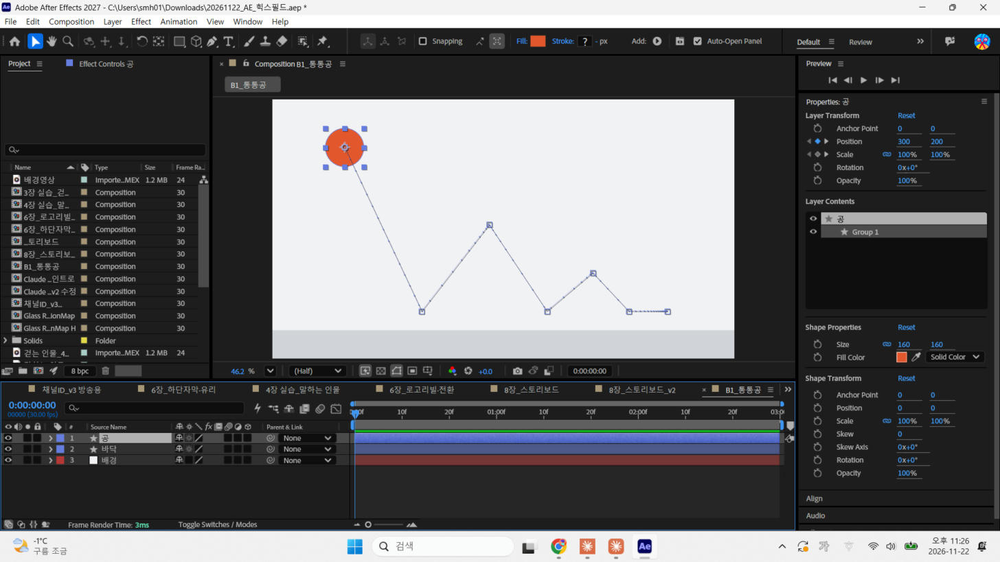
그림 3-2공을 고르면 움직일 길(점선)과 키프레임(네모)이 보입니다.
PROMPT · Claude에게 맡기면03_통통공 컴포지션을 만들고 주황 공이 세 번 튀다 멈추게 해 줘. 바닥에 닿는 순간 가로 125%, 세로 75%로 찌그러졌다가 튀어 오를 때 길쭉해지게. 꼭대기에서는 천천히, 바닥에서는 빠르게.
이 책에서는 위 지시로 Claude가 키프레임 14개를 넣었습니다(0크레딧, 몇 초). 손으로 하면 10~15분 걸리는 작업입니다.
한 걸음 더 3-4 그래프 에디터
1
공 레이어의 Position 글자를 클릭합니다.
2
Shift+F3을 누르면 키프레임이 곡선으로 보입니다.
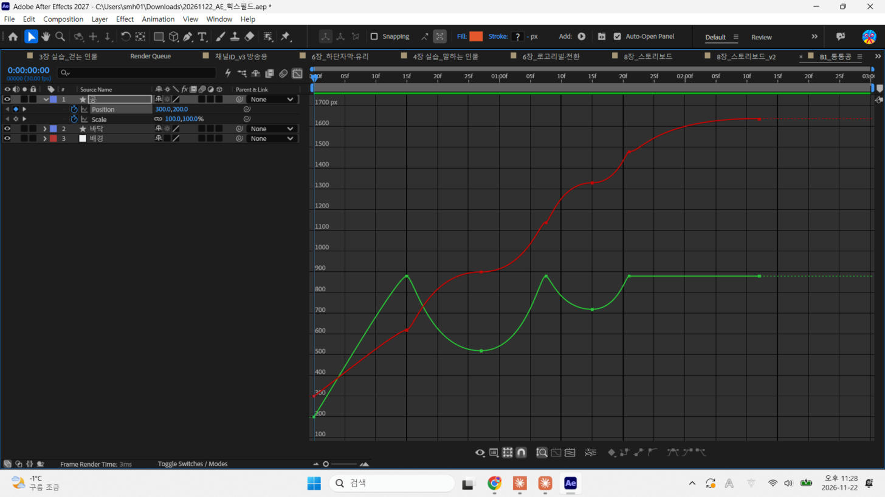
그림 3-3값 그래프. 빨강은 x, 초록은 y. 애펙은 아래로 갈수록 y가 커지므로 초록 봉우리가 바닥에 닿는 순간입니다.
속도 그래프가 산 모양이면 천천히-빠르게-천천히. 대부분의 UI 모션이 이 모양입니다.
공은 바닥에서 가장 빠르고 꼭대기에서 0에 가깝습니다. 그래서 바닥 키는 Influence 10%, 꼭대기는 70%로 줬습니다.
노란 손잡이를 길게 당길수록 감속이 길어집니다.
이징 단축키
느낌
F9
들어가고 나올 때 모두 부드럽게
Shift+F9
도착할 때만 부드럽게
Ctrl+Shift+F9
출발할 때만 부드럽게
Ctrl+Alt+H
Hold — 다음 키까지 멈춤(깜빡임, 컷)
현장의 기준 애니메이션 12원칙에서 꼭 쓰는 다섯
원칙
애펙에서는
스쿼시 앤 스트레치
충돌 순간 Scale을 반대로
예비 동작
튀어 나가기 전 살짝 반대 방향으로
천천히 출발·멈춤
Easy Ease와 그래프 에디터
호(Arc)
움직이는 길을 곡선으로(경로 손잡이 당기기)
후속 동작
멈춘 뒤 넘쳤다 돌아오기 — 익스프레션 inertial bounce
현장에서는 Timing(언제) → Spacing(얼마나 빨리) → Polish(다듬기) 순서로 작업합니다. 처음부터 디테일을 넣지 않습니다.
도전 과제
같은 공을 볼링공(무겁게), 탁구공(가볍게), 화난 공(성격)으로 세 가지 만들기. 키프레임 위치는 같고 그래프만 다르게.
평가: 무게감이 그래프 모양으로 설명되는가, 바닥 충돌 프레임이 정확한가.
이 장 점검
성공하면같은 이동을 Linear와 Easy Ease로 렌더해 비교했을 때 차이가 눈에 보입니다.
막혔을 때그래프가 평평하게만 보이면 Value Graph와 Speed Graph 전환 버튼을 확인하고, 그래프 영역 아래 ‘모든 그래프 맞추기’ 아이콘을 누릅니다.
CHAPTER 04
구조 만들기 — 부모, 프리컴포즈, 마스크, 매트 ●●○
레이어가 많아지면 하나씩 움직이는 대신 묶어서 움직입니다.
왜 그럴까 4-1 레이어 순서와 부모
그림 4-1왼쪽: 위 레이어가 앞. 오른쪽: 부모를 움직이면 자식이 따라갑니다.
따라 하기 4-2 부모 정하기(페어런팅)
1
자식이 될 레이어 줄의 Parent & Link 칸(None)을 누릅니다.
2
목록에서 부모 레이어를 고릅니다. 또는 소용돌이 아이콘을 부모 레이어로 끌어다 놓습니다.
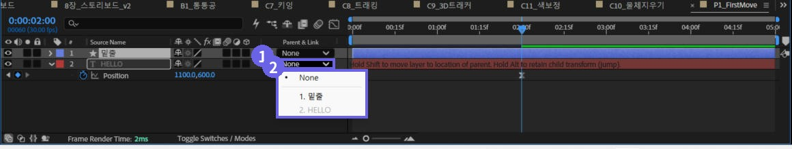
그림 4-2① Parent & Link 칸 ② 부모로 고를 수 있는 레이어 목록.
성공하면부모를 움직이면 자식이 따라갑니다. 자식만 움직이면 부모는 그대로입니다.
따라 하기 4-3 묶기(프리컴포즈)
1
묶을 레이어를 고르고 Ctrl+Shift+C.
2
① 이름을 쓰고 ② Move all attributes를 고른 뒤 ③ OK.
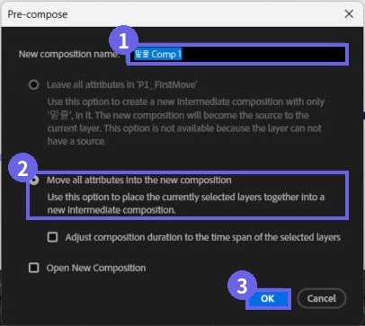
그림 4-3프리컴포즈 창. 여러 레이어를 묶을 때는 Move all attributes만 고를 수 있습니다.
한 걸음 더 두 가지 선택의 차이
선택
뜻
Leave all attributes
레이어 하나만. 효과·변형은 밖에 남음
Move all attributes
효과·변형까지 안으로 들고 감
3D 카메라 트래커(10장)처럼 “기본 변형값”이 필요한 기능은 영상을 Move all attributes로 프리컴포즈해 해결합니다. 이 책을 쓰면서 실제로 겪은 오류입니다.
왜 그럴까 4-4 마스크
레이어를 고른 상태에서 사각형·원·펜 도구로 그리면 그 모양만 보입니다(마스크). M은 마스크 경로, MM은 마스크 전체 속성을 펼칩니다.
속성
쓰임
Mask Feather
가장자리 흐리게 — 비네팅, 부드러운 전환
Mask Expansion
안팎으로 넓히기·좁히기
Mode (Add/Subtract…)
여러 마스크 더하고 빼기
Mask Path 키프레임
모양이 변함 — 글자 드러내기
왜 그럴까 4-5 트랙 매트
그림 4-4매트 레이어(글자)의 모양 안에만 아래 영상이 보입니다.
종류
보이는 곳
예
Alpha Matte
매트 레이어가 있는 곳
글자 모양 안에 영상
Alpha Inverted
매트 레이어가 없는 곳
구멍 뚫기
Luma Matte
매트가 밝은 곳
잉크 번짐 전환
Luma Inverted
매트가 어두운 곳
그림자 영역만
2022년(23.0)부터는 Track Matte 칸에서 아무 레이어나 고를 수 있고, 위아래로 붙어 있지 않아도 됩니다(그림 2장의 Modes 화면 ②).
왜 그럴까 4-6 블렌딩 모드
모드
효과
자주 쓰는 곳
Screen
검은색이 사라지고 밝게
빛 번짐, 불꽃 소스
Multiply
흰색이 사라지고 어둡게
종이 질감, 그림자
Add
밝기를 더해 강하게
네온, 광선
Overlay / Soft Light
대비와 색감 입히기
질감, 색 보정
도전 과제
“SEOUL” 글자 안에만 도시 영상이 보이고, 3초 동안 글자가 120%→100%로 줄어드는 타이틀(트랙 매트 + 부모 + 이징).
심화: 글자 뒤에 Screen 모드 빛 번짐을 넣고, 전체를 프리컴포즈해 Mask Feather로 화면 가장자리를 어둡게.
이 장 점검
막혔을 때매트가 반대로 먹히면 Alpha Matte와 Alpha Inverted Matte를 바꿔 보고, 매트 레이어가 대상 바로 위에 있는지 확인합니다. 26.x부터는 매트 레이어를 위에 둘 필요 없이 드롭다운에서 고를 수 있습니다.
PART 2
모션그래픽
도형과 글자를 움직여 정보를 전달하는 일, 애펙이 가장 많이 쓰이는 분야입니다. 손으로 하는 법을 익히고, 같은 일을 AI에게 시키는 법을 함께 봅니다.
CHAPTER 05
셰이프와 모션그래픽 기법 — 선, 효과, 퍼펫, 파티클 ●●○
셰이프 레이어는 애펙 안에서 그리는 벡터 도형입니다. 아무리 키워도 깨지지 않고, 그 안에 “동작을 만드는 부품”을 쌓을 수 있습니다. 뒤쪽에서는 모션그래픽 현장에서 자주 쓰는 글로우·잔상·퍼펫 핀·파티클·소리 반응까지 이어서 다룹니다.
5-1 셰이프의 구조
셰이프 레이어를 펼치면 Contents 안에 그룹이 있고, 그룹마다 Path(모양) → Stroke(선) → Fill(채우기) → Transform 순서로 쌓입니다. 오른쪽 Add 버튼으로 부품을 더합니다. 부품은 위에서 아래로 계산되므로 순서가 결과를 바꿉니다.
5-2 자주 쓰는 부품(Path Operations)
부품
하는 일
예
Trim Paths
선의 시작·끝을 잘라 “그려지는” 효과
서명 쓰기, 체크 표시, 지도 경로
Repeater
도형을 여러 개 복제하며 회전·이동
꽃잎, 로딩 아이콘, 패턴
Offset Paths
윤곽을 안팎으로 넓히고 좁힘
숨 쉬는 아이콘
Round Corners
모서리를 둥글게
버튼, 카드
Wiggle Paths
윤곽을 흔들어 손그림 느낌
낙서 스타일
Zig Zag · Pucker & Bloat · Twist
지그재그, 오므리고 부풀리기, 비틀기
추상 배경
Merge Paths
여러 모양을 더하고 빼기
아이콘 조합
5-3 실습 — 그려지는 체크 표시
1
아무것도 선택하지 않고 펜 도구(G)로 V자 선을 그립니다. Fill은 끄고 Stroke 12px, 끝 모양 Round.
원 셰이프를 아래에 두고 Scale 0 → 110 → 100%로 튀게 하면 “완료” 아이콘이 됩니다.
PROMPT · Claude에게흰 배경 가운데 회색 원이 튀어나오고, 그 위에 진한 회색 체크 표시가 0.6초 동안 그려지는 1.5초짜리 완료 아이콘을 만들어 줘. 선 두께 12, 끝은 둥글게.
5-4 Illustrator 파일 가져오기
일러스트레이터(.ai) 파일을 불러와 레이어를 고르고 Layer → Create → Create Shapes from Vector Layer를 누르면 셰이프 레이어로 바뀝니다. 로고를 선 하나하나 움직일 때 씁니다. 파일을 레이어별로 불러오려면 가져올 때 Composition - Retain Layer Sizes를 고릅니다.
도전 과제
Trim Paths와 Repeater만으로 3초짜리 로딩 아이콘 세 가지 만들기.
평가: 루프 이음새가 보이지 않는가(loopOut 활용).
현장의 기준 5-5 모션그래픽 노하우 — 잔상, 글로우, 패스
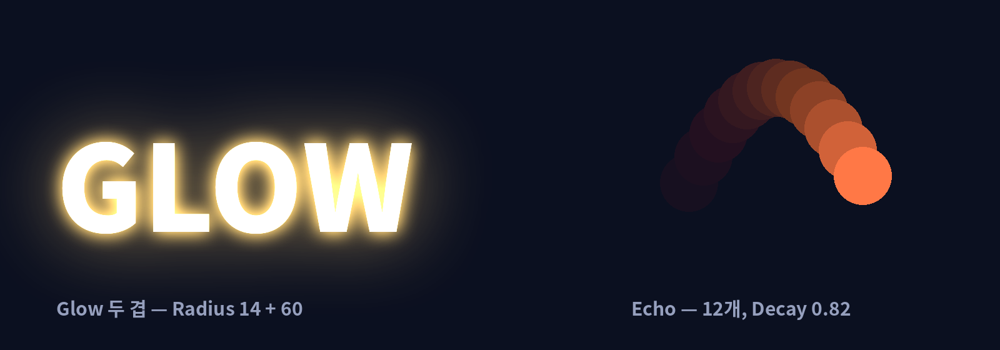
그림 5-1왼쪽은 Glow를 두 겹 넣은 글자(가장자리 Radius 14, 번짐 Radius 60), 오른쪽은 움직이는 원에 Echo(12개, Decay 0.82)를 넣은 잔상입니다. 어두운 배경에서 빛 효과가 살아납니다.
고정할 곳과 움직일 곳에 핀을 찍습니다. 이 책의 샘플은 세로 막대의 위·가운데·아래에 세 개를 찍었습니다. 도구 막대에서 Mesh: Show를 켜면 그물(메시)이 보입니다.
3
선택 도구(V)로 맨 위 핀만 옆으로 끕니다. 나머지 두 핀이 버텨 주어 막대가 부드럽게 휩니다. 핀 위치에는 키프레임이 자동으로 찍히므로, 시간을 옮겨 가며 끌면 그대로 애니메이션이 됩니다.
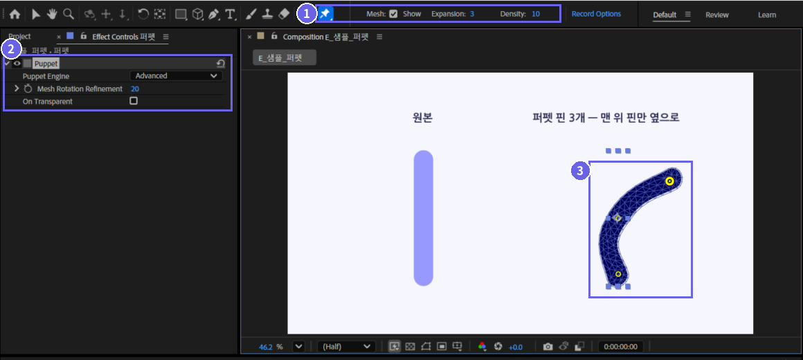
그림 5-2① 퍼펫 핀 도구와 Mesh 옵션(Show, Expansion 3, Density 10) ② Effect Controls에 생긴 Puppet 효과 ③ 핀 세 개(노란 점)와 메시. 왼쪽이 원본, 오른쪽이 맨 위 핀만 옮긴 결과입니다. 컴포지션 05-2_퍼펫핀.
항목
이 책의 값
하는 일
Expansion
3
메시가 그림 바깥으로 넓어지는 정도. 구부릴 때 가장자리가 잘리면 올립니다
Density
10
메시 삼각형의 수. 높을수록 부드럽게 휘지만 느려집니다
Puppet Engine
Advanced
기본 엔진. 핀 주변이 덜 찌그러집니다
Mesh Rotation Refinement
20
구부러진 곳의 메시가 매끄럽게 따라 도는 정도. 기본값 그대로 둡니다
핀의 종류Position(위치), Starch(뻣뻣하게 굳힘), Bend(제자리에서 회전·크기), Advanced(위치·회전·크기 모두), Overlap(겹칠 때 앞뒤)이 있습니다. 처음에는 Position 핀만으로 충분합니다. 바람에 흔들리는 느낌은 핀 위치에 wiggle(1, 15)를 넣으면 됩니다(7-3).
따라 하기 5-7 파티클 — 입자, 불꽃, 연기, 깨짐
파티클(particle)은 ‘입자’라는 뜻입니다. 눈송이, 불꽃, 먼지, 연기, 깨진 유리 조각처럼 작은 조각 수백~수천 개를 하나하나 키프레임하지 않고, 규칙만 정해 한꺼번에 움직이는 방법입니다. 규칙은 네 가지로 정리됩니다. 어디서 태어나는가(Producer·발생기), 얼마나 많이 얼마나 오래 사는가(Birth Rate·Longevity), 어떤 힘을 받는가(Velocity·Gravity·Resistance), 어떻게 생겼는가(Particle Type·크기·색).
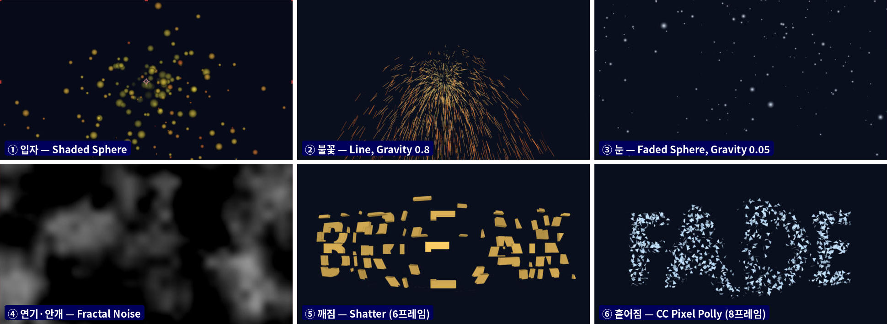
그림 5-3애펙 기본 효과만으로 만든 여섯 가지 파티클 표현. 컴포지션 05-4~05-8_파티클_…. ③에서 Particle Type을 Line으로 두면 비가 됩니다.
표현
쓰는 효과
출발 수치와 요령
① 입자·반짝이
Simulation → CC Particle World
Particle Type Faded Sphere, Birth Size 0.1, Death Size 0.02. 블렌딩 Add + Glow 한 겹
Producer Position Y −0.45, Radius X 1.2, Y 0.02로 화면 위쪽 전체에서 떨어지게. Faded Sphere, Birth Size 0.12, Size Variation 80%, Velocity 0.05, Gravity 0.05, Birth Rate 1.5. 크기가 다른 레이어 두 장을 겹치면 깊이가 생깁니다
④ 연기·안개
CC Particle World + Fast Box Blur, 또는 Noise & Grain → Fractal Noise
화면 전체 안개는 Fractal Noise(Contrast 140, Brightness −55, Scale 320, Evolution에 time*60)를 Screen 모드로. 피어오르는 연기는 파티클을 Faded Sphere, Birth Size 1.5, Gravity −0.1(위로)로 두고 블러 40
⑤ 깨짐
Simulation → Shatter
View를 Rendered로 바꾸고 Force 1의 Position을 깨질 곳에 둡니다(기본 Bricks 무늬, 6프레임 지점). Shape → Pattern을 Glass로 바꾸면 유리처럼 깨집니다. 깨지기 전 장면은 레이어를 잘라 앞에 둡니다
⑥ 글자 흩어짐
Simulation → CC Pixel Polly, CC Ball Action, 또는 Dissolve 계열
CC Pixel Polly: Force 80, Gravity 0.5, Grid Spacing 6. 0초부터 깨지므로 레이어 시작을 흩어질 순간에 맞춥니다. Force Center를 옮기면 흩어지는 중심이 바뀝니다
아래 실습은 ① 입자를 CC Particle World로 직접 만들어 보는 순서입니다.
1
컴포지션 크기의 솔리드(Ctrl+Y)를 만들고 Effect → Simulation → CC Particle World를 넣습니다. 재생하면 가운데에서 선이 분수처럼 솟습니다. 이것이 기본값입니다(Birth Rate 2.0, Longevity 1.00).
2
Effect Controls에서 아래 표의 수치로 바꿉니다. 솟구치던 선이 천천히 떠다니는 빛 알갱이로 바뀝니다.
3
배경 영상 위에 얹을 때는 레이어의 블렌딩 모드를 Add나 Screen으로 바꿉니다. 검은 바탕은 사라지고 빛만 남습니다(4-6).
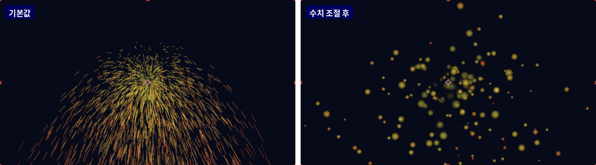
그림 5-4같은 효과의 기본값(왼쪽)과 수치를 바꾼 뒤(오른쪽, 2초 지점). 컴포지션 05-3_파티클_입자.
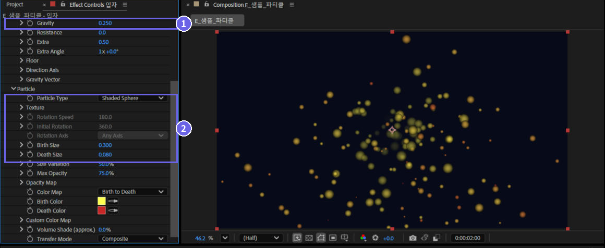
그림 5-5Effect Controls의 CC Particle World. ① Physics의 Gravity ② Particle의 모양과 크기. 숫자를 하나씩 바꿔 보며 화면이 어떻게 달라지는지 확인합니다.
항목
이 책의 값
하는 일
Birth Rate
1.5
한꺼번에 태어나는 양. 눈·먼지는 낮게, 폭죽은 높게
Longevity (sec)
2
알갱이 하나가 살아 있는 시간
Physics → Velocity
1.1
튀어나가는 속도
Physics → Gravity
0.25
아래로 당기는 힘. 0이면 무중력, 음수면 위로 떠오릅니다
Particle → Particle Type
Shaded Sphere
알갱이 모양. Line은 불꽃, Faded Sphere는 연기·빛망울에 어울립니다
Particle → Birth Size / Death Size
0.3 / 0.08
태어날 때와 사라질 때의 크기. 작아지며 사라지게 했습니다
Particle → Birth Color / Death Color
노랑 / 빨강
수명에 따라 바뀌는 색(Color Map: Birth to Death)
더 필요해지면CC Particle World는 알갱이가 서로 부딪히거나 글자 모양으로 모이는 일은 못 합니다. 그런 장면은 Trapcode Particular나 Stardust 같은 플러그인(부록 C)을 쓰거나, 힉스필드에서 불꽃·연기 소스를 검은 배경으로 생성해 Add 모드로 얹는 편이 빠릅니다.
따라 하기 5-8 소리에 반응하는 그래픽
음악 크기에 맞춰 막대가 뛰거나 로고가 쿵쿵 커지는 효과는, 소리를 숫자로 바꾸는 한 단계만 알면 만들 수 있습니다.
1
오디오 레이어를 고르고 Animation → Keyframe Assistant → Convert Audio to Keyframes를 누릅니다.
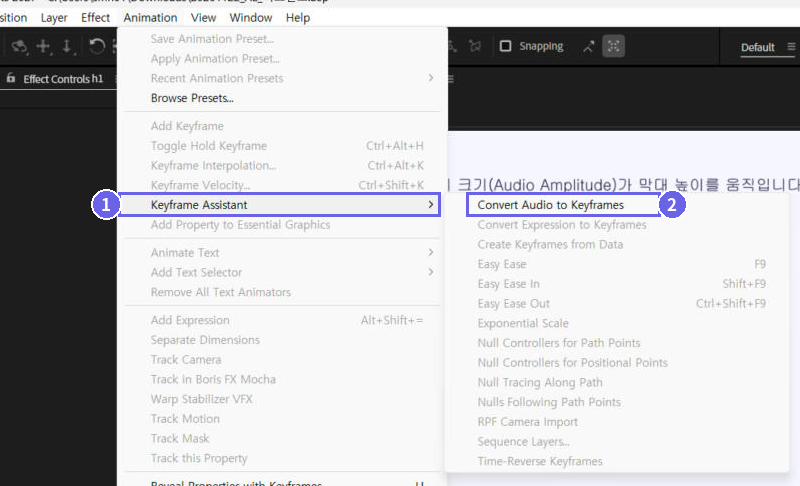
그림 5-6① Animation 메뉴의 Keyframe Assistant ② Convert Audio to Keyframes.
2
맨 위에 Audio Amplitude라는 널 레이어가 생깁니다. Effect Controls에 Left Channel, Right Channel, Both Channels 슬라이더가 있고, 프레임마다 소리 크기가 키프레임으로 찍혀 있습니다.
3
움직일 속성에 익스프레션을 넣어 Both Channels의 Slider 값을 읽어 옵니다. linear()로 소리 크기 범위(0~85)를 막대 높이(8~100%)로 바꿉니다(7-6).
EXPRESSION · 소리 크기로 막대 높이 바꾸기 (Scale)d = (index - 3) * 0.03; // 막대마다 0.03초씩 늦게 반응 a = thisComp.layer("Audio Amplitude").effect("Both Channels")("Slider").valueAtTime(time - d); [100, linear(a, 0, 85, 8, 100)];
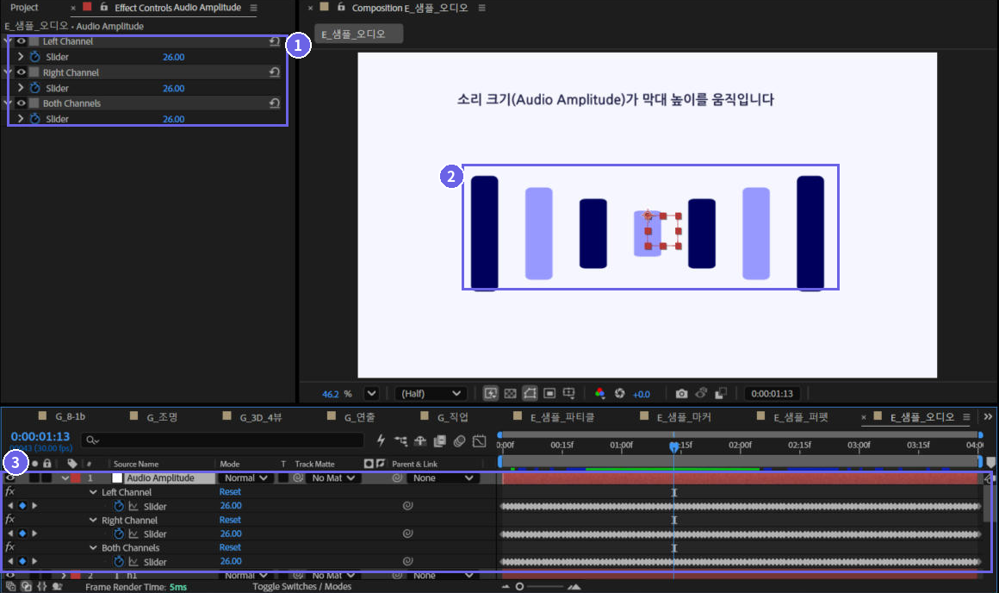
그림 5-7① 자동으로 생긴 Audio Amplitude 레이어의 세 슬라이더 ② 소리 크기를 따라 높이가 바뀌는 막대 일곱 개 ③ 프레임마다 찍힌 키프레임. 1초 13프레임의 값은 26입니다. 컴포지션 05-9_소리반응.
범위 맞추기소리 크기의 최댓값은 곡마다 다릅니다. Audio Amplitude 레이어에서 U를 누르고 그래프 에디터로 가장 높은 값을 확인한 뒤, linear()의 둘째·셋째 숫자를 그 범위에 맞춥니다. 저음에만 반응시키려면 오디오를 복제해 Effect → Audio → High-Low Pass로 저음만 남기고 프리컴포즈한 다음 변환합니다.
이 장 점검
성공하면Trim Paths로 체크 표시가 0.6초 안에 그려지고, Glow와 Echo를 켜고 끌 수 있습니다. 퍼펫 핀으로 막대가 휘고, 소리 크기에 맞춰 막대가 움직입니다.
막혔을 때Add 메뉴가 회색이면 셰이프 레이어가 아니라 마스크를 그린 것입니다. 레이어 선택을 해제(Ctrl+Shift+A)한 뒤 다시 그립니다.
CHAPTER 06
텍스트 애니메이션과 타이포그래피 ●●○
글자는 모션그래픽의 절반입니다. 애펙은 글자를 한 자씩, 한 단어씩, 한 줄씩 따로 움직일 수 있습니다.
6-1 글자 설정 — Character, Paragraph 패널
글꼴, 크기, 자간(Tracking), 행간(Leading), 기준선 이동을 정합니다. 한글 제목은 자간을 -20~-40 정도 좁히면 단단해 보이고, 영문 대문자 라벨은 +100~+200으로 넓히면 고급스러워 보입니다. Adobe Fonts에서 쓰는 글꼴은 상업적 이용이 가능하지만, 다른 글꼴은 라이선스를 확인합니다.
6-2 텍스트 애니메이터의 원리
텍스트 레이어의 Animate 버튼으로 속성(위치, 크기, 불투명도, 흐림 등)을 더하면 “애니메이터”가 생깁니다. 애니메이터는 두 부분으로 되어 있습니다.
속성: 글자를 얼마나 바꿀지. 예: Opacity 0%, Position 0, 40
Range Selector(범위 선택기): 어느 글자에 적용할지. Start·End·Offset 값을 움직이면 바뀌는 범위가 글자를 따라 흘러갑니다.
Advanced 옵션
의미
Based On
글자 / 공백 제외 글자 / 단어 / 줄 단위
Shape
사각, 경사, 삼각 등 — 바뀌는 범위의 경계 모양
Ease High / Low
범위 경계의 부드러움
Randomize Order
순서를 섞어 무작위로 등장
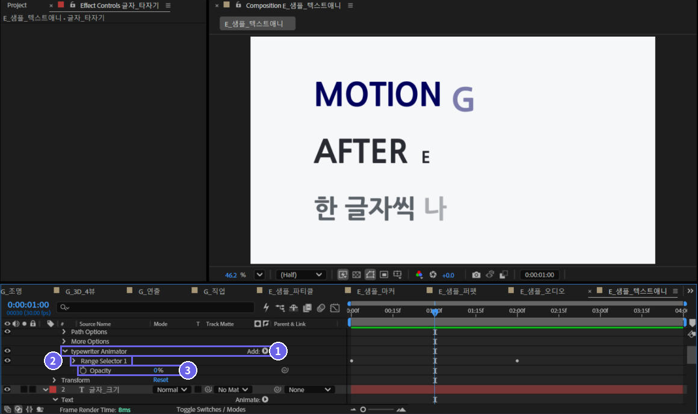
그림 6-1세 줄에 서로 다른 애니메이터를 넣은 1초 지점. 위에서부터 미끄러져 들어오기(Position), 커지며 나타나기(Scale), 타자기(Opacity). ① Add ▸ 버튼으로 속성과 선택기를 더합니다 ② Range Selector의 키프레임 두 개가 범위를 움직입니다 ③ 이 애니메이터가 바꾸는 속성 Opacity 0%. 컴포지션 06_텍스트애니메이터.
Range Selector 대신 Wiggly Selector를 더하면 글자가 저마다 흔들리고, Expression Selector를 쓰면 익스프레션으로 글자마다 다른 값을 줄 수 있습니다(7장).
브리지의 한계이 책 21장에서 본 것처럼, 지금의 Claude 브리지는 Range Selector의 키프레임을 옮기지 못했습니다. 애니메이터의 뼈대는 AI에게 맡기고 속도 조정은 손으로 하는 것이 현실적인 분업입니다.
6-3 프리셋으로 빠르게
Effects & Presets → Animation Presets → Text에 수백 개의 글자 애니메이션이 있습니다. 레이어를 고르고 시간 표시기를 등장 시점에 둔 뒤 더블클릭하면 적용됩니다. Browse Presets로 미리 볼 수 있습니다.
6-4 키네틱 타이포그래피
말소리에 맞춰 글자가 튀고 커지는 영상입니다. 오디오 레이어를 펼쳐 파형(LL)을 보면서 단어가 시작되는 지점에 마커(숫자패드 *)를 찍고, 마커에 맞춰 단어 레이어를 배치합니다. 마커 위치를 익스프레션으로 읽어 자동으로 튀게 만들 수도 있습니다(7-9).
1
오디오를 타임라인에 올리고 LL로 파형을 펼칩니다. 재생하면서 단어가 시작되는 순간마다 숫자패드 *를 눌러 마커를 찍습니다.
2
단어마다 텍스트 레이어를 만들고, 레이어의 시작점을 마커에 맞춥니다(시간 표시기를 마커에 두고 [).
3
등장은 0.2초 안에 끝냅니다. Scale 0 → 110 → 100%로 튀게 하거나, 텍스트 애니메이터의 Position과 Opacity로 한 글자씩 올립니다. 강조할 단어만 크기와 색을 달리합니다.
4
화면에 남는 단어는 서너 개로 줄입니다. 지나간 단어는 위로 밀어 올리거나 흐리게 해서 지금 들리는 단어에 눈이 가게 합니다.
소리와 맞추기글자가 말보다 먼저 나오면 어색합니다. 마커보다 2~3프레임 늦게 등장시키면 소리와 맞아 보입니다. 박자가 분명한 음악이라면 5-8절의 방법으로 소리 크기에 크기를 연결해도 됩니다.
6-5 자막 — Captions
프리미어의 자동 받아쓰기(Speech to Text)로 만든 자막 파일(.srt)을 애펙으로 가져오거나, 애펙 텍스트 레이어로 자막 스타일을 디자인해 MOGRT(14장)로 내보내 프리미어에서 내용만 바꿔 씁니다.
이 장 점검
성공하면글자가 한 자씩 순서대로 나타나고, Range Selector의 Start/End 값만 바꿔 속도를 조절할 수 있습니다.
막혔을 때애니메이터를 넣었는데 변화가 없으면 Range Selector의 Start·End가 둘 다 0이거나 100인지 확인합니다. 한글이 깨지면 글꼴을 나눔고딕처럼 한글이 들어 있는 것으로 바꿉니다.
도전 과제
같은 문장을 ‘타자기’, ‘아래에서 튀어오름’, ‘흐림에서 선명’ 세 가지로 만들고, 어느 것이 뉴스·광고·다큐에 맞는지 이유를 적어 보세요.
도전 과제 심화
30초 인터뷰 음성에 맞춘 키네틱 타이포그래피. 단어 시작마다 마커를 찍고 강세 단어는 크기·색으로 강조.
심화: Expression Selector로 글자마다 다른 지연 주기.
CHAPTER 07
익스프레션 완전 정리 ●●●
익스프레션은 속성에 붙이는 짧은 자바스크립트입니다. 키프레임을 수십 개 찍는 대신 “규칙”을 한 줄 적어 두면 애펙이 매 프레임 계산합니다. 이 장은 실무에서 쓰는 익스프레션을 거의 모두 모았습니다. 깃허브 저장소의 expressions/ 폴더에 같은 코드가 파일로 들어 있습니다.
처음이라면이 장은 건너뛰고 나중에 돌아와도 됩니다. 앞 장만으로도 영상을 만들 수 있습니다.
7-1 익스프레션 넣고 빼기
1
속성 이름 왼쪽 스톱워치를 Alt+클릭하면 입력창이 열립니다. 코드를 붙이고 바깥을 클릭합니다.
2
값이 빨간색으로 바뀌면 익스프레션이 적용된 것입니다. 오류가 나면 컴포지션 아래 주황 띠에 이유가 뜹니다.
3
끄려면 = 모양 스위치를 누르고, 지우려면 다시 Alt+클릭합니다. EE는 익스프레션이 걸린 속성만 펼칩니다.
소용돌이(Pick Whip)입력창 옆 소용돌이 아이콘을 다른 속성으로 끌면 연결 코드가 자동으로 써집니다. 코드를 몰라도 “이 값을 저 값에 연결”은 할 수 있습니다.
그림 7-1익스프레션을 그래프로 보면: 가로축은 시간, 세로축은 값. 같은 한 줄 코드가 만드는 움직임의 모양입니다.
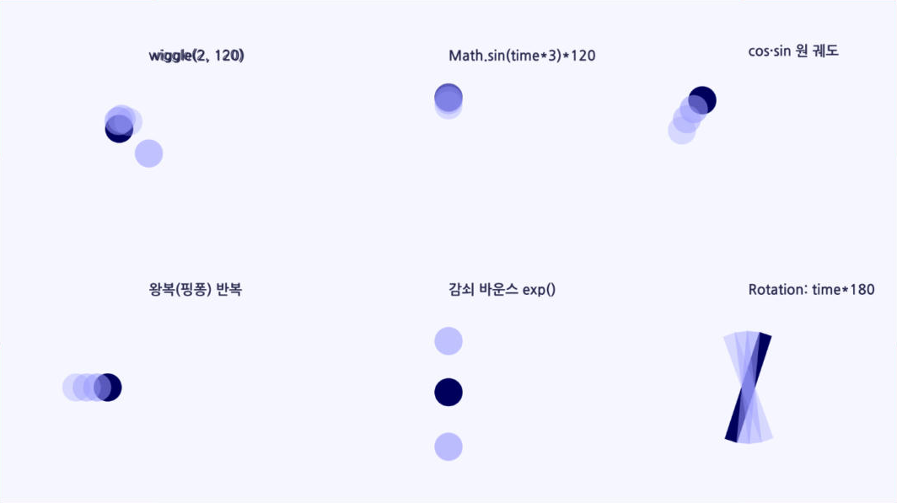
그림 7-2실제 애펙 화면(1초 18프레임). 진한 원이 지금 위치, 연한 원은 0.07초씩 이전 위치입니다. 잔상은 thisComp.layer("M1").transform.position.valueAtTime(time-0.07) 한 줄로 만들었습니다. 컴포지션 07-1_익스프레션_움직임이 깃허브 프로젝트 파일에 있습니다.
샘플
코드
숫자를 바꾸면
흔들림
wiggle(2,120)
2 = 1초에 2번, 120 = 최대 120px. 손떨림은 (1,8), 고장 난 화면은 (15,40)
둥실
value+[0,Math.sin(time*3)*120]
3을 키우면 빨라지고, 120을 줄이면 진폭이 작아짐. 떠 있는 로고는 (time*2)*6
EXPRESSION · 다른 레이어 거리로 크기 바꾸기 (Scale)d = length(thisComp.layer("커서").position, position); s = linear(d, 0, 400, 150, 100); // 가까우면 150%, 멀면 100% [s, s];
EXPRESSION · 범위 제한clamp(value, 0, 100);
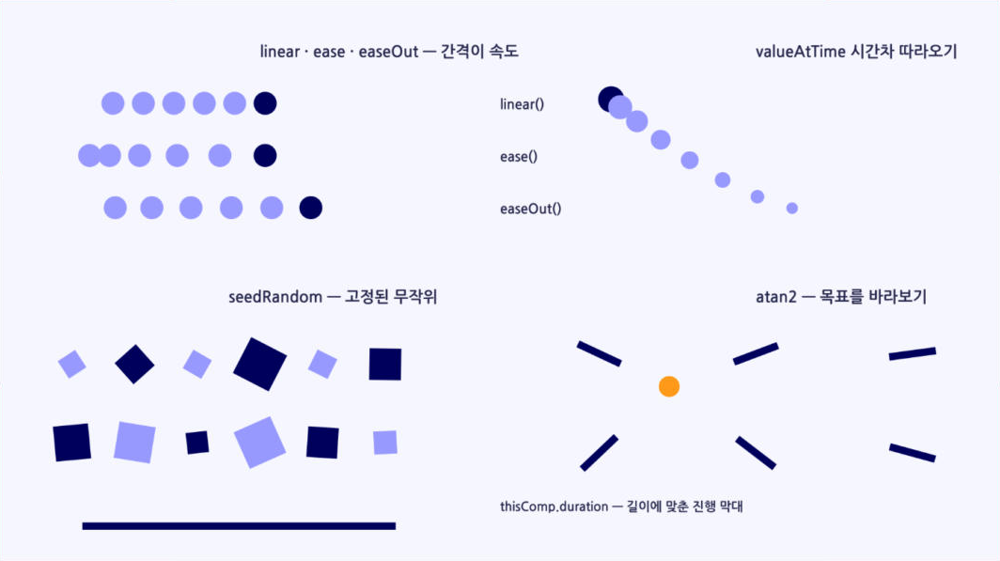
그림 7-3실제 애펙 화면(07-2_익스프레션_값, 1초 15프레임). 왼쪽 위: 같은 3초 이동이라도 linear는 간격이 같고, ease는 양 끝이 촘촘하며, easeOut은 끝만 촘촘합니다. 오른쪽 위: valueAtTime 시간차 꼬리. 왼쪽 아래: seedRandom으로 고정한 회전·크기. 오른쪽 아래: atan2로 주황 점을 바라보는 막대. 맨 아래: thisComp.duration에 맞춰 차오르는 진행 막대.
7-7 튕기고 멈추기 — 관성 바운스(inertial bounce)
키프레임으로 멈춘 뒤 살짝 넘쳤다 돌아오는 “후속 동작”입니다. 위치·크기·회전 어디에나 붙입니다.
EXPRESSION · inertial bounceamp = .06; freq = 3.0; decay = 6.0; n = 0; if (numKeys > 0){ n = nearestKey(time).index; if (key(n).time > time) n--; } if (n == 0) { t = 0; } else { t = time - key(n).time; } if (n > 0 && t < 1){ v = velocityAtTime(key(n).time - thisComp.frameDuration/10); value + v*amp*Math.sin(freq*t*2*Math.PI)/Math.exp(decay*t); } else { value; }
EXPRESSION · 바닥에 튕기는 공 (Position, 키 2개: 떨어지기 시작·바닥)e = .7; g = 5000; nMax = 9; n = 0; if (numKeys > 0){ n = nearestKey(time).index; if (key(n).time > time) n--; } if (n > 0){ t = time - key(n).time; v = -velocityAtTime(key(n).time - .001)*e; vl = length(v); vu = (vl > 0) ? normalize(v) : [0,0]; tCur = 0; segDur = 2*vl/g; tNext = segDur; nb = 1; while (tNext < t && nb <= nMax){ vl *= e; segDur *= e; tCur = tNext; tNext += segDur; nb++; } if (nb <= nMax){ delta = t - tCur; value + vu*delta*(vl - g*delta/2); } else { value; } } else value;
7-8 따라오기와 시간차 — valueAtTime, index
EXPRESSION · 위 레이어를 0.1초 늦게 따라가기 (Position)delay = 0.1; thisComp.layer(index - 1).position.valueAtTime(time - delay);
EXPRESSION · 레이어 번호만큼 늦게 시작 (복제할수록 순차 등장)delay = 0.08 * (index - 1); valueAtTime(time - delay);
EXPRESSION · 부드럽게 따라가기smooth(0.3, 5); // 0.3초 폭, 5개 샘플로 값 평균
7-9 마커로 움직이기
EXPRESSION · 마커마다 튀기 (Scale)m = thisLayer.marker; n = 0; if (m.numKeys > 0){ n = m.nearestKey(time).index; if (m.key(n).time > time) n--; } if (n > 0){ t = time - m.key(n).time; s = 100 + 30*Math.exp(-8*t)*Math.cos(20*t); [s, s]; } else value;
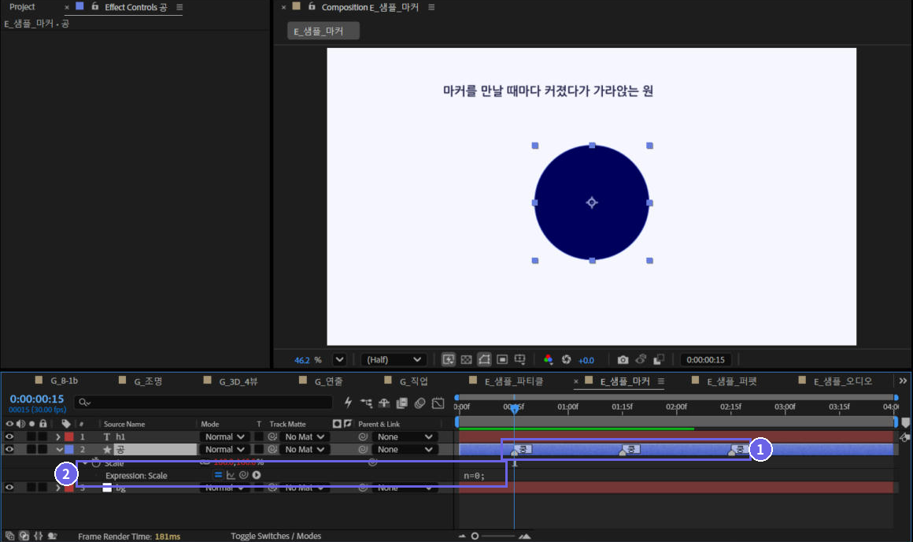
그림 7-4① 레이어에 찍은 마커 세 개(숫자패드 *) ② Scale의 익스프레션. 시간 표시기가 마커를 지날 때마다 원이 커졌다가 가라앉습니다. 샘플은 진폭 60, 감쇠 6으로 더 크게 튀게 했습니다. 컴포지션 07-4_익스프레션_마커.
EXPRESSION · 오디오 크기로 반응 (Scale) — 5-8절에서 단계별로// 오디오 레이어 우클릭 → Keyframe Assistant → Convert Audio to Keyframes 먼저 a = thisComp.layer("Audio Amplitude").effect("Both Channels")("Slider"); s = linear(a, 0, 20, 100, 140); [s, s];
7-10 무작위 — random, seedRandom
EXPRESSION · 레이어마다 다른, 고정된 무작위 위치seedRandom(index, true); // true = 시간이 지나도 고정 [random(0, thisComp.width), random(0, thisComp.height)];
EXPRESSION · 프레임 번호 표시 (Source Text)timeToFrames(time);
7-15 경로 만들기 — createPath
EXPRESSION · 두 널 사이를 잇는 선 (Path)a = fromComp(thisComp.layer("점A").toComp([0,0])); b = fromComp(thisComp.layer("점B").toComp([0,0])); createPath([a, b], [], [], false);
그림 7-6createPath는 점의 좌표 목록으로 패스를 만듭니다. 널 두 개의 위치를 점으로 넘기면, 널을 옮길 때마다 선이 다시 그려집니다. 접선(tangent) 두 칸을 비우면 직선입니다.
7-16 표현식 컨트롤 — 리그 만들기
Effect → Expression Controls의 Slider, Angle, Checkbox, Color, Point, Layer 컨트롤을 널에 모아 두고 여러 레이어가 그 값을 참조하게 하면, 한 곳에서 전체를 조종하는 “리그”가 됩니다. MOGRT(14장)로 내보낼 때도 이 컨트롤이 프리미어의 조절 손잡이가 됩니다.
EXPRESSION · 컬러 컨트롤로 브랜드 색 통일 (Fill Color)thisComp.layer("컨트롤").effect("브랜드색")("Color");
7-17 오류가 날 때
메시지 예
원인과 해결
Expected: ;
괄호·따옴표가 짝이 맞지 않음
Layer named ‘…’ is missing
레이어 이름이 바뀜. 이름을 맞추거나 index로 부르기
Property or method named ‘…’
영문판·한글판 효과 이름 차이. 효과는 Pick Whip으로 다시 연결
Expression result must be of dimension 2
위치·크기에 숫자 하나를 줌. [x, y]로
ranges.filter is undefined 같은 오류
Legacy ExtendScript 엔진. File → Project Settings → Expressions에서 JavaScript 엔진 선택
AI에게 맡기기“이 오류 고쳐 줘”와 함께 코드를 붙이면 Claude나 애펙 AI Assistant가 대부분 바로 고칩니다. 다만 결과를 이해하고 쓰는 것이 중요합니다 — 이 장의 표를 읽을 수 있으면 AI가 준 코드도 읽을 수 있습니다.
이 장 점검
성공하면그림 7-2처럼 원 하나와 잔상 세 개가 한 줄 코드로 따라 움직입니다.
막혔을 때주황 오류 띠가 뜨면 따옴표 안 레이어 이름이 정확한지(띄어쓰기 포함), 영문 엔진(JavaScript)이 Project Settings → Expressions에 선택되어 있는지 확인합니다. 해결 뒤에는 띠 오른쪽 X로 닫습니다.
도전 과제
Slider Control 하나로 wiggle의 빈도와 세기를 조절하는 리그를 만들고, 같은 리그를 다른 레이어 다섯 개에 Pick Whip으로 연결해 보세요.
도전 과제 심화
널 하나에 Slider·Color·Checkbox 컨트롤을 모은 “하단 자막 리그” 만들기. 이름 길이에 따라 상자 자동 조절(sourceRectAtTime), 색 일괄 변경, 등장 애니메이션 on/off.
MOGRT로 내보내 프리미어에서 동작 확인.
PART 3
합성과 VFX
찍은 영상과 만든 그림을 한 화면처럼 보이게 하는 기술입니다. 영화의 특수효과가 여기서 출발합니다. 이 부의 실습 소스는 모두 힉스필드로 만들었고, 깃허브 저장소의 sources/에 목록과 프롬프트가 있습니다.
CHAPTER 08
크로마키 — 그린스크린과 블루스크린 ●●○
배우를 초록이나 파란 천 앞에서 찍고, 그 색만 지워 다른 배경과 합치는 기술입니다. 지우는 일은 애펙의 Keylight가 하지만, 결과의 80%는 촬영장에서 결정됩니다.
8-1 왜 하필 초록일까
크로마키는 “사람에게 거의 없는 색”을 골라 그 색만 지우는 방식입니다. 사람 피부는 인종과 관계없이 붉은 기와 노란 기가 섞여 있어서, 그 반대편인 초록과 파랑이 가장 잘 분리됩니다. 그중 초록이 요즘 표준이 된 이유는 세 가지입니다.
이유
설명
디지털 센서가 초록에 강함
대부분의 카메라 센서(베이어 배열)는 픽셀 4개 중 2개가 초록을 받습니다. 초록 정보가 가장 많고 노이즈가 적어 경계가 깨끗하게 빠집니다.
밝아서 조명이 덜 듦
같은 조명이면 초록이 파랑보다 밝게 찍힙니다. 넓은 스크린을 고르게 밝히기 쉽습니다.
옷과 겹치는 일이 적음
청바지·정장처럼 파란 옷은 흔하지만 형광 초록 옷은 드뭅니다.
8-2 그래도 블루스크린을 쓰는 때
상황
이유
필름 촬영 시대
필름은 파란 감광층의 입자가 고와서 1970~90년대 영화는 대부분 블루스크린을 썼습니다. 1978년 영화 〈슈퍼맨〉의 비행 장면이 대표적입니다.
밤 장면·어두운 배경과 합성
초록은 밝아서 배우 가장자리에 초록 빛이 번지는 스필(spill)이 강합니다. 파랑은 번짐이 덜 눈에 띄고 어두운 배경과 잘 어울립니다.
금발·밝은 머리카락, 초록 소품
초록 반사가 머리카락에 묻어 티가 나거나, 초록 옷·식물이 함께 지워질 때.
물·바다 장면
〈라이프 오브 파이〉처럼 큰 물탱크 촬영에서 하늘·수평선을 파란 배경으로 처리하는 경우.
규칙은 하나배우와 소품에 없는 색을 고릅니다. 초록 옷을 입은 배우라면 블루, 파란 유니폼이면 그린. 드물게 빨강·마젠타 배경을 쓰기도 합니다.
8-3 잘 빠지는 촬영 — 조명 세팅
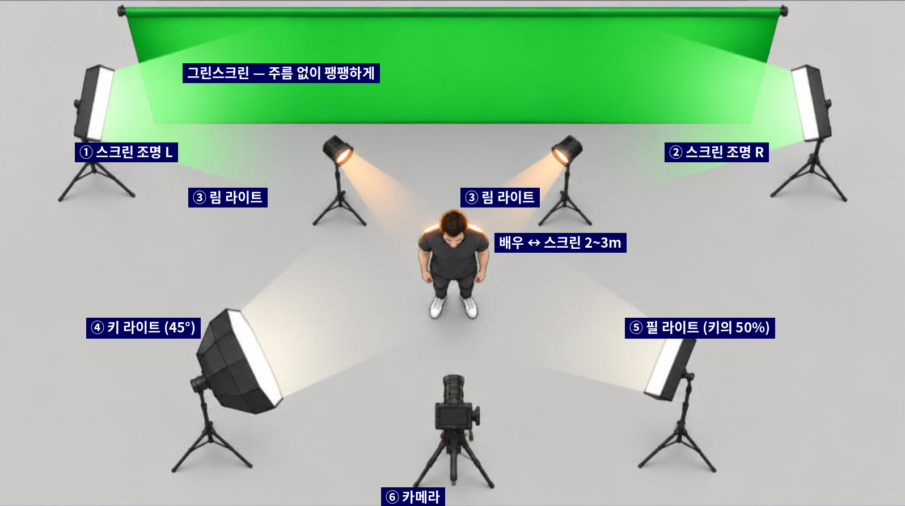
그림 8-1그린스크린 조명 배치(위에서 본 모습, 힉스필드 GPT Image로 생성 후 표기). 스크린 조명 ①②는 배우를 비추지 않고 스크린만 고르게, 배우 조명 ③④⑤는 스크린에 닿지 않게 둡니다. 배우는 스크린에서 2~3m 떨어뜨려 초록 반사(스필)와 그림자를 막습니다.
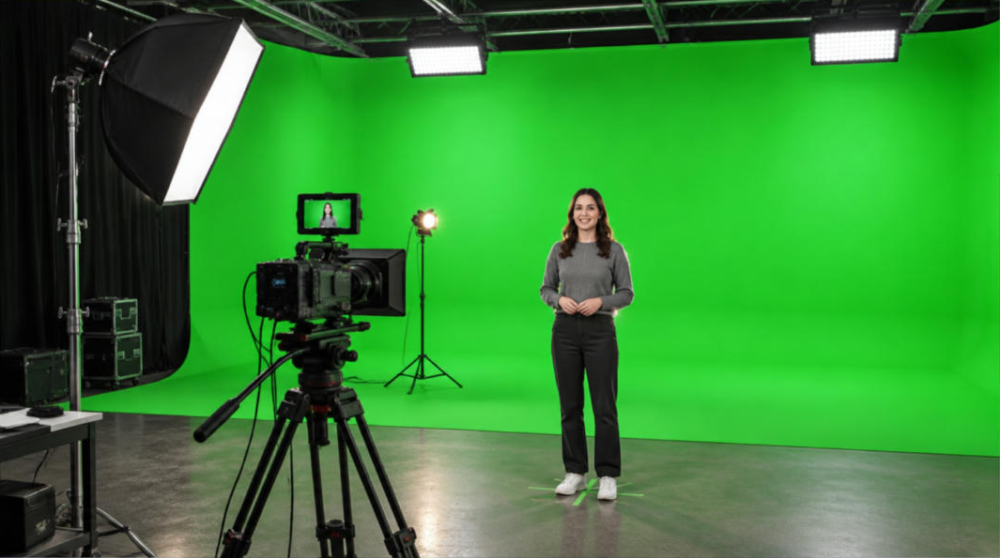
그림 8-2실제 스튜디오에서는 이런 모습입니다(힉스필드 GPT Image로 만든 예시). 스크린을 비추는 조명과 인물을 비추는 조명이 따로 있고, 인물은 스크린에서 떨어져 섭니다.
키잉이 어려운 이유의 대부분은 “고르지 않은 스크린”과 “배우에게 묻은 초록 빛”입니다. 다음 순서로 세팅합니다.
1
스크린 따로, 배우 따로 비춘다. 스크린은 넓고 부드러운 조명(소프트박스, 형광등 뱅크)으로 위아래 양쪽에서 고르게 칠하듯 밝힙니다. 배우는 별도의 키·필 조명으로 비춥니다.
밝기를 맞춘다. 스크린은 화면 전체에서 밝기 차이가 1/3스톱 이내가 되게 합니다. 카메라의 파형(Waveform)이나 False Color로 확인하면 한 줄로 평평하게 나와야 합니다. 배우 얼굴보다 약간 어둡거나 비슷한 밝기가 무난합니다.
4
역광(림 라이트)을 준다. 배우 뒤 위쪽에서 비추는 빛이 머리카락 윤곽을 살리고 초록 번짐을 덮습니다. 살짝 따뜻한 색(앰버, 연한 마젠타)이면 스필을 상쇄합니다.
5
합성할 배경과 빛 방향을 맞춘다. 배경 영상의 해가 왼쪽에 있으면 배우의 키 라이트도 왼쪽에. 키잉이 완벽해도 빛 방향이 다르면 “붙여 넣은 사람”처럼 보입니다.
6
카메라 설정: 셔터를 빠르게(1/100 이상) 해 움직임 흐림을 줄이고, 가능하면 4:2:2 이상, 높은 비트레이트로 녹화합니다. 압축이 심한 파일은 경계가 계단처럼 깨집니다.
흔한 실수
결과
해결
천 주름, 이음새
주름 그림자가 안 빠짐
천을 팽팽히, 주름은 Garbage Matte로 잘라냄
배우가 스크린에 붙어 있음
초록 테두리, 발밑 그림자
거리 두기, Spill Suppressor
반짝이는 소품, 안경
초록이 비쳐 구멍이 남
무광 처리, 각도 조정
머리카락이 흩날림
잔머리가 사라짐
역광 강화, 소프트 매트 따로 만들기
카메라를 움직였는데 기준점이 없음
배경을 맞출 수 없음
스크린에 트래킹 마커(× 표시) 붙이기(10장)
8-4 Keylight로 빼기 — 실습
실습 소스
S01 그린스크린 앞 인물(힉스필드 Seedance 2.0 mini, 720p 5초, 5크레딧) + I12 밝은 스튜디오 배경(Nano Banana 2, 1.5크레딧).
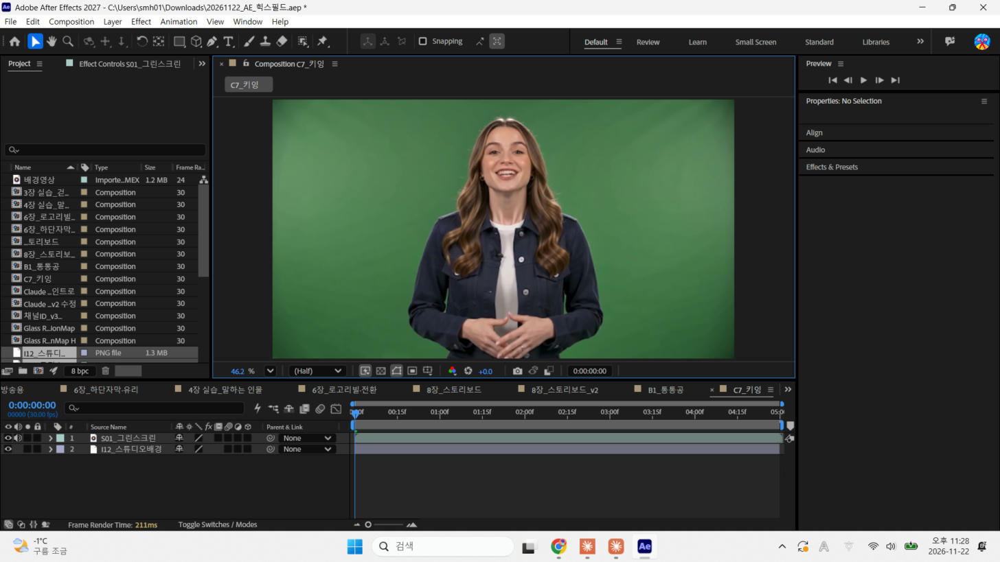
그림 8-3원본. 스크린 가장자리가 어둡고 얼룩이 있어 고르지 않습니다 — 8-3의 “흔한 실수” 그대로입니다.
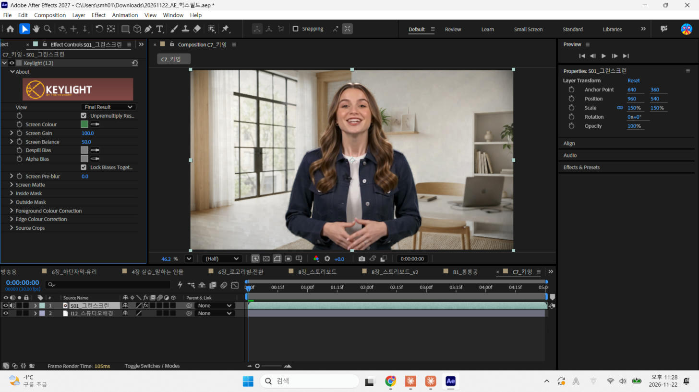
그림 8-4Screen Colour만 찍은 결과. 이 정도로도 대부분 빠집니다.
1
인물 영상을 위, 배경 이미지를 아래에 놓습니다. 인물 레이어에 Effect → Keying → Keylight (1.2).
2
Screen Colour의 스포이트로 배우 가까운 초록을 찍습니다. 이것만으로 대부분 빠집니다.
3
View를 Screen Matte로 바꿔 흑백으로 봅니다. 배경은 완전히 검정, 사람은 완전히 흰색이어야 합니다. 회색 얼룩이 보이면 아직 덜 빠진 것입니다.
4
Screen Matte → Clip Black을 올려 배경의 회색을 검정으로, Clip White를 내려 사람 속 회색을 흰색으로 만듭니다. 너무 세게 하면 머리카락이 깎이니 조금씩.
5
View를 Final Result로 돌리고, 남은 초록 테두리는 Screen Balance, Despill Bias로 줄이거나 Advanced Spill Suppressor를 추가합니다.
6
스크린 바깥(조명, 스탠드)은 펜 도구 마스크로 잘라 냅니다(Garbage Matte). 마지막으로 Key Cleaner로 경계를 정리하고, 인물에 배경과 같은 색감을 입힙니다(12장).
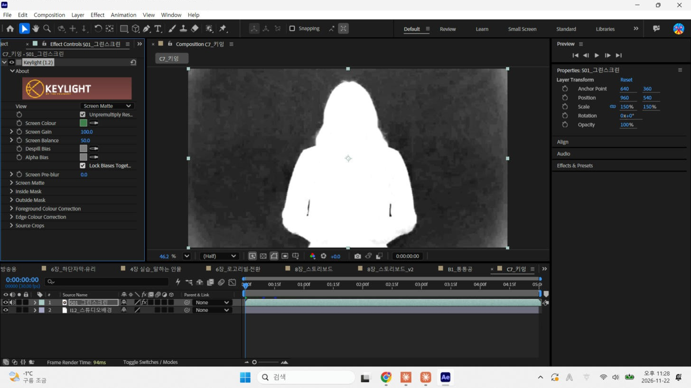
그림 8-5Screen Matte 보기. 배경이 회색 = 반쯤 투명하게 남은 상태.
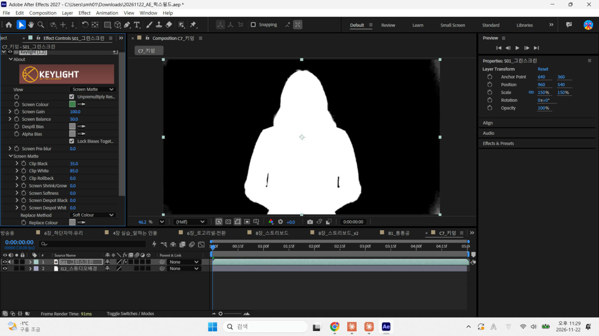
그림 8-6Clip Black 35, Clip White 85 후. 배경은 검정, 사람은 흰색. 네 귀퉁이 흰 얼룩은 조명이 닿지 않은 곳이라 마스크로 잘라 냅니다.
Keylight 값
역할
Screen Gain
지우는 세기. 너무 높으면 사람도 투명해짐
Screen Balance
초록 판단 기준. 보통 50 근처에서 조절
Clip Black / Clip White
매트의 검정·흰색을 확실하게
Screen Shrink/Grow
매트 경계를 안쪽·바깥쪽으로
Screen Softness
경계를 부드럽게
AI 비교힉스필드 Remove BG(18장)는 초록 천 없이도 인물을 빼 주고, 애펙 Object Matte(11장)도 클릭 한 번으로 매트를 만듭니다. 그래도 방송·영화에서 크로마키를 계속 쓰는 이유는 머리카락 한 올, 유리잔, 연기 같은 반투명한 부분까지 정확하게 뽑을 수 있기 때문입니다. 2026년 현재 AI 매트는 빠르지만 경계 품질과 프레임 사이 일관성에서 아직 크로마키를 넘지 못합니다.
8-5 영화 속 크로마키와 그다음
작품
방식과 의미
〈슈퍼맨〉(1978)
블루스크린과 전면 투사로 비행 장면. “당신은 사람이 날 수 있다고 믿게 될 것이다(You’ll believe a man can fly)”라는 홍보 문구로 유명
〈쥬라기 공원〉(1993)
실물 모형과 CG 공룡의 합성. 애펙이 태어난 해에 디지털 합성의 시대를 열었음
〈300〉(2006)
거의 모든 장면을 블루·그린스크린 세트에서 찍고 배경을 그림처럼 합성
마블 영화들(2008~)
대규모 그린스크린 세트와 디지털 배경이 표준이 됨
〈그래비티〉(2013)
LED로 둘러싼 “라이트 박스” 안에서 배우를 찍어 우주의 빛을 얼굴에 비춤
〈만달로리안〉(2019~)
초록 천 대신 거대한 LED 벽에 실시간 3D 배경을 띄우는 버추얼 프로덕션. 배우 얼굴에 배경 빛이 자연스럽게 비침
버추얼 프로덕션은 크로마키를 없앨까LED 볼륨은 스필이 없고 배우가 배경을 보며 연기할 수 있지만 장비가 매우 비쌉니다. 그래서 지금도 광고·유튜브·교육 영상은 대부분 그린스크린을 씁니다. 한국에서도 방송사와 대형 스튜디오에 LED 볼륨 스테이지가 늘고 있습니다.
8-6 모션 캡처 — 움직임만 뽑아 오기
크로마키가 “사람의 모습”을 떼어 내는 기술이라면, 모션 캡처는 “사람의 움직임”만 떼어 내 디지털 캐릭터에 입히는 기술입니다.
방식
원리
쓰이는 곳
광학식(마커)
몸에 반사 마커를 붙이고 여러 대의 적외선 카메라로 위치 추적
영화·게임 대작
관성식(슈트)
센서가 든 옷이 관절 각도를 기록. 장소 제약이 적음
버추얼 유튜버, 현장 촬영
퍼포먼스 캡처
몸과 함께 얼굴 표정·눈동자까지 기록
〈반지의 제왕〉 골룸, 〈아바타〉, 〈혹성탈출〉 시리즈
AI 마커리스
일반 영상 한 개에서 AI가 관절을 추정
개인 창작자, 빠른 시안
힉스필드의 Motion Control(19-4)이 바로 AI 마커리스 방식의 응용입니다. 참고 영상의 동작을 뽑아 다른 인물 이미지에 입힙니다. 애펙에서는 이렇게 만든 캐릭터 영상을 Keylight나 Remove BG로 떼어 배경과 합성합니다.
초상권과 동작다른 사람의 춤이나 연기를 그대로 옮길 때도 원작자와 출연자의 권리가 있습니다. 수업에서는 본인이 직접 찍은 동작을 참고 영상으로 쓰세요.
도전 과제
S01 소스로 키잉한 뒤, 배경 사진의 빛 방향과 색에 인물을 맞추기(Lumetri, 그림자 추가).
직접 촬영: 휴대폰과 초록 천으로 8-3 조명 원칙을 지킨 컷과 어긴 컷을 찍어 Screen Matte를 비교.
이 장 점검
성공하면Screen Matte 보기에서 인물은 흰색, 배경은 검은색으로 깨끗하게 나뉩니다.
막혔을 때머리카락이 끊기면 Clip White를 낮추기보다 Screen Gain을 먼저 조정합니다. 초록 테두리는 Spill Suppression 또는 Advanced Spill Suppressor로 없앱니다.
CHAPTER 09
트래킹 — 움직이는 화면에 붙이기 ●●○
카메라나 피사체가 움직여도 글자·그림이 그 위에 붙어 따라가게 하는 기술입니다. 휴대폰 화면 바꾸기, 간판 바꾸기, 움직이는 사람 옆 이름표가 모두 트래킹입니다.
9-1 세 가지 트래커
트래커
하는 일
예
Track Motion (1점/2점)
점 하나(위치) 또는 둘(위치·회전·크기)을 따라감
움직이는 사람 옆 말풍선
Track Motion (Perspective / Planar)
네 귀퉁이를 따라가 원근까지 맞춤
휴대폰·모니터 화면 교체
3D Camera Tracker
영상 속 수많은 점으로 카메라 움직임 자체를 복원
바닥에 글자 세우기(10장)
Mocha AE (내장 플러그인)
점 대신 “면”을 추적. 흐리거나 가려져도 강함
정교한 화면 교체, 로토
9-2 실습 — 손에 든 화면 바꾸기
실습 소스
S02 초록 화면 기기를 든 손(720p 5초) + I13 날씨 앱 화면 이미지.
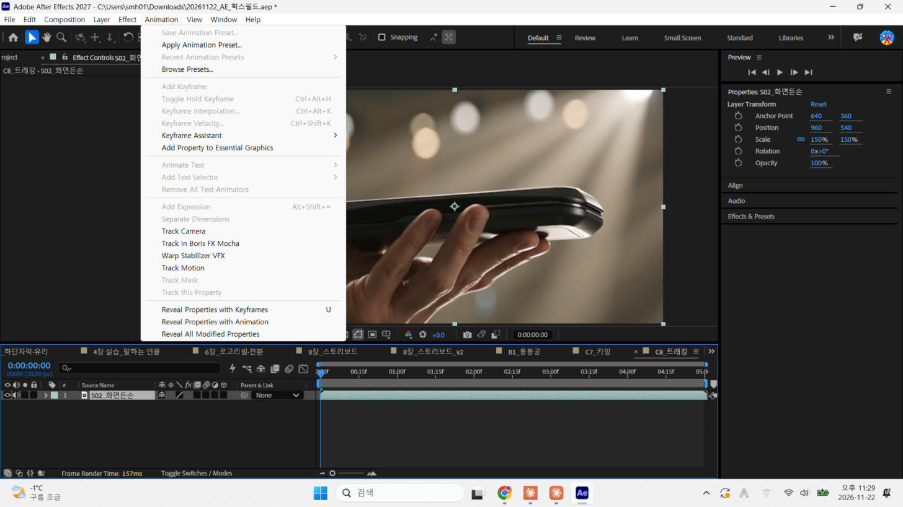
그림 9-1Animation 메뉴의 Track Camera, Track in Boris FX Mocha, Warp Stabilizer VFX, Track Motion.
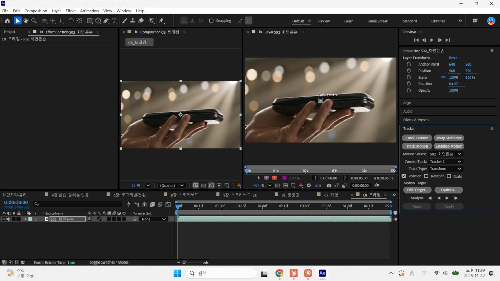
그림 9-2Track Motion을 누르면 오른쪽에 Layer 패널과 Track Point, 아래 Tracker 패널이 열립니다.
네 개의 추적 상자를 화면 네 귀퉁이의 흰 점에 맞춥니다. 안쪽 상자는 따라갈 무늬, 바깥 상자는 찾는 범위입니다.
3
Analyze forward(▶). 중간에 상자가 미끄러지면 멈추고 그 프레임에서 고친 뒤 다시 분석합니다.
4
Edit Target에서 앱 이미지 레이어를 고르고 Apply. 이미지에 Corner Pin 효과가 생기며 네 귀퉁이가 화면을 따라갑니다.
5
원본 영상을 복제해 맨 위에 두고 Keylight로 초록만 지우면, 손가락이 화면 위로 지나가는 장면도 자연스럽습니다. 이미지에 약간의 흐림과 반사를 더해 마무리합니다.
AI 소스의 함정“초록 화면이 보이게 기기를 든 손”이라고 지시했지만, 생성된 영상은 기기 뒷면이 보이게 들려 있었습니다. 생성 영상은 지시를 100% 따르지 않으므로, 실습 소스는 생성 직후 꼭 확인하고 필요하면 다시 만듭니다.
촬영 팁화면에 대비가 강한 점(흰 십자, 작은 스티커)을 귀퉁이에 붙여 두면 트래킹이 훨씬 잘 됩니다. 이 책의 소스도 프롬프트에 “corners에 흰 트래킹 점”을 넣어 만들었습니다.
저작권 거절 경험처음에 “스마트폰을 든 손”으로 영상을 만들자 힉스필드가 저작권 제한으로 거절했습니다. 특정 제품 디자인과 비슷해질 수 있기 때문입니다. “상표 없는 검은 기기”로 바꾸자 생성되었습니다. 실제 제품·로고가 나오지 않게 쓰는 습관을 들이세요.
이 장 점검
성공하면붙인 텍스트가 재생 중에 대상에서 미끄러지지 않습니다.
막혔을 때추적점이 튀면 대비가 강한 모서리로 옮기고 Search 영역을 넓힌 뒤, 튄 프레임부터 다시 분석합니다.
도전 과제
같은 클립을 Point(1점), Perspective Corner Pin(4점), 3D Camera Tracker로 각각 붙여 보고 어떤 상황에 어떤 방식이 맞는지 표로 정리하세요.
CHAPTER 10
3D 카메라 트래커와 하늘 바꾸기 ●●●
카메라가 움직이며 찍은 영상에서 애펙이 카메라의 길을 되짚어, 그 공간에 3D 글자나 물체를 세웁니다.
처음이라면이 장은 건너뛰고 나중에 돌아와도 됩니다. 앞 장만으로도 영상을 만들 수 있습니다.
10-1 3D 카메라 트래커
실습 소스
S05 인도를 따라 앞으로 나아가는 카메라(720p 5초).
1
영상 레이어 우클릭 → Track and Stabilize → Track Camera. 분석이 끝나면 화면에 작은 색 점(트랙 포인트)이 생깁니다.
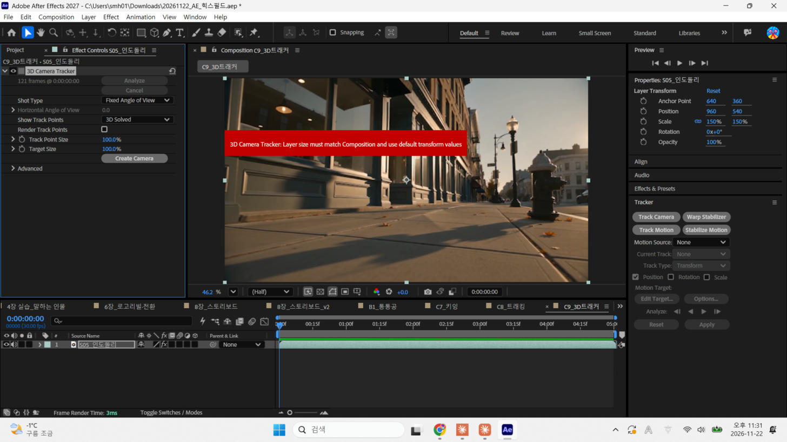
그림 10-1첫 시도 오류: “레이어 크기가 컴포지션과 같고 기본 변형값이어야 함”. 영상을 150%로 키워 두었기 때문입니다.
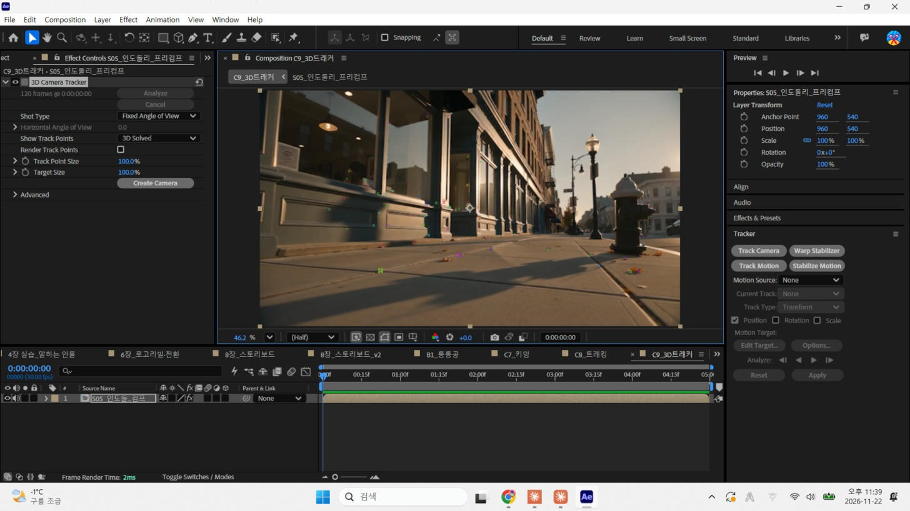
그림 10-2해결: 영상을 프리컴포즈(Move all attributes)한 뒤 다시 분석. 약 1분 30초 뒤 트랙 포인트(작은 색 점)가 생겼습니다.
2
마우스를 바닥의 점들 사이로 천천히 옮기면 빨간 과녁이 나타납니다(점 3개 이상을 드래그해 골라도 됩니다). 과녁이 바닥에 누워 있으면 그 면이 인식된 것입니다. 과녁이 보이지 않으면 Effect Controls에서 3D Camera Tracker 이름을 한 번 클릭해 효과를 선택한 뒤 다시 움직여 봅니다.
3
과녁에서 우클릭 → Create Text and Camera. 3D 텍스트와 카메라가 만들어지고, 글자가 바닥에 붙어 함께 지나갑니다.
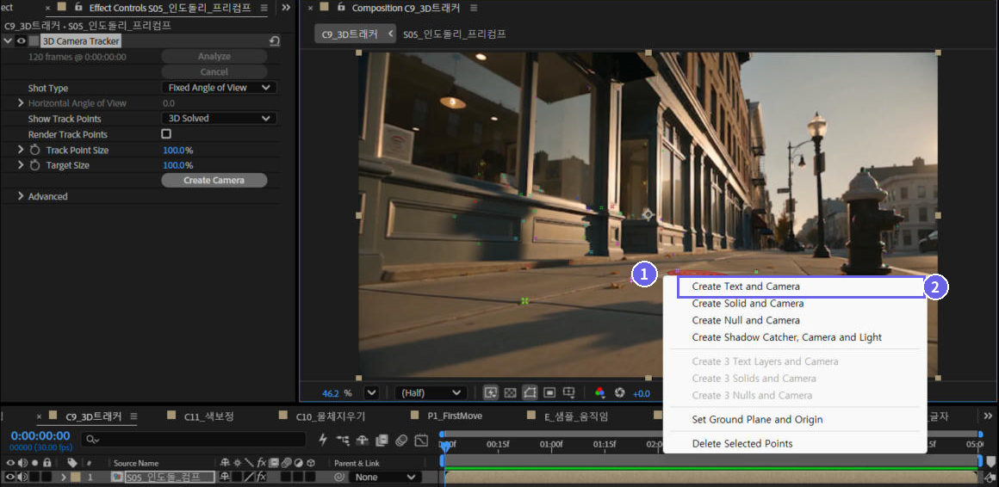
그림 10-3① 바닥 위에 나타난 과녁에서 우클릭 ② Create Text and Camera. 같은 메뉴에서 솔리드, 널, 그림자 받이도 만들 수 있습니다.
4
만들어진 글자는 바닥에 누워 있고 크기가 매우 큽니다. 이 책에서는 Scale을 3000% → 600%로 줄이고, Orientation의 X 값에 90을 더해(242° → 332°) 간판처럼 세웠습니다. 그림자를 원하면 같은 메뉴의 Create Shadow Catcher, Camera and Light를 씁니다.
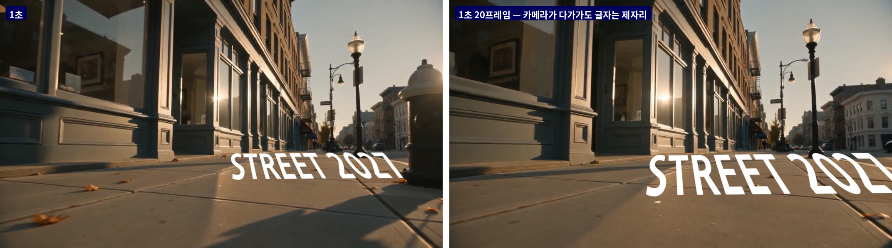
그림 10-4결과. 카메라가 앞으로 나아가면 글자가 원근에 맞게 커지며 제자리를 지킵니다. 글자는 나눔고딕 ExtraBold 90px. 컴포지션 10-1_3D트래커.
잘 되는 영상의 조건카메라가 옆이나 앞으로 이동(돌리)하며 원근 차이(시차)가 생길 것, 질감 있는 바닥, 흔들림·흐림이 적을 것. 제자리 회전만 하는 영상은 깊이를 계산하기 어렵습니다.
10-2 하늘 바꾸기
실습 소스
S06 하얀 하늘의 옥상(720p 5초) + I11 노을 하늘 이미지.
1
옥상 영상 레이어에 Object Matte나 Linear Color Key, Extract(밝은 부분 빼기)로 하얀 하늘만 투명하게 만듭니다.
2
노을 이미지를 아래에 놓고, 영상이 흔들리면 1점 트래킹을 하늘 레이어에 적용합니다.
3
빛을 맞춥니다. 노을이면 옥상 영상 전체에 주황 색조(Lumetri의 Temperature)와 약간의 대비를 더해야 같은 시간처럼 보입니다.
AI로 하면힉스필드 Change Time of Day(19-2)는 하늘뿐 아니라 건물에 비치는 빛까지 함께 바꿔 줍니다. 손으로 하면 하늘만 바뀌고 빛은 직접 맞춰야 하지만, 원본 화질과 결과를 완전히 통제할 수 있습니다.
이 장 점검
성공하면과녁 자리에 만든 글자가 땅에 붙어, 카메라가 움직여도 원근대로 따라 움직입니다.
막혔을 때‘레이어 크기가 컴포지션과 같아야 한다’는 경고가 뜨면 클립을 프리컴포즈(Move all attributes)한 뒤 다시 분석합니다.
도전 과제
하늘을 바꾼 뒤 Lumetri로 전경 색온도를 새 하늘에 맞추고, 바꾸기 전·후를 나란히 비교하세요.
CHAPTER 11
Object Matte와 Content-Aware Fill ●●○
사람을 떼어 내고(Object Matte), 필요 없는 물체를 지우는(Content-Aware Fill) 두 AI 도구입니다. 둘 다 애펙 안에서 처리되어 크레딧이 들지 않습니다.
11-1 로토 브러시에서 Object Matte로
예전 애펙의 Roto Brush(2020년 Roto Brush 2)는 사람이 붓으로 칠하면 AI가 프레임마다 따라가는 도구였습니다. 2026년 4월(26.2)부터는 이것이 Object Matte 도구 묶음으로 바뀌었고, 로토 브러시는 이름이 Quick Selection으로 바뀌어 그 안에 들어갔습니다.
도구
하는 일
Object Matte Tool
클릭 한 번(또는 드래그)으로 사람·차를 골라 끝까지 따라감. Alt+W
Quick Selection
옛 로토 브러시. 칠해서 더하고, Alt로 빼기
Selection Brush
매트를 세밀하게 고치는 붓
Refine Edge
머리카락·털 같은 경계 다듬기
11-2 실습 — 걷는 사람 떼어 내기
실습 소스
S03 공원을 걷는 빨간 후드 남성(720p 5초).
1
영상 레이어를 더블클릭해 Layer 패널을 엽니다. Object Matte Tool로 사람을 클릭합니다.
머리·옷 가장자리를 Refine Edge로 다듬고 Freeze를 누르면 결과가 고정되어 빠르게 재생됩니다. 26.5부터 결과가 디스크에 저장돼 프로젝트를 다시 열어도 남습니다.
4
원본을 복제해 위에 두면 “사람 앞에 글자, 사람 뒤에 글자” 같은 레이어 샌드위치를 만들 수 있습니다.
11-3 Content-Aware Fill — 물체 지우기
실습 소스
S04 도로 가운데 주황 고깔이 있는 골목(720p 5초).
1
영상 레이어에서 펜 도구로 고깔을 넉넉히 감싸는 마스크를 그리고 Mode를 Subtract로. 물체가 움직이면 마스크도 키프레임(또는 마스크 트래킹)으로 따라가게 합니다.
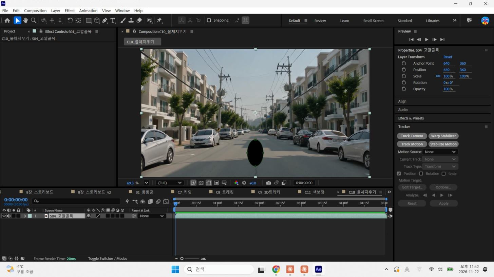
그림 11-1고깔에 타원 마스크를 Subtract로 그린 상태. 검게 빈 곳을 Content-Aware Fill이 주변 도로로 채웁니다.
2
Window → Content-Aware Fill. Fill Method를 고릅니다: Object(움직이는 물체), Surface(정지한 벽의 낙서), Edge Blend(질감 적은 면).
3
Generate Fill Layer. 애펙이 앞뒤 프레임과 주변을 보고 빈 곳을 채운 새 이미지 시퀀스를 만들어, 영상 위에 Fill [000-149].png 같은 이름의 레이어로 올립니다.
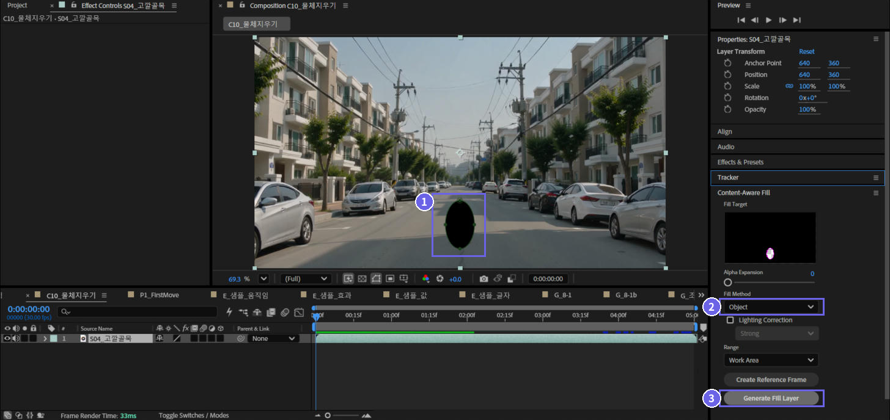
그림 11-2① 마스크로 비운 자리 ② Fill Method: Object ③ Generate Fill Layer. 5초(150프레임) 분석과 생성에 1분쯤 걸렸습니다.
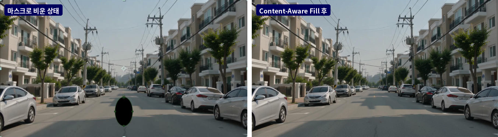
그림 11-3채우기 전(왼쪽)과 채운 뒤(오른쪽). 고깔이 있던 자리에 주변 도로가 이어졌습니다. 컴포지션 11_물체지우기.
4
결과가 흐릿하면 Create Reference Frame으로 한 프레임을 포토샵에서 깨끗이 고친 뒤 기준으로 삼아 다시 채웁니다.
힉스필드 Draw to Edit과 비교Content-Aware Fill은 원본 화질을 지키고 무료지만, 배경이 복잡하면 흔적이 남습니다. Draw to Edit(18-4)은 새로 그려서 자연스럽지만 크레딧이 들고 해상도가 바뀔 수 있습니다. 간단한 물체는 애펙, 복잡한 장면은 AI 생성이 효율적입니다.
이 장 점검
성공하면지운 물체 자리에 배경이 자연스럽게 채워지고, 재생해도 얼룩이 흔들리지 않습니다.
막혔을 때결과가 번지면 마스크를 물체보다 10~20px 크게 잡고(Mask Expansion), Fill Method를 Object에서 Surface로 바꿔 봅니다. 어려운 프레임은 Reference Frame을 만들어 줍니다.
도전 과제
전깃줄, 간판 글자, 지나가는 사람 세 가지를 지우며 어떤 것이 가장 어려웠는지 기록하세요.
CHAPTER 12
색 보정과 룩 ●●○
합성의 마지막 단계는 색입니다. 서로 다른 곳에서 온 소스도 색과 대비가 같으면 한 장면처럼 보입니다.
12-1 Lumetri Color
Effect → Color Correction → Lumetri Color. 프리미어와 같은 도구라 한 번 익히면 둘 다 씁니다. 여러 레이어에 같은 색을 입히려면 조정 레이어에 겁니다.
구역
하는 일
Basic Correction
화이트 밸런스(Temperature·Tint), 노출, 대비, 하이라이트·섀도, 채도
Creative
LUT(룩) 적용, Faded Film, 비네트, 하이라이트·섀도 색조
Curves
RGB 곡선, 색상별 채도·색상 곡선
Color Wheels
어두운·중간·밝은 영역에 각각 색 입히기
HSL Secondary
특정 색만 골라 바꾸기(하늘만 더 파랗게)
12-2 실습 — 밋밋한 영상 살리기
실습 소스
S07 회색 하늘의 바닷가 산책로, 로그 촬영처럼 물 빠진 색(720p 5초).
1
Basic Correction에서 Contrast +30, Saturation 120으로 기본 대비와 색을 되살립니다.
2
Curves에서 S자 곡선 — 어두운 곳은 조금 내리고 밝은 곳은 조금 올립니다.
3
Color Wheels에서 Shadows는 청록, Highlights는 주황으로 살짝 — 영화에서 흔한 “틸 앤 오렌지” 룩입니다.
4
Window → Lumetri Scopes로 파형을 보며 너무 밝아 날아간 곳(100 이상)이 없는지 확인합니다.
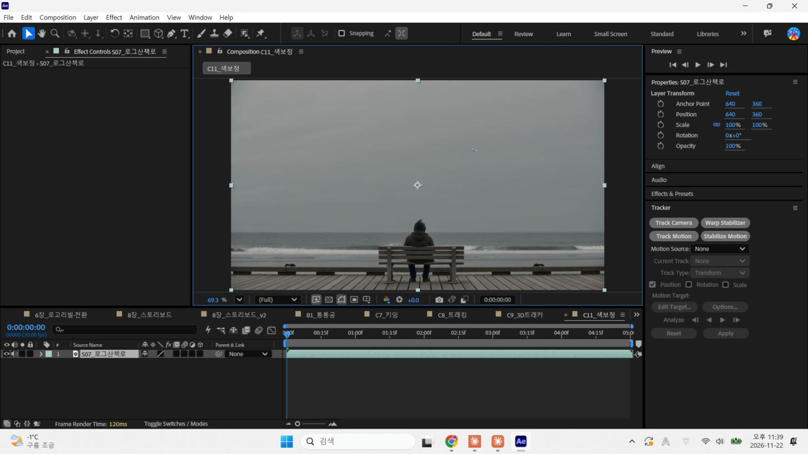
그림 12-1보정 전. 회색 하늘, 낮은 대비 — 로그 촬영 원본의 전형.
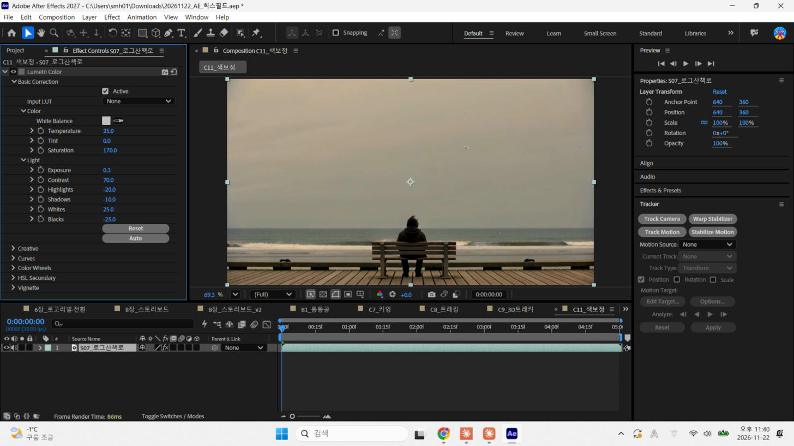
그림 12-2Lumetri Basic Correction: Temperature 25, Saturation 170, Contrast 70, Whites 25, Blacks -25. Claude 브리지로 값을 넣었습니다(0크레딧).
ACES 2.026.5부터 애펙은 ACES 2.0 색 관리를 지원합니다. 여러 카메라·CG를 섞는 프로젝트에서 색이 일관되게 유지됩니다. 수업 과제 수준에서는 기본 설정으로 충분합니다.
이 장 점검
성공하면스코프(Lumetri Scopes)에서 흰 곳은 90~95, 검은 곳은 5~10 근처에 있습니다.
같은 클립으로 ‘따뜻한 광고’, ‘차가운 다큐’, ‘빛바랜 회상’ 세 룩을 만들고 각각 조정 레이어에 저장하세요.
도전 과제 심화
같은 영상으로 “따뜻한 추억”, “차가운 스릴러”, “광고처럼 깨끗한” 세 가지 룩 만들기. Lumetri Scopes 캡처를 함께 제출.
PART 4
3D와 실무
평면을 넘어 공간을 만들고, 완성한 작업을 제대로 내보내 다른 프로그램·사람과 주고받는 법입니다.
CHAPTER 13
3D 레이어, 카메라, 라이트 ●●●
애펙의 레이어는 정육면체 아이콘 하나로 3D가 됩니다. 종이 카드를 공간에 세워 두고 카메라로 찍는다고 생각하면 쉽습니다.
처음이라면이 장은 건너뛰고 나중에 돌아와도 됩니다. 앞 장만으로도 영상을 만들 수 있습니다.
13-1 3D 레이어 켜기
그림 13-1애펙 3D 공간. Y는 아래로, Z는 멀어질수록 커집니다. 깊이가 다른 레이어를 카메라가 지나가면 시차가 생깁니다.
타임라인의 3D Layer 스위치(정육면체)를 켜면 Position·Anchor Point에 z값이 생기고, Orientation과 X·Y·Z Rotation이 나타납니다. z가 커질수록 멀어집니다. 26.x부터는 여러 3D 레이어를 한 번에 돌리는 3D Gizmo를 쓸 수 있습니다.
렌더러
특징
Classic 3D
가볍고 빠름. 평면 카드 위주의 모션그래픽
Cinema 4D
텍스트·셰이프 돌출(Extrude), 베벨
Advanced 3D
3D 모델(GLB·OBJ), 이미지 기반 조명, 그림자, 26.3부터 피사계 심도. 26.0부터 파라메트릭 메시(구·상자·원기둥)를 애펙 안에서 바로 생성
렌더러는 컴포지션 패널 오른쪽 위 또는 Composition Settings → 3D Renderer에서 고릅니다.
13-2 카메라
1
Layer → New → Camera. 처음에는 One-Node 카메라와 35mm 프리셋이 무난합니다.
2
카메라 도구(C)로 궤도·이동·돌리를 시험하고, 원하는 움직임은 Position 키프레임으로 기록합니다.
3
카메라를 널에 페어런팅하면, 널을 돌리는 것만으로 부드러운 궤도 촬영이 됩니다.
4
Depth of Field를 켜고 Focus Distance를 주인공 레이어에 맞추면 앞뒤가 흐려져 깊이가 생깁니다.
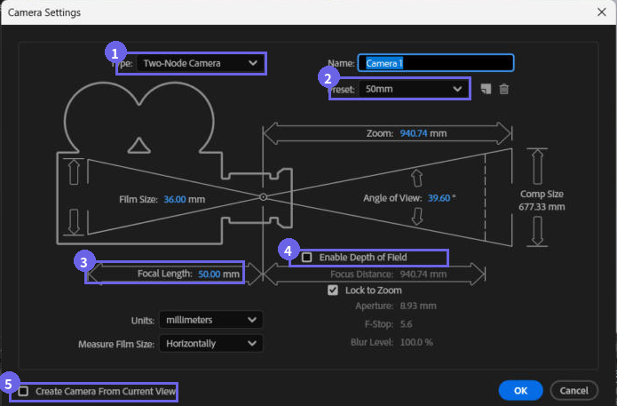
그림 13-2Camera Settings 창(Ctrl+Alt+Shift+C). ① Type: One-Node는 자유 이동, Two-Node는 관심점(Point of Interest)을 바라봄 ② Preset: 렌즈 mm — 35~50mm가 자연스러움 ③ Film Size·Angle of View: 화각 ④ Enable Depth of Field: 배경 흐림 ⑤ Create Camera From Current View.
렌즈
화면 느낌
쓰는 곳
15~24mm
넓고 과장, 가까운 것이 크게
공간 소개, 역동적 타이틀
35~50mm
사람 눈과 비슷
대부분의 모션그래픽
85~200mm
배경이 압축, 평평하게
제품·인물 강조, 흐림 배경
13-3 라이트와 그림자
그림 13-3다섯 가지 라이트. 실제 촬영 조명과 같은 원리입니다.
종류
쓰임
Point
전구처럼 사방으로
Spot
무대 조명처럼 원뿔 모양으로
Parallel
햇빛처럼 한 방향으로
Ambient
전체를 고르게 밝히기(그림자 없음)
Environment
HDR 이미지로 주변 빛과 반사 만들기(Advanced 3D)
그림자를 보려면 라이트의 Casts Shadows를 켜고, 그림자를 만들 레이어의 Material Options → Casts Shadows, 받을 바닥의 Accepts Shadows를 켭니다.
13-4 3D 모델 불러오기
GLB·GLTF·OBJ·FBX 파일을 그냥 불러와 컴포지션에 놓으면 Advanced 3D로 표시됩니다. 모델 안의 애니메이션도 재생됩니다. 힉스필드의 3D 생성 기능이나 블렌더로 만든 모델을 가져와, 애펙 카메라로 찍고 글자와 합성하는 흐름이 가능합니다. Cinema 4D Lite는 애펙 설치 시 함께 들어오는 3D 프로그램으로, Cineware를 통해 C4D 장면을 레이어처럼 가져옵니다.
AI와 3D힉스필드 브리지는 블렌더(bl_*)와 시네마 4D(c4d_*)도 조종합니다. “블렌더에서 로고를 돌출해 GLB로 내보내고 애펙에 불러와 카메라로 한 바퀴 돌게”처럼 프로그램을 넘나드는 지시가 가능해지고 있습니다.
따라 하기 13-5 카메라 4개 뷰로 공간 보기
3D는 한 화면만 보면 거리를 착각하기 쉽습니다. 건축 도면처럼 위·앞·옆에서 동시에 보면 레이어가 어디에 있는지 바로 보입니다.
Advanced 3D 전용. Intensity 100%에서 시작, 반사 많은 3D 모델에 필수
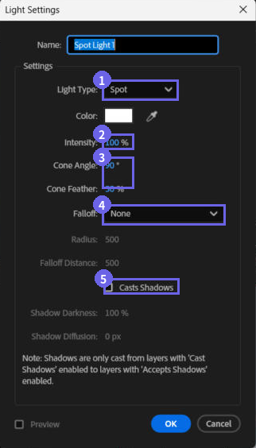
그림 13-6Light Settings 창(Ctrl+Alt+Shift+L). ① Light Type ② Color ③ Intensity ④ Cone Angle·Cone Feather(Spot 전용) ⑤ Falloff — None이면 거리와 상관없이 같은 밝기.
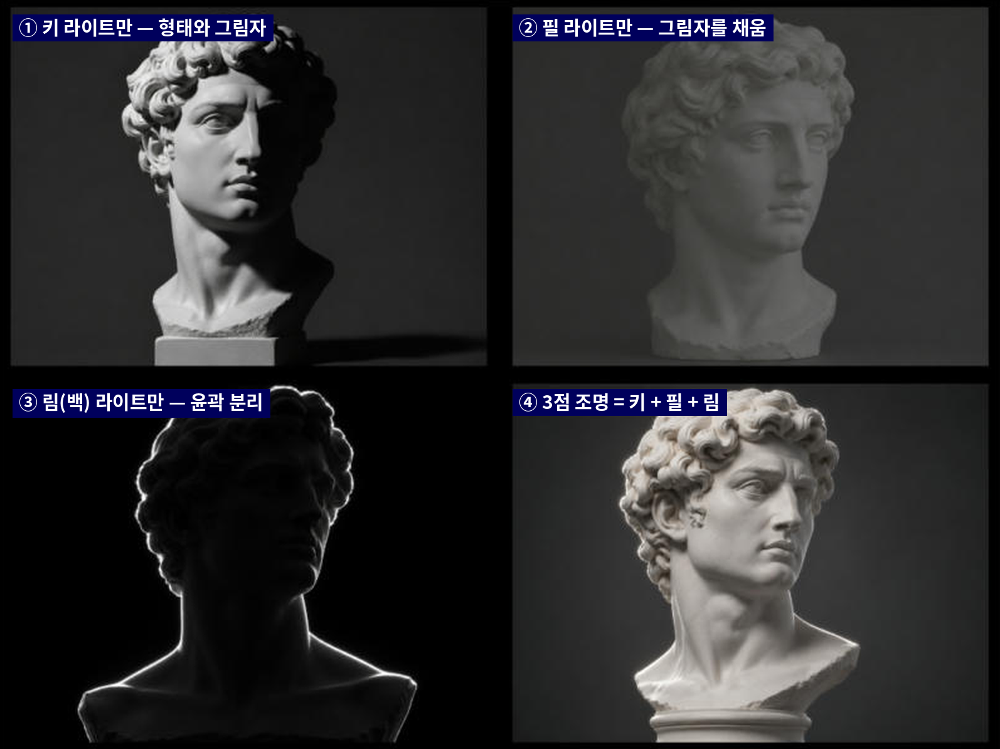
그림 13-7빛의 역할을 사진으로 비교(힉스필드 GPT Image로 생성). 키는 형태, 필은 그림자의 깊이, 림은 배경과의 분리를 맡습니다. 애펙 3D 라이트도 같은 원리로 Key=Spot, Fill=Point(낮은 강도), Rim=뒤쪽 Spot으로 구성합니다.
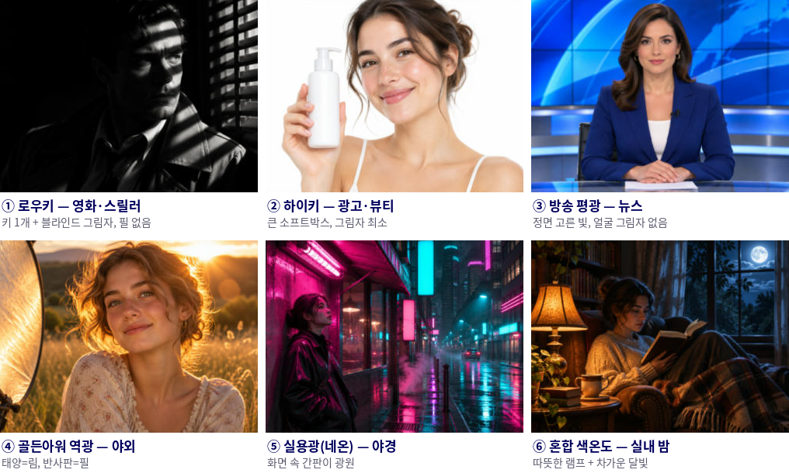
그림 13-8같은 사람·장면이라도 조명 설계에 따라 장르가 바뀝니다(힉스필드 GPT Image로 생성). 애펙에서 흉내 낼 때: ① Spot 1개, Ambient 0% ② Point 2~3개 낮은 대비 + Ambient 40% ③ Parallel 정면 + Ambient 30% ④ 뒤쪽 Spot(따뜻한 색)으로 림, 앞쪽 Point 30%로 필 ⑤ 색이 있는 Point 여러 개, Falloff Smooth ⑥ 주황 Point + 파랑 Parallel을 섞음.
3점 조명 예(제품 로고): Key = Spot 120%, 왼쪽 위 45° · Fill = Point 40%, 오른쪽 · Back(Rim) = Spot 90%, 뒤쪽 위 · Ambient 15%. 그림자는 Key만 Casts Shadows On, Shadow Darkness 60%, Shadow Diffusion 20px로 시작합니다.
막혔을 때라이트를 넣자마자 화면이 어두워지면 정상입니다. 라이트가 하나라도 있으면 애펙은 그 빛만으로 계산합니다. Ambient 20%를 하나 더 넣거나, 해당 레이어의 Material Options → Accepts Lights를 Off로 둡니다.
왜 그럴까 13-7 들어오는 3D 파일 형식
확장자
애펙에서
메모
.glb / .gltf
바로 불러오기(Advanced 3D)
권장. 재질·텍스처·애니메이션이 한 파일에. 블렌더·힉스필드 3D 생성 결과가 이 형식
.obj
바로 불러오기
모양과 기본 재질(.mtl)만. 애니메이션 없음
.fbx
바로 불러오기(25.2부터)
마야·모션캡처 데이터가 흔히 이 형식. 뼈대 애니메이션이 복잡하면 블렌더에서 GLB로 정리한 뒤 가져옵니다
.c4d
Cineware 레이어로 연결
시네마 4D 장면을 그대로 렌더. 수정은 C4D에서
.usd / .abc
직접 불가
필름 파이프라인 형식. GLB로 변환하거나 외부 렌더 후 합성
.hdr / .exr
Environment Light 이미지
주변 빛과 반사용. 2K~4K면 충분
크기 기준애펙 안에서 원활하려면 GLB 하나에 폴리곤 50만 개, 텍스처 2K(2048px) 이하를 권합니다. 더 무거우면 블렌더에서 Decimate로 줄입니다.
따라 하기 13-8 재질과 텍스처 조절
평면 레이어와 3D 모델은 재질을 다루는 곳이 다릅니다.
1
평면 3D 레이어: 레이어를 펼쳐 Material Options. Diffuse(빛을 받아 보이는 밝기), Specular Intensity(반짝임 세기), Specular Shininess(반짝임이 좁고 날카로운 정도), Metal(반사광에 레이어 색을 섞는 정도)을 바꿉니다.
2
3D 모델·3D 글자·셰이프: Advanced 3D에서 레이어를 고르면 Properties 패널과 타임라인에 Material Assignment(재질 지정)가 나옵니다. 기본 재질의 속성은 Base Color, Roughness, Metallic, Emission Color·Intensity, Ambient Response입니다. 모델 파일에 들어 있던 PBR 값이 그대로 들어옵니다.
3
Substance 3D 재질(.sbsar): 26.0부터 모델과 파라메트릭 메시에, 27.0부터는 3D 글자와 셰이프에도 입힐 수 있습니다. 27.0에서는 영상이나 컴포지션 레이어를 재질의 소스로 쓸 수도 있습니다.
4
텍스처 이미지 자체를 바꾸려면 블렌더나 Substance에서 고친 뒤 GLB로 다시 내보내고, 프로젝트 패널에서 우클릭 → Replace Footage → File(Ctrl+H)로 바꿉니다.
재질 샘플
Material Options (평면)
기본 재질 (3D 모델·글자)
무광 종이
Diffuse 80, Specular 10, Shininess 5, Metal 0
Metallic 0, Roughness 0.9
플라스틱
Diffuse 60, Specular 50, Shininess 30, Metal 0
Metallic 0, Roughness 0.4
광택 유리판
Diffuse 30, Specular 90, Shininess 80, Metal 0, Opacity 40%
Metallic 0, Roughness 0.05, 레이어 Opacity 30~40%
금속 로고
Diffuse 40, Specular 80, Shininess 60, Metal 100
Metallic 1, Roughness 0.25 + Environment Light 필수
네온 간판
Accepts Lights Off + Glow 이펙트
Emission Color 지정, Emission Intensity 2~5
이 장 점검
성공하면4 Views에서 카메라와 라이트를 옮기면 Active Camera 화면의 원근과 그림자가 함께 바뀝니다.
막혔을 때그림자가 안 보이면 세 곳을 확인합니다. 라이트의 Casts Shadows, 그림자를 만드는 레이어의 Material Options → Casts Shadows, 그림자를 받는 레이어의 Accepts Shadows. Ambient 라이트만 있으면 그림자가 생기지 않습니다.
도전 과제
같은 GLB 모델을 Roughness 0.1과 0.8로 두 번 렌더해 나란히 비교하세요. 그다음 Environment Light의 HDR을 실내→야외로 바꾸면 금속 표면에 비친 풍경이 어떻게 달라지는지 기록해 봅니다.
CHAPTER 14
렌더링, 출력, 다른 프로그램과 연결 ●○○
아무리 잘 만들어도 내보내기를 잘못하면 화질이 깨지거나 파일이 너무 커집니다. 납품의 마지막 단계를 정리합니다.
그림 14-1영상 한 편이 나가기까지. 이 책의 각 부가 이 흐름의 한 칸씩을 맡습니다.
14-1 두 가지 출력 경로
경로
특징
Render Queue (Ctrl+M)
애펙 안에서 바로 렌더. 무손실·투명 배경 마스터 파일에 적합
Adobe Media Encoder (Ctrl+Alt+M)
백그라운드에서 렌더하며 애펙 계속 작업. H.264·유튜브 프리셋 등 압축 파일에 적합
14-2 용도별 출력 설정
용도
형식·코덱
메모
유튜브·SNS 업로드
H.264(MP4), 1080p, 10~20Mbps
Media Encoder의 YouTube 프리셋
편집용 마스터
QuickTime ProRes 422 HQ
화질 손실 거의 없음, 파일 큼
투명 배경(자막·로고)
ProRes 4444 + RGB+Alpha
프리미어 위에 얹을 그래픽
방송 납품
방송사 규격서(코덱·음량·안전 영역)
음량 -24 LKFS 등 기준 확인
전광판·파사드
현장 해상도, 높은 비트레이트
현장 플레이어가 읽는 코덱으로
웹 애니메이션
Lottie(JSON), GIF
Bodymovin 등 확장 기능
14-3 프리미어와 오가기 — Dynamic Link
프리미어에서 클립을 우클릭해 Replace With After Effects Composition을 누르면 애펙 컴포지션이 만들어지고, 애펙에서 고친 내용이 렌더 없이 프리미어에 반영됩니다. 반대로 애펙 컴포지션을 프리미어 프로젝트 패널로 끌어다 놓아도 됩니다.
14-4 MOGRT — 프리미어에서 고치는 템플릿
1
Window → Essential Graphics. Primary에서 컴포지션을 고르고, 고칠 수 있게 할 속성(글자, 색, 크기 슬라이더)을 패널로 끌어다 놓습니다. 타임라인에서 속성을 우클릭해 Add Property to Essential Graphics를 눌러도 됩니다.
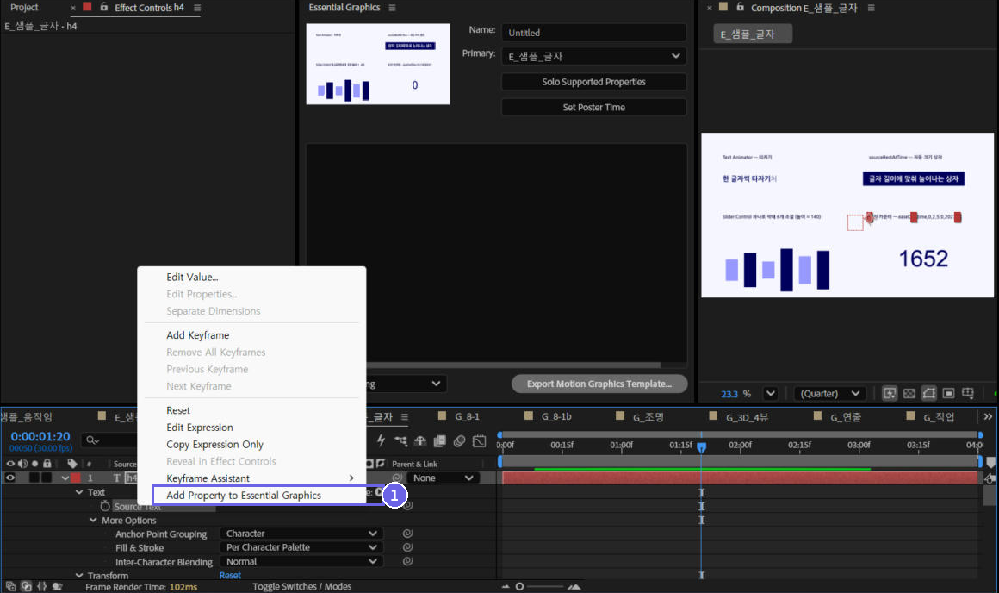
그림 14-2① 타임라인에서 Source Text를 우클릭 → Add Property to Essential Graphics.
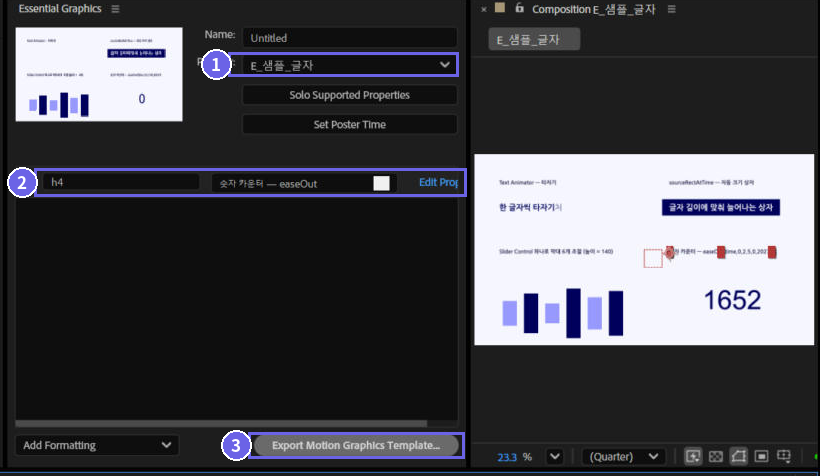
그림 14-3Essential Graphics 패널. ① Primary: 템플릿으로 만들 컴포지션 ② 등록된 속성(글자 내용) ③ Export Motion Graphics Template. 컴포지션 07-3_익스프레션_글자.
2
Export Motion Graphics Template으로 .mogrt 파일을 저장합니다.
3
프리미어의 Essential Graphics에서 불러와, 편집자는 애펙 없이 글자와 색만 바꿉니다. 하단 자막·채널 ID를 팀에 나눠 줄 때 씁니다.
7장과 연결익스프레션 컨트롤(7-16)과 자동 크기 상자(7-12)를 넣어 두면, 편집자가 이름을 길게 써도 상자가 알아서 늘어나는 MOGRT가 됩니다.
14-5 포토샵·일러스트레이터 파일
PSD·AI 파일을 Composition - Retain Layer Sizes로 가져오면 레이어가 살아 있는 컴포지션이 됩니다. 원본 파일을 고쳐 저장하면 애펙에도 반영됩니다.
14-6 정리와 백업
File → Dependencies → Collect Files: 프로젝트와 쓰인 소스를 한 폴더로 모읍니다. 다른 컴퓨터로 옮기거나 과제를 제출할 때 필수입니다.
Reduce Project: 선택한 컴포지션에 쓰이지 않는 항목을 지웁니다.
Increment and Save(Ctrl+Alt+Shift+S): 파일 이름 끝 번호를 올려 새로 저장합니다. 되돌릴 수 있는 기록이 남습니다.
Frame.io: 애펙 안의 Frame.io V4 패널(Window 메뉴)로 결과를 올리고, 클라이언트의 프레임별 코멘트를 받아 봅니다.
14-7 렌더가 느릴 때
방법
효과
미리보기 해상도 Half / Quarter
작업 중 반응 속도 향상
Region of Interest
화면 일부만 계산
프리렌더(Pre-render) 후 교체
무거운 프리컴포즈를 영상 파일로 바꿔 둠
Edit → Purge → All Memory & Disk Cache
캐시가 꼬였을 때 정리
Preferences → Memory & Performance
다른 앱에 남길 메모리 줄이기
이 장 점검
성공하면Media Encoder 또는 Render Queue에서 H.264 MP4가 만들어지고, 휴대폰에서도 재생됩니다.
막혔을 때렌더가 너무 느리면 Composition → Preview → Cache Work Area in Background를 켜고, 투명 배경이 필요할 때만 ProRes 4444 / Alpha를 고릅니다.
도전 과제
같은 10초 영상을 유튜브(16:9), 쇼츠(9:16), 방송(1920×1080 59.94i 기준 확인) 세 가지 규격으로 내보내 보세요.
CHAPTER 15
함께 쓰는 도구, 비교할 도구 ●○○
애펙 혼자 모든 일을 하지 않습니다. 무엇과 함께 쓰고, 어떤 도구와 비교해 고를지 알면 작업 시간이 크게 줄어듭니다.
15-1 함께 쓰면 좋은 도구
도구
애펙과 나누는 일
연결 방법
Premiere (옛 Premiere Pro)
컷 편집, 자막, 음향. 애펙은 그래픽·합성
Dynamic Link, MOGRT
Photoshop
배경 그림, 매트 페인팅, 프레임 수정
PSD 레이어 그대로 불러오기
Illustrator
로고·아이콘·인포그래픽 벡터
AI 파일 → 셰이프 레이어 변환
Media Encoder
백그라운드 렌더, 여러 규격 한 번에
Ctrl+Alt+M
Cinema 4D / Blender
3D 모델링, 조명, 물리 시뮬레이션
Cineware, GLB 불러오기, 힉스필드 브리지
Figma
UI 화면 설계 → 앱 모션 시안
레이어 내보내기 플러그인
Audition
음성 정리, 음량 맞추기
Dynamic Link
Frame.io
클라이언트 검수, 프레임별 코멘트
애펙 안 Frame.io 패널
Higgsfield · Firefly
소스 생성, 배경 제거, 리프레임
플러그인 패널, MCP
Claude
기획, 익스프레션 작성, 반복 작업 자동화
Higgsfield Bridge(MCP)
15-2 비교할 만한 도구
도구
방식
애펙과 비교해 강한 점 / 약한 점
DaVinci Resolve Fusion
노드 기반 합성
무료판, 편집·색보정과 한 프로그램 / 모션그래픽 템플릿 생태계는 작음
Nuke (Foundry)
노드 기반 합성
영화 VFX 표준, 대용량 합성 / 비싸고 모션그래픽에는 과함
Cavalry
절차적 2D 애니메이션
복제·데이터 기반 모션이 빠름 / 영상 합성 기능은 약함
Apple Motion
레이어 기반
저렴, Final Cut Pro 연동 / 맥 전용, 플러그인 적음
Blender
3D 통합
무료, 3D·시뮬레이션 강력 / 2D 모션그래픽 작업 흐름은 낯섦
Rive · Lottie 도구
인터랙티브 벡터
앱·웹 실시간 애니메이션 / 영상 출력 목적은 아님
Unreal Engine
실시간 3D
버추얼 프로덕션, 방송 그래픽 / 학습량 큼
노드와 레이어애펙은 레이어를 위아래로 쌓는 방식, Fusion·Nuke는 상자(노드)를 선으로 잇는 방식입니다. 레이어는 직관적이고, 노드는 수백 개의 합성 단계를 정리하기 쉽습니다. 영화 VFX 현장으로 갈 학생은 노드 방식도 한 번 경험해 보세요.
CHAPTER 16
직업별 실전 팁 ●●○
같은 애펙도 누가 쓰느냐에 따라 중요한 기능이 다릅니다. 현장에서 자주 듣는 조언을 직업별로 모았습니다.
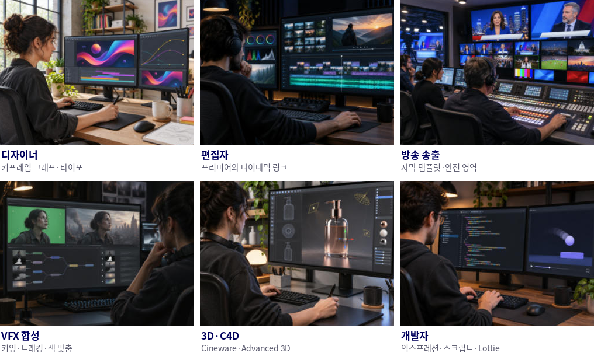
그림 16-1직업마다 애펙을 쓰는 장면(힉스필드 GPT Image로 만든 예시 장면). 같은 프로그램이지만 다루는 기능의 비중이 다릅니다.
디자이너 그래픽·브랜드
일러스트레이터에서 레이어를 정리해(레이어 하나에 요소 하나) 넘기면 애펙에서 하나씩 움직이기 쉽습니다.
브랜드 색은 익스프레션 Color Control 하나에 모아 두면 전체 색을 한 번에 바꿉니다(7-16).
Essential Graphics로 MOGRT를 만들어 편집자에게 넘기면 수정 요청이 줄어듭니다.
개발자 앱·웹
UI 모션은 Bodymovin으로 Lottie(JSON)로 내보내 앱에 그대로 넣습니다. 지원 안 되는 효과(블러, 일부 매트)는 피합니다.
ExtendScript/JavaScript 스크립트로 반복 작업(레이어 이름 바꾸기, 일괄 렌더)을 자동화하고, 이제는 MCP로 AI가 그 일을 대신합니다.
이징 값(cubic-bezier)을 그래프 에디터와 맞추면 디자인과 코드의 움직임이 같아집니다.
편집자 프리미어 중심
복잡한 그래픽만 Dynamic Link로 애펙에 보내고, 렌더 없이 프리미어 타임라인에서 확인합니다.
애펙에서 받은 MOGRT의 글자만 바꿔 씁니다. 그래픽 팀과 폴더·이름 규칙을 맞춥니다.
무거운 애펙 클립은 프리미어에서 Render and Replace로 미리 렌더해 재생을 가볍게 합니다.
애니메이터 캐릭터·모션
그래프 에디터를 기본으로 열어 두고 일합니다. 속도 그래프가 움직임의 성격입니다.
캐릭터는 Duik 같은 리깅 스크립트와 퍼펫 도구로 관절을 만들고, 널 하나로 몸 전체를 움직입니다.
컷마다 Timing → Spacing → Polish 순서로 다듬습니다. 처음부터 디테일을 넣지 않습니다.
영화 제작자 VFX·타이틀
컴포지션 나누기: 샷 하나 = 마스터 컴포지션 하나. 그 안을 배경·인물·이펙트·색 프리컴프로 나눕니다. 이름은 “SC012_SH030_comp_v003”처럼 장면·샷·버전 순으로.
시간 나누기: 편집이 확정된 구간(EDL·XML)을 받아 앞뒤 핸들(보통 8~12프레임)을 붙여 작업합니다. 편집이 바뀌어도 여유분으로 대응합니다.
프레임레이트는 촬영 그대로(23.976 등), 색 관리는 ACES·OCIO로 통일합니다.
최종은 ProRes 4444나 EXR 시퀀스로 넘기고, 압축 파일(H.264)은 검토용으로만 씁니다.
TV 송출 담당 방송 그래픽
세이프 영역: 컴포지션의 Title/Action Safe 가이드(격자 아이콘) 안에 글자를 둡니다.
방송 합법 색: Broadcast Colors 효과로 너무 밝거나 진한 색을 잡습니다. 음량은 -24 LKFS(한국 지상파 기준)를 확인합니다.
29.97fps, 필요하면 인터레이스, 방송사 납품 규격서(코덱·비트레이트·바 앤 톤·카운트다운)를 먼저 받습니다.
로고 버그·자막 바는 알파 포함 ProRes 4444로 송출 서버에 넘깁니다.
광고 제작자 캠페인
16:9, 9:16, 1:1, 4:5를 동시에 납품합니다. 처음부터 중요한 요소를 화면 가운데에 두고, 26.x의 Crop Composition to Selected Layers와 힉스필드 Reframe을 함께 씁니다.
6초·15초·30초 버전을 마커로 구간 표시해 한 프로젝트에서 관리합니다.
제품·로고는 클라이언트 원본 파일만 씁니다. AI 생성 화면에 실제 상표가 나오지 않게 검수합니다.
C4D·3D 연결 담당
Cineware로 C4D 장면을 그대로 레이어처럼 불러오고, 멀티패스(빛·그림자·반사 분리)로 애펙에서 색을 다시 맞춥니다.
C4D 카메라와 널을 Extract해 애펙의 글자·이펙트를 3D 장면에 정확히 붙입니다.
무거운 장면은 C4D에서 렌더해 EXR 시퀀스로 받고, 애펙은 합성만 합니다.
뉴스 제작자 보도 영상
마감 시간이 생명입니다. 자주 쓰는 지도·그래프·인물 카드를 템플릿 프로젝트로 만들어 두고 내용만 바꿉니다.
AI 생성 화면은 보도 영상에 쓰지 않는 것이 원칙입니다. 재연·설명용일 때는 “AI 생성 이미지” 표기를 넣습니다.
인물 얼굴 모자이크는 Object Matte나 트래킹 + 모자이크 효과로 프레임마다 확인합니다.
뉴스 CG 담당 그래픽·데이터
선거·주가·날씨처럼 숫자가 바뀌는 그래픽은 CSV·JSON 데이터 파일을 익스프레션으로 읽어 자동으로 바꿉니다(예: footage("data.csv").dataValue([1, 0]) — 2열 1행 값).
Source Text 익스프레션으로 숫자 카운트업과 % 표시를 자동화합니다(7-11).
방송사 CG 시스템(실시간 송출기)용으로는 알파 포함 영상 또는 전용 템플릿으로 넘깁니다. 하단 자막 글꼴·크기는 방송사 스타일 가이드를 따릅니다.
유튜버·교육자
인트로·하단 자막·구독 버튼을 MOGRT로 만들어 두고 매번 재사용합니다.
쇼츠는 1080×1920 컴포지션을 따로 만들고, 위아래 UI(버튼·자막) 영역을 피해 글자를 둡니다.
수업용으로는 이 책의 깃허브 소스를 그대로 나눠 주고, 같은 결과를 먼저 재현하게 한 뒤 변형시키는 순서가 효과적입니다.
PART 5
AI 연결 준비
애펙을 영문판으로 바꾸고, 힉스필드 플러그인을 깔고, Claude와 애펙 사이에 다리를 놓습니다. 처음 한 번만 하면 됩니다.
그림 17-1연결 지도. Claude는 힉스필드 MCP로 생성을 지시하고, 브리지로 애펙을 조작합니다. 패널 버튼과 AI Assistant는 애펙 안에서 바로 씁니다.
Claude가 애펙을 다루는 길은 두 가지입니다. 힉스필드 MCP(mcp.higgsfield.ai/mcp)는 이미지와 영상을 만드는 길이고, 힉스필드 브리지(bridge.higgsfield.ai/mcp)는 열려 있는 애펙 안에서 레이어와 키프레임을 움직이는 길입니다. 둘 다 연결해야 합니다.
17-2 애펙을 영문판으로 바꾸기 (재설치 없이)
힉스필드 안내와 해외 튜토리얼이 모두 영문 메뉴 기준이라 영문판이 따라 하기 쉽습니다. 다시 설치할 필요는 없습니다.
1
애펙을 끕니다.
2
문서(Documents) 폴더에 빈 텍스트 파일을 만들고 이름을 ae_force_english.txt로 바꿉니다. OneDrive를 쓰는 PC라면 OneDrive → 문서에도 하나 더 둡니다.
3
애펙을 켜면 영문 메뉴로 나옵니다. 강제 종료 뒤라면 Crash Repair Options 창이 뜨는데, Continue를 누르면 됩니다.
되돌리기파일을 지우면 다시 한글판으로 돌아옵니다. 확장자가 숨겨져 있으면 .txt.txt가 되어 작동하지 않으니 탐색기 보기 → 파일 확장명을 켜고 확인하세요.
실제로 해 보니Creative Cloud에서 기본 설치 언어를 바꾸는 방법은 앱을 지우고 다시 깔아야 합니다. 이 파일 방법은 1분이면 끝납니다.
17-3 힉스필드 플러그인 설치
운영체제
설치 순서
Windows
① higgsfield.ai/plugins/after-effects에서 설치 파일(이 책: higgsfield-cep-1.0.64)을 받습니다. ② 애펙과 프리미어를 모두 끈 상태에서 실행합니다. 설치 프로그램이 애펙과 프리미어를 찾아 함께 설치합니다.
macOS
.dmg를 열고 Higgsfield를 응용 프로그램 폴더로 끌어 놓은 뒤 실행합니다.
애펙을 켜고 Window(창) → Extensions(확장) → Higgsfield를 누릅니다. 설치 전에는 Extensions 메뉴가 회색으로 꺼져 있다가, 설치 뒤에는 오른쪽에 Higgsfield가 나타납니다.
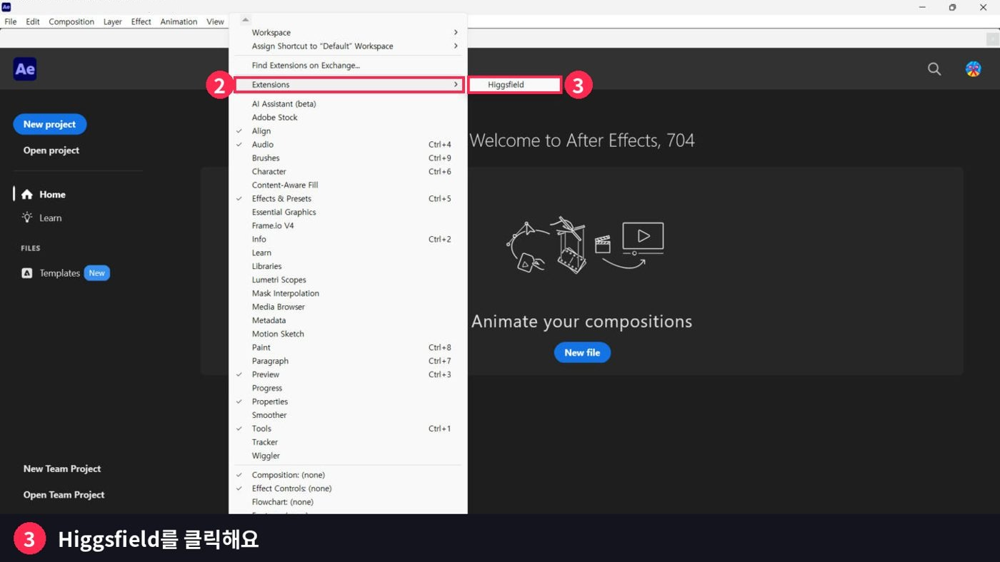
그림 17-2 ① Window ② Extensions에 마우스를 올리면 ③ Higgsfield가 보입니다.
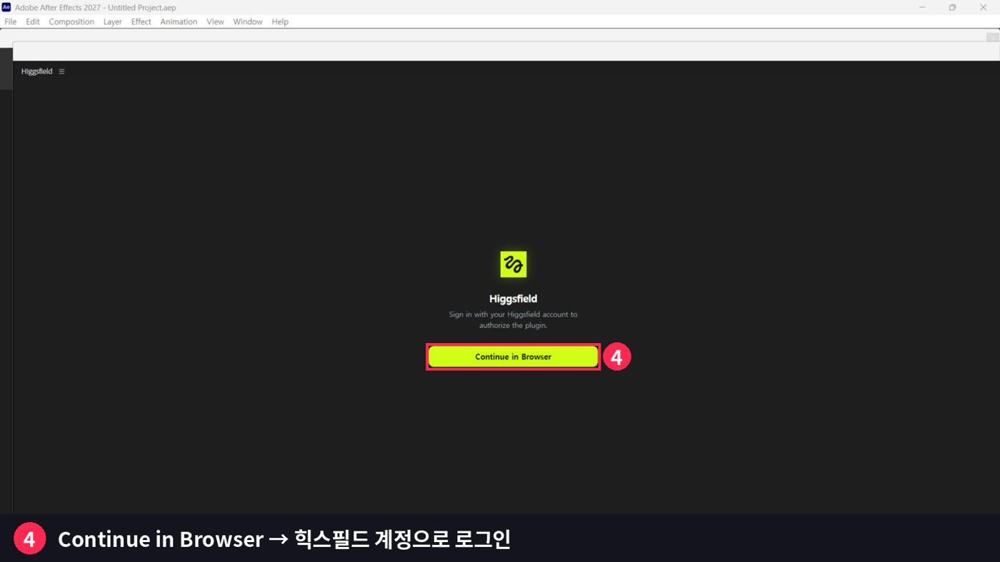
그림 17-3 처음 열면 로그인 화면이 나옵니다. Continue in Browser를 눌러 힉스필드 계정으로 로그인합니다. (사람이 할 일: 로그인)
17-4 패널 둘러보기
그림 17-4 로그인한 첫 화면. 오른쪽 위 MCP 표시는 Claude와 연결할 수 있다는 뜻입니다.그림 17-5 자주 쓰는 도구 다섯 가지와 Bridge MCP, Video generation(Seedance 2.5).그림 17-6 Scene(장면), Audio(오디오), Create(생성) 도구. 맨 아래 Plugins에는 내가 Supercomputer로 만든 앱이 나옵니다.
분류
도구 (v1.0.64 실제 화면 기준)
이 책
자주 쓰는
Draw to Edit, Supercomputer, Edit video, Reframe, Upscale
18장
새 기능
Bridge MCP, Video generation (Seedance 2.5)
17·18·21장
Enhance
Remove BG
18장
Scene
Change Lighting, Change Weather, Change Time of Day, Motion Control
claude.ai(또는 데스크톱 앱) 왼쪽 메뉴에서 Customize(사용자 지정) → Connectors(커넥터) → + Add → Add custom connector(커스텀 커넥터 추가)를 누릅니다.
2
이름 Higgsfield Bridge, 주소 https://bridge.higgsfield.ai/mcp를 넣고 추가 → 계속을 누릅니다.
3
힉스필드 로그인 창에서 허용을 누릅니다. (사람이 할 일)
4
애펙과 힉스필드 패널을 열어 둔 채 Claude에서 새 대화를 시작합니다. "애펙 연결됐어?"라고 물으면 Claude가 After Effects: connected를 확인해 줍니다.
메뉴 이름이 다르면Claude 화면 구성은 자주 바뀝니다. 위 메뉴가 보이지 않으면 설정에서 “Connectors(커넥터)”를 찾거나, support.claude.com에서 “custom connector”를 검색하세요. 추가할 수 있는 커넥터의 수는 요금제에 따라 다를 수 있습니다.
실제로 해 보니새로 추가한 커넥터는 대화를 새로 시작해야 바로 잡힙니다. 이미 열려 있던 대화에서는 조금 뒤에 자동으로 붙었습니다.
이 장 점검
성공하면Claude에서 ‘컴포지션 목록 보여줘’라고 했을 때 애펙의 컴포지션 이름이 그대로 답으로 돌아옵니다.
막혔을 때연결이 안 되면 애펙의 Higgsfield 패널에서 Connect를 다시 누르고, 한글 입력기 상태라면 영문으로 바꾼 뒤 시도합니다.
PART 6
힉스필드 패널
애펙 안의 패널 하나로 영상을 지우고, 늘리고, 바꿉니다. 클릭 몇 번이면 되지만 크레딧이 들기 때문에 연습은 저해상도로 합니다.
CHAPTER 18
패널 ① 편집 — 배경 제거·리프레임·타투 지우기 ●○○
오늘의 미션
5초짜리 걷는 인물 영상 하나로 ① 배경을 지우고 ② 세로 쇼츠로 바꾸고 ③ 팔의 타투를 지웁니다.
18-1 연습 영상 싸게 만들기
실습마다 고화질 영상을 쓰면 크레딧이 금방 줄어듭니다. 연습용은 가장 싼 모델, 가장 낮은 해상도로 만듭니다. 이 책은 Claude에게 부탁해 아래처럼 만들었고, 비용은 2.5크레딧이었습니다.
모델
해상도
길이
비용(실측 견적)
Seedance 2.0 mini
480p
5초
2.5
Grok Video 1.5 lite
480p
5초
5
Seedance 2.5 flash
480p
5초
10
PROMPT · Claude에게Seedance 2.0 mini, 480p, 5초, 16:9로 연습 영상을 만들어 줘. 흰 반팔 티셔츠를 입고 팔에 작은 꽃 타투가 있는 여성이 벽돌 벽을 따라 카메라 쪽으로 천천히 걸어오는 장면. 그다음 애펙에 "18_패널_걷는인물" 컴포지션을 만들어 이 영상을 넣어 줘.
Claude는 브리지로 1920×1080, 5초 컴포지션을 만들고 영상을 화면 크기에 맞춰 넣었습니다. 타투를 일부러 넣은 것은 18-4 실습에 쓰기 위해서입니다.
18-2 Remove BG — 배경 지우기
언제 쓰나인물을 다른 배경에 합성할 때, 자막을 인물 뒤에 넣을 때, 썸네일용 컷아웃이 필요할 때. 예전에는 프레임마다 로토스코핑하던 일을 1분 만에 흑백 매트로 받습니다.
1
타임라인에서 영상 레이어를 선택합니다.
2
패널 Enhance → Remove BG를 누르면 선택한 레이어가 자동으로 들어옵니다.
3
아래 칸에 남길 대상을 영어로 씁니다. 예: woman
4
Generate를 누릅니다. 애펙이 자동 저장 → 구간 렌더 → 업로드 → 처리 순서로 진행하며, 5초 영상에 약 1분 걸렸습니다.
그림 18-1 ① 레이어 선택 ② 미리보기 ③ 남길 대상 ④ Generate그림 18-2 결과는 흑백 매트입니다. 흰색이 남는 부분, 검은색이 지워질 배경입니다. 왼쪽 위 ↓로 내려받습니다. 실제 비용 약 5크레딧.
입력칸이 안 눌릴 때패널 입력칸은 한 번 클릭하면 반응하지 않고 두 번 클릭해야 글자가 들어갔습니다. 첫 클릭에 바로 타자를 치면 글자가 애펙 단축키로 들어갈 수 있으니 주의하세요.
저해상도의 한계480p 원본이라 윤곽이 계단처럼 거칩니다. 연습은 480p로, 실제 납품은 720p 이상 원본으로 하세요. "1"이라고 표시된 비용은 프레임 수에 따라 늘어납니다.
18-3 Reframe — 가로를 세로 쇼츠로
언제 쓰나16:9로 찍은 영상을 쇼츠·릴스(9:16)나 피드(4:5)로 바꿔야 할 때. 단순 자르기는 인물이 잘리지만, Reframe은 비는 위아래를 새로 그려 채웁니다. 대신 AI가 지어낸 부분은 반드시 확인합니다.
1
패널 Reframe을 누르고 비율에서 9:16을 고릅니다.
2
Generate(이 책 기준 18크레딧)를 누릅니다. 대기와 생성에 약 4분 걸렸습니다.
그림 18-3 ① 세로 미리보기 — 위아래가 비어 있습니다 ② 9:16 ③ Generate그림 18-4 잘라내는 대신 비는 부분을 AI가 새로 그렸습니다. ① 위쪽 하늘과 나무 ② 원본에 없던 청바지.
수업 포인트Reframe은 "자르기"가 아니라 "그려서 늘리기"입니다. 원본에 없던 옷과 배경이 생기므로, AI가 지어낸 부분을 확인하고 써야 한다는 것을 보여 주기 좋은 예입니다.
18-4 Draw to Edit — 타투 지우기
언제 쓰나광고 모델의 타투·로고·잡티를 지울 때, 소품 하나만 바꿀 때. 화면 전체가 아니라 표시한 부분만 고치므로 원본의 나머지는 최대한 지켜집니다.
1
패널 Draw to Edit을 엽니다.
2
붓 크기 슬라이더를 왼쪽으로 줄이고, 타투 위에 X자로 표시합니다.
3
입력칸(두 번 클릭)에 지시를 쓰고 ↑로 보냅니다. 비용 18크레딧, 약 8분.
PROMPT · Draw to Editremove the tattoo, clean natural skin
그림 18-5 ① 타투 위 표시 ② 붓 크기 ③ 지시 입력그림 18-6 전(빨간 원: 타투)과 후. 팔의 꽃 타투가 사라지고 피부만 남았습니다.그림 18-7 결과 화면. 결과 아래에 지시문, 방식(Draw To Video), 해상도, 길이가 기록됩니다.
18-5 Upscale — 화질 올리기
언제 쓰나480p로 시안을 확정한 뒤 납품용으로 키울 때, 오래된 저화질 자료를 쓸 때. “싸게 연습하고, 고른 컷만 키운다”가 크레딧을 아끼는 기본 순서입니다.
1
컴포지션을 열고 영상 레이어를 선택한 뒤 패널 맨 위 줄의 Upscale을 엽니다.
2
1k 또는 4K를 고릅니다. 버튼 숫자가 처음엔 "--"로 보이다가 몇 초 뒤 금액이 뜹니다.
그림 18-8 480p 연습 영상 · 1k 선택 · 버튼 표시 3크레딧, 실제 차감은 약 19크레딧이었습니다. 약 1분 40초 걸렸습니다.그림 18-9 결과. 벽돌 줄눈과 머리카락 결이 또렷해졌지만, 원본에 없던 디테일은 새로 생기지 않습니다.
Edit video말로 설명한 대로 기존 영상을 고치는 도구입니다. 19장의 비 장면에서 인물이 젖지 않은 문제를 고칠 때 씁니다(예: her hair and t-shirt are wet from rain).
원리 정리
도구
하는 일
이 책 실측
Remove BG
인물만 남기는 흑백 매트 생성
약 5크레딧 · 1분
Reframe
비율을 바꾸며 빈 곳을 새로 그림
18크레딧 · 4분
Draw to Edit
표시한 부분만 지시대로 바꿈
약 18크레딧 · 8분
Upscale
해상도를 1k·4K로 올림
표시 3 / 실제 약 19 · 2분
세 도구 모두 처리하는 동안 애펙을 계속 쓸 수 있습니다. 수업에서는 "생성을 걸어 두고 다음 작업으로 넘어가기"를 함께 가르치세요.
이 장 점검
성공하면결과 클립이 프로젝트 패널에 새 푸티지로 들어오고, 원본은 그대로 남아 있습니다.
막혔을 때크레딧이 부족하다는 메시지가 뜨면 해상도를 720p로 낮추거나 길이를 5초로 줄여 다시 요청합니다.
CHAPTER 19
패널 ② 장면 — 날씨·시간대·조명·동작 ●○○
오늘의 미션
18장의 걷는 영상 하나로 "맑은 오후 → 비 오는 날 → 밤"을 만듭니다.
장면 도구는 끌어다 놓기Weather·Time of Day·Lighting은 선택한 레이어가 자동으로 들어오지 않습니다. Project 패널의 영상을 도구 안 빈 칸으로 끌어다 놓아야 합니다.
19-1 Change Weather — 비 내리게 하기
언제 쓰나촬영 날 날씨가 맞지 않았을 때, 같은 장소로 계절·날씨 버전을 만들 때. 재촬영 비용과 일정을 줄여 줍니다.
그림 19-1 Change Weather 설정 화면. 버튼에는 68크레딧으로 보였지만 실제 차감은 22.5크레딧이었습니다.그림 19-2 맑음 → 비. 바닥은 젖고 하늘은 흐려졌지만, 인물의 옷과 머리는 젖지 않았습니다.
한계와 보완결과는 1:1·720p(Seedance 2.0)로 돌아옵니다. 인물까지 젖게 하려면 Edit video에 "her hair and t-shirt are wet from rain"처럼 따로 지시하거나, 애펙에서 비 파티클(CC Rainfall)을 앞에 얹어 보완합니다.
19-2 Change Time of Day — 밤으로 바꾸기
언제 쓰나낮에 찍은 장면을 저녁·밤 장면으로 이어 붙여야 할 때. 24장 카페 영상의 컷 4처럼 하루의 흐름을 한 장소로 보여 줄 수 있습니다.
PROMPT · Change Time of Daynight, warm street lights, deep blue sky
그림 19-3 Time of Day 설정. 이것도 표시 68, 실제 22.5크레딧.그림 19-4 낮 → 밤 전후
19-3 Change Lighting — 조명만 바꾸기 (설정 화면)
언제 쓰나역광이나 얼굴 그늘을 고칠 때, 여러 컷의 빛 방향을 맞출 때. 날씨·시간은 그대로 두고 빛만 바꿉니다.
그림 19-5 Lighting 설정 화면. 빛의 방향과 분위기를 글로 지시합니다.
19-4 Motion Control — 동작 옮기기 (설정 화면)
언제 쓰나춤·제스처를 그대로 다른 인물에게 입힐 때. 참고 동작 영상과 인물 이미지 두 가지만 있으면 됩니다. 실존 인물 사진은 동의 없이 쓰지 않습니다.
그림 19-6 Motion(참고 동작)과 Character(인물 이미지) 두 칸을 채우고 Generate합니다.
순서 팁날씨와 시간대를 한 번에 바꾸지 말고 하나씩 바꾸면 어떤 도구가 무엇을 바꿨는지 학생들이 구분하기 쉽습니다.
이 장 점검
성공하면같은 장면의 낮·밤 두 버전이 생기고, 원본과 나란히 비교할 수 있습니다.
막혔을 때인물 얼굴이 바뀌면 프롬프트에 ‘인물은 그대로 유지(keep the person unchanged)’를 넣고 강도를 낮춥니다.
도전 과제
한 클립으로 비·눈·석양 세 버전을 만들어 어떤 것이 가장 자연스러운지, 크레딧은 각각 얼마였는지 표로 남기세요.
CHAPTER 20
패널 ③ 오디오 — 빈 구간·번역·목소리 ●○○
오늘의 미션
말하는 인물 영상(10초)의 ① 빈 구간을 찾고 ② 영어로 번역하고 ③ 목소리를 바꿉니다.
20-1 말하는 연습 영상 만들기
Seedance 2.0 mini(5크레딧)는 시선과 목소리가 어색해서, Seedance 2.5·480p·10초·음성 포함(30크레딧)으로 다시 만들었습니다. 중간에 2초 쉬는 구간을 일부러 넣었습니다.
그림 20-1 패널 홈 → Audio 탭. Remove Silences · Translate · Change Voice
20-2 Remove Silences — 빈 구간 자르기 (무료)
언제 쓰나인터뷰·강의 영상의 1차 편집. “음…” 하고 쉬는 구간을 찾아 주므로, 30분 원본을 몇 분 만에 정리할 수 있습니다. 기기 안에서 처리해 크레딧이 들지 않습니다.
1
컴포지션을 열고 타임라인에서 영상 레이어를 선택(Ctrl+A)한 뒤 도구를 엽니다. 다른 컴포지션이 열려 있으면 엉뚱한 레이어가 들어옵니다.
2
Tightness(느슨함↔촘촘함)를 고르고 Remove Silences를 누릅니다.
그림 20-2 "무음 4곳, 3초 제거 예정". Cut을 누르면 타임라인 클립을 그 자리에서 자릅니다.그림 20-3 이 책 환경(애펙 2027 + 플러그인 v1.0.64)에서는 Cut에서 "Function ranges.filter is undefined" 오류가 났습니다.
오류가 날 때 손으로 자르기감지 결과를 참고해 빈 구간 시작과 끝에서 Ctrl+Shift+D(레이어 분할)로 자르고 가운데 조각을 지운 뒤, 뒤 조각을 앞으로 당깁니다. 플러그인 업데이트 후 다시 시도해 보세요.
20-3 Translate — 영어로 번역
언제 쓰나해외 홍보용 영어판, 외국인 학생을 위한 수업 영상. 자막이 아니라 목소리까지 바꿔 줍니다. 원 화자의 동의를 받고, AI 음성임을 밝힙니다.
그림 20-4 Target language: English. 10초 클립 30크레딧, 약 1분 40초.그림 20-5 결과는 패널 생성 화면에 뜹니다. 왼쪽 위 ↓로 내려받아 컴포지션에 넣습니다.
20-4 Change Voice — 목소리 바꾸기
언제 쓰나내레이션 시안을 여러 목소리로 들어 볼 때, 녹음 품질이 나쁜 목소리를 교체할 때.
그림 20-6 Voice 목록에서 목소리(기본 Grady)를 고릅니다. 2크레딧, 약 1분.
목소리와 초상다른 사람의 목소리로 바꾸거나 번역할 때는 본인의 동의를 받습니다. 결과물에는 AI 음성임을 밝힙니다.
이 장 점검
성공하면만든 소리가 타임라인에 오디오 레이어로 들어오고, 영상과 길이가 맞습니다.
막혔을 때목소리가 끊기면 원본 오디오의 잡음을 먼저 줄이고(Adobe Enhance Speech 등), 문장을 짧게 나눠 다시 요청합니다.
PART 7
Claude와 애펙 자체 AI
말로 설명하면 Claude가 브리지를 통해 애펙 안에서 컴포지션, 레이어, 키프레임, 익스프레션을 만듭니다. 결과는 언제든 손으로 고칠 수 있는 애펙 파일입니다.
CHAPTER 21
Claude ① 타이틀 만들고 고치기 ●●○
오늘의 미션
10초짜리 오프닝 타이틀을 Claude에게 만들게 하고, 대화와 손으로 한 번씩 고쳐 봅니다.
21-1 오프닝 타이틀 만들기
왜 Claude에게 맡기나키프레임 수십 개를 찍는 반복 작업을 말 한 줄로 끝냅니다. 결과는 일반 레이어와 키프레임이라, 마음에 들지 않으면 사람이 그대로 고칠 수 있습니다. 크레딧도 들지 않습니다.
PROMPT · Claude에게/use-after-effects
지금 열린 애펙에 1920×1080, 10초, 30fps 컴포지션을 만들어 줘.
· 0~3초: 검은 배경에 "Claude × Higgsfield × Adobe" 글자가 살짝 커지며 등장
· 3~7초: 아래에 "실습 교본" 글자가 한 글자씩 올라오며 등장
· 7~10초: 둘 다 위로 빠지며 페이드아웃
색은 보라(#9B5CFF)와 흰색. 레이어 이름은 한글로, 키프레임은 고칠 수 있게 남겨 줘.
그림 21-1 Claude가 만든 결과. ① 컴포지션 "Claude × Higgsfield × Adobe 인트로" ② 한글 레이어 이름(배경·타이틀·부제 - 실습 교본) ③ 범위 선택기와 위치·불투명도 키프레임. 크레딧은 들지 않습니다.
21-2 고치기 — 대화로, 그리고 손으로
원본을 지키기 위해 먼저 컴포지션을 복제(_v2 수정)하고, 그 복사본에서 고칩니다.
PROMPT · Claude에게원본은 그대로 두고 복제해서, 부제 "실습 교본"이 등장할 때 살짝 튀게 해 주고 제목은 위아래로 둥실 떠 있게 해 줘.
튀는 효과: Claude가 크기 키 4개를 넣었습니다. 3.0초 85% → 3.4초 108% → 3.7초 97% → 4.0초 100%.
둥실 효과: 제목 위치에 익스프레션을 넣었습니다. 기존 키프레임은 그대로 살아 있습니다.
EXPRESSION · 타이틀 › Position// 제목이 위아래로 살짝 떠 있는 움직임 var amp = 6; // 움직이는 높이(px) var speed = 2; // 속도 value + [0, Math.sin(time * speed) * amp];
손으로 고치기: 부제가 한 글자씩 나오는 속도는 텍스트 애니메이터의 Range Selector → Offset 키가 정합니다. 이 키는 브리지로 옮길 수 없어서, 타임라인에서 끝 키를 5.5초에서 7초로 직접 끌어 늦췄습니다.
그림 21-2 ① Offset 끝 키를 7초로 옮겨 등장을 느리게 ② Claude가 넣은 크기 키 4개 ③ 빨간 값 = 익스프레션이 걸린 위치
21-3 방송용 채널 ID로 다듬기
장식 선과 보라색을 빼고 차콜·쿨그레이로 정리했습니다. 제목은 흐림 30→0, 크기 112→100%로 맺히고, 2~3.2초에 CC Light Sweep이 한 번 지나갑니다. 배경은 방사형 Ramp, 빛 번짐은 Screen 모드 Ramp 레이어이며 모션 블러를 켰습니다.
그림 21-3 채널ID_v3 방송용 (6초)
21-4 Claude가 못 하는 것, 사람이 할 일
직접 해 보기: 숫자 카운트업텍스트 레이어 › Text › Source Text의 스톱워치를 Alt+클릭하고 아래를 붙여 넣습니다. Math.round(linear(time, 0, 3, 0, 2026)).toLocaleString()
Claude가 브리지로 한 일
사람이 해야 했던 일
컴포지션·텍스트·도형 레이어 만들기 위치·크기·회전·불투명도 키프레임 위치 등 변형 속성의 익스프레션 영상 가져오기, 프레임 내보내기
텍스트 애니메이터(Range Selector) 키 옮기기 글자 내용(Source Text) 익스프레션, 예: 0 → 2,026 카운트업 프로젝트를 처음 저장할 폴더 고르기 계정 로그인과 허용
이 장 점검
성공하면Claude가 만든 레이어 이름이 의미 있게 붙어 있고, 손으로 키프레임을 고쳐도 깨지지 않습니다.
막혔을 때결과가 마음에 안 들면 ‘다시 만들어’ 대신 ‘제목 글자만 20% 작게, 등장을 0.3초 늦게’처럼 고칠 부분과 숫자를 말합니다.
도전 과제
같은 타이틀을 말로 세 번 수정하며, 몇 번째 지시에서 원하는 결과가 나왔는지와 그 지시문을 기록하세요.
CHAPTER 22
Claude ② 로고 리빌·하단 자막·전환·유리 효과 ●●○
브리지에는 자주 쓰는 모션그래픽을 한 번의 요청으로 만드는 도구가 들어 있습니다. 이 장의 프롬프트는 그대로 써도 됩니다.
22-1 한 번에 만드는 도구 — 하단 자막과 유리 효과
만들 것
예시 프롬프트
로고 리빌
지금 컴포지션의 로고로 3초 로고 리빌을 만들어 줘. 선이 먼저 그려지고 면이 채워진 뒤 살짝 튀며 멈추게.
하단 자막 (Lower Third)
인터뷰용 하단 자막을 만들어 줘. 제목 "Adobe After Effects", 부제 "어도비 애프터이펙트 · AI 실습", 진회색 막대가 왼쪽에서 밀려 나오게.
타이틀 카드
9:16 쇼츠용 타이틀 카드를 만들어 줘. 큰 제목 한 줄과 작은 부제, 2초 등장.
장면 전환
두 컷 사이에 0.5초짜리 빛 번쩍임 전환을 넣어 줘.
리퀴드 글래스
배경 영상 위에 유리 질감의 둥근 버튼과 메뉴 바를 올려 줘.
점검
지금 컴포지션을 1초 간격 콘택트 시트로 보여 주고, 글자가 화면 밖으로 나가는 곳이 있는지 확인해 줘.
그림 22-1 하단 자막 "Adobe After Effects"(진회색 막대)와 오른쪽 위 리퀴드 글래스 배지 "AI 실습 LIVE". 레이어가 모두 따로 살아 있어 손으로 고칠 수 있습니다.
22-2 로고 리빌과 장면 전환
PROMPT · Claude에게밝은 회색 배경의 5초 컴포지션 "22장_로고리빌·전환"을 만들고, "AE AI LAB" 글자 로고가 3초 동안 커지며 나타나게 해 줘. 굵은 글꼴, 자간 넓게, 진한 차콜색. 끝에는 왼쪽으로 닦아내는 1초 전환을 넣어 줘.
그림 22-2 로고 리빌(scale 방식). 레이어는 Transition · Logo · 배경 세 개뿐이라 고치기 쉽습니다.그림 22-3 전환(wipe_left)이 처음엔 0초에 놓여서, 타임라인에서 막대를 3.5초로 직접 끌어 옮겼습니다. 브리지 전환 도구에는 시작 시간을 정하는 값이 없습니다.
점검은 AI에게도23장의 AI Assistant가 이 컴포지션을 보고 "3~3.5초와 4.5~5초에 배경만 보이는 빈 구간이 있다"고 짚었습니다. 로고 레이어 끝을 5초까지 늘리면 해결됩니다.
이 장 점검
성공하면로고 리빌과 하단 자막이 각각 별도 컴포지션으로 정리되어 다른 영상에 재사용할 수 있습니다.
막혔을 때익스프레션 오류 띠가 뜨면 유리 효과 리그처럼 다른 레이어를 참조하는 레이어를 지웠는지 확인합니다. 지웠다면 참조하던 레이어도 함께 지웁니다.
CHAPTER 23
애펙 자체 AI — AI Assistant와 Object Matte ●○○
애펙 2027에는 어도비가 직접 넣은 AI가 두 가지 있습니다. 대화로 일을 맡기는 AI Assistant와, 클릭 한 번으로 피사체를 따 주는 Object Matte입니다.
Window 메뉴에 AI Assistant (beta)가 들어 있습니다. 27.0에서 추가된 패널로, 프로젝트 정리, 익스프레션 작성과 수정, 이미지·영상 생성을 대화로 맡깁니다. 2026년 4월(26.2)에 로토 브러시를 대신해 들어온 Object Matte는 Object Matte Tool, Quick Selection, Selection Brush, Refine Edge 네 가지 도구로 피사체를 고릅니다(11장).
그림 23-1애펙 2027의 Window 메뉴. AI Assistant (beta), Adobe Stock, Content-Aware Fill, Essential Graphics, Frame.io V4가 여기에 모여 있습니다.
할 일
힉스필드 패널
애펙 자체 AI
배경 분리
Remove BG (클라우드, 크레딧)
Object Matte (기기 안, 무료)
대화로 작업 지시
Claude 브리지, Supercomputer
AI Assistant (beta)
새 그림 만들기
강함 (생성 모델 30여 종)
Firefly 연동
23-1 AI Assistant로 프로젝트 점검
언제 쓰나남이 만든 프로젝트를 넘겨받았을 때, 납품 직전 마지막 점검, 레이어가 수십 개라 구조가 안 보일 때. 고치기 전에 “아무것도 바꾸지 말고 설명만”이라고 시키는 것이 안전합니다.
1
Window(창) → AI Assistant (beta)를 엽니다. 처음엔 몇 초 로딩됩니다.
2
샘플 프롬프트 Inspect the open After Effects project를 누르면 입력칸에 긴 영어 지시문이 채워집니다. "아직 아무것도 바꾸지 말라"는 문장이 들어 있습니다. ↑로 보냅니다.
그림 23-2 AI Assistant 첫 화면과 샘플 프롬프트그림 23-3 동작 승인 요청
그림 23-4 약 1분 뒤 보고서. 중복 버전(v1·v2), 꺼진 유리 레이어, 로고 컴포지션의 빈 구간, 비어 있는 렌더 대기열을 찾아냈습니다. 힉스필드 크레딧은 들지 않았습니다.
어도비 생성 크레딧AI Assistant의 AI 동작 대부분은 어도비 계정의 생성 크레딧(generative credits)을 씁니다. 남은 양은 어도비 계정 페이지에서 확인하세요. 힉스필드 크레딧과는 별개입니다.
Claude와 나눠 쓰기Claude 브리지는 "만들기"에, AI Assistant는 애펙 안에서 "점검하고 정리하기"에 강했습니다. 납품 전에 AI Assistant로 한 번 훑는 순서를 권합니다.
23-2 Object Matte — 직접 해 보기
Remove BG와 같은 걷는 영상에 Object Matte를 써서 결과를 비교해 보세요. Layer 패널에서 Object Matte Tool(Alt+W)로 인물을 한 번 클릭하고, Refine Edge로 머리카락 경계를 다듬습니다. 기기 안에서 처리되어 크레딧이 들지 않습니다.
어도비는 2026년 11월 10일 MAX에서 외부 AI 에이전트가 포토샵·일러스트레이터·프리미어·애펙을 직접 다루는 로컬 MCP 연동을 미리 보여 주었고, 2027년 초 비공개 베타를 예고했습니다. 정식으로 나오면 이 장의 실습을 다시 해 볼 만합니다.
이 장 점검
성공하면AI Assistant의 답대로 메뉴를 따라가 원하는 기능을 찾았습니다.
막혔을 때답이 실제 메뉴와 다르면 버전 차이일 수 있습니다. Help → About에서 버전을 확인하고, 버전을 포함해 다시 묻습니다.
PART 8
완성과 정리
배운 것을 하나로 묶어 30초 영상을 완성하고, 비용과 책임을 정리합니다.
CHAPTER 24
통합 프로젝트 — 30초 홍보영상 기획 ●●○
오늘의 미션
가상의 동네 카페 "온기"의 30초 홍보영상(16:9)을 기획합니다. 영상 생성 전에 콘티를 먼저 확정해 크레딧 낭비를 막는 것이 이 장의 핵심입니다.
24-1 Claude와 5컷 콘티 짜기
PROMPT · Claude에게동네 카페 "온기" 30초 홍보영상을 5컷(각 6초)으로 나눠 줘. 오후에서 저녁으로 시간이 흐르고, 마지막은 로고가 나오는 엔드 카드. 컷마다 화면 설명, 자막, 쓸 애펙·힉스필드 기능을 표로 정리해 줘.
컷
화면
자막
쓰는 기능 (이 책의 장)
1
가게 외관, 오후 햇살
골목 끝, 작은 온기
Video generation · 18장 연습법
2
라테 아트 클로즈업
한 잔에 담는 정성
Upscale으로 납품 화질 (18-5)
3
창가에서 책 읽는 손님
머물고 싶은 자리
하단 자막 (22-1)
4
저녁 외관, 창문 불빛
하루의 끝에도
Change Time of Day (19-2)
5
컵 하나와 로고
카페 온기
로고 리빌·전환 (22-2), Reframe로 쇼츠 (18-3)
24-2 콘티 그림을 싸게 만들어 애펙에 놓기
콘티 그림은 영상이 아니라 이미지로 만듭니다. 처음에는 가장 싼 Z Image(장당 0.15크레딧)로 수채화풍을 만들었지만, 일러스트는 실제 영상의 톤을 예상하기 어려워 Nano Banana 2로 실사 스틸을 다시 만들었습니다. 장당 1.5크레딧, 21장에 7.5크레딧입니다. 같은 가게가 오후와 저녁에 이어지도록 지시문에 “the same small Korean cafe”를 넣었습니다. Claude가 브리지로 "24장_스토리보드" 컴포지션을 만들어 그림을 27.5% 크기로 배치하고 컷 번호와 시간을 붙였습니다.
그림 24-1 애펙 안에서 완성한 5컷 실사 콘티(24장_스토리보드_v2). 그림마다 레이어가 따로 있어, 컷을 바꾸면 그 레이어만 교체합니다.
캡처 팁컴포지션 패널 위에 마우스를 올리고 `(물결표 키)를 누르면 패널이 화면 가득 커집니다. 선택 테두리는 Ctrl+Shift+A로 지운 뒤 찍습니다.
24-3 학생 과제로 완성하기
단계
하는 일
예상 크레딧 (480p 연습 기준)
1
컷 1~3을 영상으로 생성 (Seedance 2.0 mini, 5초)
2.5 × 3 = 7.5
2
컷 1을 복제해 Change Time of Day로 컷 4 만들기
약 22.5
3
자막·로고 리빌·전환을 Claude에게 맡기기
0
4
AI Assistant로 빈 구간·꺼진 레이어 점검 (23-1)
0
5
최종 컷만 Upscale, 쇼츠는 Reframe
약 19 + 18
영상을 다시 만들어야 할까?기획 단계에서는 필요 없습니다. 영상 한 번 다시 뽑는 데 2.5~30크레딧이 들지만, 실사 스틸 21장은 7.5크레딧입니다. 스틸이 확정되면 그 이미지를 첫 프레임으로 넣어 영상으로 바꾸면(image-to-video) 톤이 그대로 이어집니다. 콘티에서 바꾸는 것이 가장 싼 수정입니다.
평가 기준 (수업용)
항목
배점
보는 점
기획
20
타깃과 메시지가 콘티에 드러나는가
AI 활용의 적절성
20
AI에 맡길 것과 손으로 할 것을 잘 나눴는가
모션 완성도
30
리듬, 자막 가독성, 컷 연결
검수
20
AI가 지어낸 부분(손, 글자, 옷)을 찾아 고쳤는가
작업 기록과 비용
10
프롬프트와 크레딧을 기록했는가
이 장 점검
성공하면기획표 → 소스 생성 → 애펙 합성 → 출력까지 한 폴더에 단계별 파일이 남아 있습니다.
막혔을 때전체가 막막하면 30초를 5초짜리 여섯 컷으로 나누고, 컷마다 ‘필요한 소스 / 만드는 방법 / 예상 크레딧’ 세 칸만 채웁니다.
도전 과제
같은 기획으로 15초 버전과 6초 범퍼 광고 버전을 만들어 보세요. 무엇을 빼야 했는지가 곧 기획의 핵심입니다.
CHAPTER 25
크레딧·저작권·검수 (실제 기록표) ●○○
이 책의 실습에 실제로 든 크레딧과 시간을 그대로 적었습니다. 이어서 AI로 만든 영상을 내보내기 전에 확인할 저작권과 검수 항목을 정리합니다.
25-1 이 책 실습의 실제 비용
실습
설정
크레딧
시간
연습 영상 생성
Seedance 2.0 mini · 480p · 5초
2.5
약 1분
Remove BG
woman · 5초
약 5
약 1분
Reframe
9:16 · 5초
18
약 4분
Draw to Edit
타투 제거 · 480p · 5초
약 18
약 8분
Claude 타이틀·수정
브리지 작업
0
수십 초
Change Weather
비 · 5초 (표시 68)
22.5
약 5분
Change Time of Day
밤 · 5초 (표시 68)
22.5
약 5분
말하는 영상
Seedance 2.0 mini / 2.5 · 480p · 10초
5 + 30
약 2분
Remove Silences
기기 안 처리
0
몇 초
Translate
영어 · 10초
30
약 2분
Change Voice
Grady · 10초
2
약 1분
Upscale
1k · 5초 (표시 3)
19
약 2분
콘티 이미지
Z Image 21장 + Nano Banana 2 21장
0.75 + 7.5
약 1분
AI Assistant · 로고 리빌
애펙 안 작업
0
약 1분
기본기·합성 실습 소스
Seedance 2.0 mini 720p 5초 8개 + 이미지 3장
약 45
약 3분
도판용 이미지
GPT Image 19장 (조명·직업·스튜디오 예시)
약 14
약 5분
합계
약 238
Ultra 요금제 기준, 1,510.04 → 1,272.15 크레딧(2026.11.23). 장면 도구는 표시보다 적게, Upscale은 표시보다 많이 차감되었으니 잔액으로 꼭 확인하세요. 비용은 요금제와 시점에 따라 달라질 수 있습니다.
25-2 아끼는 법
연습은 가장 싼 모델·480p·5초로 합니다. Claude에게 "가장 싼 걸로 견적부터 보여 줘"라고 하면 생성 전에 모델별 비용을 비교해 줍니다.
패널의 Generate 버튼 숫자는 프레임 수에 따라 늘어날 수 있습니다.
요금제의 무제한 목록에 있는 모델은 플러그인에서도 크레딧이 들지 않습니다.
25-3 저작권과 검수
Reframe·Draw to Edit이 새로 그린 부분(옷, 배경, 피부)을 확인했는가
손, 얼굴, 글자, 로고가 깨진 프레임이 없는가
실존 인물·상표·캐릭터를 생성하지 않았는가
목소리 변경·번역은 본인 동의를 받았는가
사용한 모델, 프롬프트, 크레딧, 날짜를 기록했는가
클라이언트에게 AI 생성 구간을 알렸는가
이 장 점검
성공하면이번 작업에 쓴 크레딧, 모델, 프롬프트가 표 한 장에 정리되어 있습니다.
막혔을 때생성이 거절되면 상표·실존 인물·로고를 뜻하는 단어를 빼고 일반 명사로 바꿔 다시 요청합니다.
CHAPTER 26
앞으로 — 발전 방향, 배움, 도전 ●○○
AI 도구는 몇 달마다 바뀝니다. 버튼 위치는 바뀌어도 “무엇을 맡기고 무엇을 직접 할지” 판단하는 힘은 남습니다. 이 장은 다음 1~2년을 내다보고, 실력을 증명하고 작품을 내보낼 길을 소개합니다.
26-1 앞으로 이렇게 바뀝니다
흐름
지금(2026년 말)
다음 단계(전망)
애펙 안의 AI
AI Assistant 베타: 프로젝트 정리, 익스프레션 작성·수정, 점검
정식 출시, 반복 작업을 자동으로 맡는 상시(always-on) 에이전트
외부 AI 연결
힉스필드 브리지처럼 플러그인을 거쳐 연결
어도비 로컬 MCP(2027 비공개 베타)로 Claude·ChatGPT가 원본 파일 직접 편집
생성 품질
480p 연습, 720p~1080p 납품, 업스케일로 4K
네이티브 4K, 긴 길이, 인물·소품의 일관성 향상
사람의 역할
버튼 조작과 키프레임 손질이 많음
기획·연출·검수·저작권 판단 — “감독”의 비중이 커짐
어도비 MAX 2026 발표와 힉스필드 공지를 바탕으로 한 전망입니다. 출시 시기와 기능은 바뀔 수 있습니다.
그래서 무엇을 연습할까① 좋은 지시문을 쓰는 힘(무엇을, 몇 초에, 어떤 느낌으로) ② AI 결과를 의심하고 고치는 눈 ③ 애펙 기본기(레이어·키프레임·익스프레션). 세 번째가 있어야 AI가 만든 파일을 손으로 마무리할 수 있습니다.
26-2 힉스필드 아카데미와 수료증
힉스필드 아카데미(higgsfield.ai/academy)는 힉스필드 안의 영상 강좌 모음입니다. 강의는 무료로 볼 수 있고, 각 강의 끝의 과제를 제출하면 다음 강의가 열리며, 과정을 마치면 수료증(Certificate of Completion)을 받습니다. 과제를 하려면 유료 구독과 크레딧이 필요합니다.
강좌 예
내용
AI Creation: First Steps
입문. 소개와 7개 강의, 약 1시간 42분. 첫 영상, 제품 사진, 영상 광고 만들기. 수료증
Cinema Studio Complete Tour
카메라 무빙과 샷 설계
The AI Filmmaking Pipeline
기획에서 편집까지 AI 영화 제작의 흐름
Build an AI Ad Agency with Claude + Higgsfield
Claude와 힉스필드로 광고 포트폴리오·고객 파이프라인 만들기
Blockbuster 4K
4K 결과물을 만드는 과정
수업에 쓰는 법학기 초에 입문 과정을 과제로 내고 수료증을 제출하게 하면, 학생들이 같은 출발선에서 시작합니다. 외부 사이트(Udemy 등)에도 힉스필드 강좌와 자체 인증 시험이 있지만, 힉스필드 공식 수료증과는 다릅니다.
26-3 어도비 자격증
어도비는 Adobe Certified Professional 자격을 운영합니다. 앱별 시험(예: After Effects의 Visual Effects & Motion Graphics)을 보고 합격하면 디지털 배지를 받습니다. 국내에서는 지정 시험 센터나 학교 단체 응시로 볼 수 있으니, 학과 사무실이나 어도비 교육 파트너에게 문의하세요. AI 기능을 직접 묻는 시험은 아니지만, AI가 만든 결과를 손으로 고치는 기본기를 증명하는 데 좋습니다.
26-4 힉스필드 영화제와 공모전
대회
규모
조건과 일정
Global Film Festival 2026
상금 총 $1,000,000 · 14편 수상
2026년 8월 개막, 11월 초 수상작 발표. 3분 이상 단편, 1~4인 팀. 최종 출품 약 5,000편
Talent Contest
상금 총 $1,000,000 · 20편 수상
3~7분 오리지널 필름. 제작 기간 2026.11.12~26, 결과 12월 3일 발표 예정
Make Your Action Scene (2026.2.9~3.1)
상금 $500,000
139개국에서 8,752편 출품
공통 규칙: AI 영상·이미지는 힉스필드 안에서 만들고, 대회 전용 프로젝트에 보관해야 합니다. 편집은 애펙·프리미어 같은 외부 프로그램에서 해도 됩니다.
권리: 저작권은 만든 사람에게 남지만, 힉스필드가 출품작을 홍보에 쓸 수 있는 넓은 권리를 가집니다. 응모 전 규정(Official Rules)을 꼭 읽으세요.
국내 공모전: 지자체·방송사·영화제의 AI 영상 부문이 늘고 있습니다. 응모 요강에서 “AI 사용 고지”와 “생성 도구 제한”을 먼저 확인하세요.
출처: higgsfield.ai/community/contests, 힉스필드 공식 블로그(Talent Contest, Academy), Advanced Television(2026.3). 2026년 11월 확인.
26-5 이 책 다음에 할 일
24장의 카페 콘티를 실제 영상으로 완성해 포트폴리오에 넣기
힉스필드 아카데미 입문 과정 수료증 받기
3분 단편을 기획해 다음 공모전에 내기
어도비 로컬 MCP가 나오면 같은 실습을 다시 해 보고 차이를 기록하기
APPENDIX
부록
A. 단축키 총정리 (Windows 기준 · Mac은 Ctrl→Cmd, Alt→Option)
프로젝트·컴포지션
레이어 만들기
Ctrl+I
파일 불러오기
Ctrl+Y
솔리드
Ctrl+N
새 컴포지션
Ctrl+Alt+Y
조정 레이어
Ctrl+K
컴포지션 설정
Ctrl+Alt+Shift+Y
널
Ctrl+Alt+N
새 프로젝트
Ctrl+Alt+Shift+T
텍스트
Ctrl+Shift+C
프리컴포즈
Ctrl+Alt+Shift+C
카메라
Ctrl+Alt+Shift+S
번호 올려 저장
Ctrl+Alt+Shift+L
라이트
도구
속성 펼치기
V
선택
A P S R T
기준점·위치·크기·회전·불투명도
H / Space
손(화면 이동)
Shift+P 등
속성 여러 개 함께
Z
확대
U / UU
키 있는 / 바뀐 속성
W
회전
E / EE
효과 / 익스프레션
Y
기준점 이동
M / MM
마스크 경로 / 전체
Q
사각·원형 도구
L / LL
오디오 / 파형
G
펜
F
마스크 페더
Ctrl+T
문자
C
카메라 도구
Alt+W
Object Matte
Ctrl+P
퍼펫 핀
Shift+D
큐브(3D 메시)
시간 이동
레이어 편집
Home / End
처음 / 끝
Ctrl+D
복제
PgUp / PgDn
한 프레임
Ctrl+Shift+D
분할
Shift+PgUp/Dn
열 프레임
[ / ]
시작·끝을 현재 시간으로 이동
J / K
이전 / 다음 키프레임
Alt+[ / Alt+]
시작·끝 잘라내기
I / O
레이어 시작 / 끝
Ctrl+] / Ctrl+[
한 칸 위 / 아래로
Alt+Shift+J
시간 직접 입력
Ctrl+Alt+R
시간 거꾸로
B / N
작업 영역 시작 / 끝
Ctrl+Alt+T
Time Remap
Ctrl+Alt+O
Auto-Orient
키프레임·애니메이션
보기·미리보기·출력
Alt+Shift+P 등
현재 시간에 키 추가
Space / 0(숫자패드)
미리보기
F9
Easy Ease
Shift+/
화면에 맞추기
Shift+F9 / Ctrl+Shift+F9
Ease In / Out
. / ,
확대 / 축소
Ctrl+Alt+H
Hold 키
`
패널 최대화
Ctrl+Alt+K
보간 설정
Ctrl+'
격자(Grid)
Shift+F3
그래프 에디터
'
세이프 영역
Alt+드래그(키 묶음)
키 간격 늘이기·줄이기
Ctrl+M
렌더 큐
Alt+클릭(스톱워치)
익스프레션
Ctrl+Alt+M
Media Encoder
Ctrl+Alt+S
프레임 저장
한글 입력 상태 주의한 글자 단축키(U, P, S…)는 영문 입력 상태에서만 작동합니다. 한/영 키를 먼저 확인하세요.
B. 자주 쓰는 이펙트 30선
분류
이펙트와 쓰임
흐림·선명
Gaussian Blur(전체 흐림), Camera Lens Blur(렌즈 흐림), Directional Blur(속도감), CC Radial Blur(줌 효과), Unsharp Mask(선명)
빛
Glow(빛남), Lens Flare(렌즈 플레어), CC Light Rays(빛줄기), CC Light Sweep(빛이 쓸고 지나감)
Warp Stabilizer(흔들림 보정), Time Remap(속도 조절, 레이어 우클릭 → Time)
C. 플러그인 생태계
플러그인
하는 일
Boris FX Mocha AE (내장)
면 추적, 화면 교체, 정교한 로토
Cinema 4D Lite · Cineware (내장)
3D 장면 연동
Maxon Red Giant (Trapcode Particular 등)
입자, 3D 스트로크, 음악 반응(유료)
Video Copilot Element 3D · Saber
3D 모델, 광선·네온(Saber는 무료)
Duik
캐릭터 리깅(무료 스크립트)
Bodymovin / LottieFiles
웹용 Lottie(JSON) 내보내기
Higgsfield 플러그인
AI 생성·편집 패널과 Claude 브리지(이 책 17~22장)
D. 용어 사전
용어
뜻
컴포지션(Comp)
레이어를 쌓는 판. 영상 한 편 또는 그 부품
키프레임
특정 시간의 값을 기록한 점. 두 키 사이를 애펙이 채움(보간)
보간(Interpolation)
키 사이 값의 변화 방식. Linear, Bezier, Hold
알파 채널
투명도 정보. 투명 배경 파일에 필요
매트(Matte)
무엇을 보이고 감출지 정하는 흑백 정보
스필(Spill)
그린스크린 색이 피사체에 번진 것
로토스코핑
프레임마다 피사체 윤곽을 따는 작업
트래킹
영상 속 점·면·카메라 움직임을 추적
프리컴포즈
레이어를 새 컴포지션으로 묶기
익스프레션
속성에 붙이는 자바스크립트 규칙
MOGRT
프리미어에서 고칠 수 있는 모션 그래픽 템플릿
MCP
AI가 외부 프로그램의 기능을 쓰게 하는 공통 규격
크레딧
힉스필드 생성 비용 단위
프레임레이트(fps)
1초에 보여 주는 장면 수
LUT
색을 한 번에 바꾸는 변환표(룩)
E. 깃허브 저장소 안내
이 책의 실습 자료는 깃허브 저장소에 정리되어 있습니다. 주소는 뒤표지에 있습니다. 소스를 그대로 받아 같은 결과를 재현하고, 프롬프트를 고쳐 나만의 결과를 만들어 보세요.
폴더
내용
sources/
실습 영상·이미지 목록(manifest.csv), 생성 모델·설정·크레딧·프롬프트
prompts/
장별 Claude·힉스필드 프롬프트 원문
expressions/
7장의 익스프레션 전체(.js 파일, 주석 포함)
project/
실습 애펙 프로젝트(.aep)와 장별 컴포지션 안내
captures/
표기를 넣기 전의 화면 캡처 원본
book/
이 책의 PDF와 HTML 원고, 책에 실린 그림(img/), 조판 스크립트(build/)
diagrams/
도식(SVG)을 만든 파이썬 코드
log/
실제 작업 기록(작업 순서, 오류, 크레딧)
컴포지션 이름저장소의 프로젝트 파일은 컴포지션 이름 앞에 책의 장·절 번호를 붙여, 프로젝트 패널에서 이름순으로 정렬하면 책 순서대로 보입니다(01_처음움직임, 05-1_글로우·잔상 … 24-2_스토리보드_v2). 일부 캡처 속 탭에는 집필 중에 쓴 이전 이름(E_샘플_…, C7~C11, 3장·6장·8장 등)이 보이지만 같은 컴포지션입니다.
소스 이용 안내실습 소스는 저자가 힉스필드 유료 플랜으로 생성한 것으로, 교육·비영리 실습에 자유롭게 쓸 수 있도록 공개합니다. 상업적 이용 시에는 각 생성 모델의 이용 약관을 확인하세요. 실존 인물을 본뜨지 않도록 프롬프트를 썼습니다.
F. 실습 작업 기록 (2026.11.22~23)
Claude 데스크톱 앱으로 PC 연결, 컴퓨터 사용 켜기, 어도비 앱 접근 허용
Creative Cloud에서 After Effects 2027 설치 (2024와 함께 사용)
문서 폴더에 ae_force_english.txt → 애펙 영문 전환 → Crash Repair에서 Continue
Claude 커스텀 커넥터 안내 — support.claude.com/en/articles/11175166
Model Context Protocol — modelcontextprotocol.io
가격, 버전, 메뉴 이름은 2026년 11월 23일에 확인한 내용입니다. 구독형 소프트웨어는 수시로 바뀌므로 실제 화면이 다르면 위 공식 페이지를 먼저 확인하세요.
AUTHOR
지은이
안지아 (Ji-A Ahn)
이화여자대학교 영상디자인학과에서 학사, 석사, 박사 학위를 받았습니다. 현재 경복대학교 영상미디어콘텐츠과 조교수이자 홍보디자인센터장으로, 영상 제작과 모션그래픽을 가르치고 대학과 지역 기업의 홍보 영상을 만듭니다. 관심 분야는 AI, DX, XR, 영상이며, 실습을 먼저 하고 이론은 뒤에 붙이는 수업 방식을 이 책에도 그대로 담았습니다.
성남시청 공보관실 이미지디자이너와 ㈜도쉼 대표를 지냈고, 지은 책으로 『UX란 무엇인가?』, 『ChatGPT 수업활용 code & play』 등이 있습니다.
이 책을 만든 과정
이 책의 실습과 화면은 2026년 11월 22일과 23일 이틀 동안, 저자의 지시에 따라 Claude가 Windows PC의 애프터이펙트를 직접 조작해 만들었습니다. 컴포지션과 레이어는 힉스필드 브리지로, 메뉴 선택과 화면 캡처는 Claude의 컴퓨터 사용 기능으로, 실습 영상과 도판 사진은 힉스필드의 생성 모델로 만들었습니다. 로그인과 결제, 무엇을 넣고 뺄지의 판단, 마지막 검수는 사람이 했습니다.
항목
기록
화면 캡처와 도판
99점 (실제 캡처, 직접 그린 도식, 생성 이미지에 표기를 더한 사진)
애펙 프로젝트
컴포지션 34개 — 저장소 project 폴더의 .aep 한 파일
힉스필드 크레딧
약 238 (25장의 기록표)
조판
HTML과 CSS로 짜고 PDF로 출력 (182 × 257mm)
책 정보
항목
내용
책 이름
애프터이펙트 2027 완전 실습 — 기본기부터 AI 협업까지
지은이 · 펴낸 날
안지아 · 2026년 11월 23일 (2027 EDITION, 1판)
기준 버전
Adobe After Effects 27.0 · Higgsfield Plugin v1.0.64
실습 자료
깃허브 저장소 (주소는 뒤표지)
글꼴
본문 Noto Sans CJK KR, 도판 나눔고딕 (SIL Open Font License)
화면 캡처와 도판은 저자가 직접 만들었습니다. Adobe, After Effects, Premiere는 Adobe Inc.의, Higgsfield는 Higgsfield AI의, Claude는 Anthropic의 상표입니다. 이 책은 각 회사의 공식 출판물이 아닙니다.
애펙 한 가지 프로그램을 처음부터 끝까지. 손으로 먼저 익히고, AI와 함께 완성합니다.
기본기 · 모션그래픽 · 익스프레션 · 합성 · 3D
힉스필드 플러그인 패널 · Claude 브리지 · 애펙 AI Assistant
실제 화면 캡처와 실제 크레딧 기록
실습 자료 · 프로젝트 파일github.com/aixrartdesign-maker/ae-2027-ai-workbook